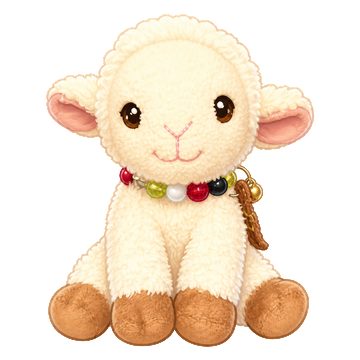
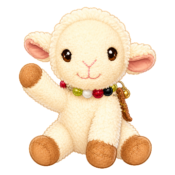
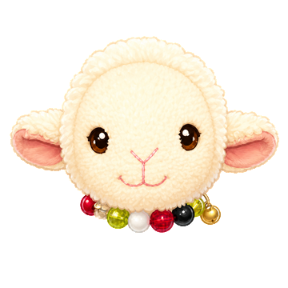

<!DOCTYPE html>
<html lang="ko">
<head>
<meta charset="utf-8">
<meta name="viewport" content="width=device-width, initial-scale=1, viewport-fit=cover">
<meta name="theme-color" content="#FAF6EF">
<meta name="apple-mobile-web-app-capable" content="yes">
<meta name="apple-mobile-web-app-title" content="LFGC 유아부">
<title>런던순복음교회 유아부 출석부</title>
<meta name="description" content="런던순복음교회 유아부 반별 출석체크 및 기도제목 관리">
<meta property="og:title" content="런던순복음교회 유아부 출석부">
<meta property="og:description" content="런던순복음교회 유아부 반별 출석체크 및 기도제목 관리">
<meta property="og:type" content="website">
<meta property="og:site_name" content="런던순복음교회 유아부">
<meta property="og:image" content="https://luh702.github.io/lfgctoddler/assets/soonbok-wave.png">
<meta property="og:image:alt" content="런던순복음교회 유아부 마스코트 순복이">
<link rel="icon" type="image/png" sizes="64x64" href="assets/favicon.png">
<link rel="apple-touch-icon" href="assets/apple-touch-icon.png">
<link rel="preconnect" href="https://fonts.googleapis.com">
<link rel="preconnect" href="https://fonts.gstatic.com" crossorigin>
<link href="https://fonts.googleapis.com/css2?family=Noto+Sans+KR:wght@400;500;700;800&display=swap" rel="stylesheet" media="print" onload="this.media='all'">
<style>
/* =========================================================
   런던순복음교회 유아부 주일 출석체크 — 시범용 프로토타입
   single file / vanilla HTML+CSS+JS / localStorage
   v0.5 — 반별 로그인 + 임원(관리자) 로그인 · 유의사항 · 주간 기도제목
   v0.6 — PIN 깜빡임 제거 · 반은 확인 한 번으로 입장(잠금은 선택) · 새친구 등록 권한
   v0.7 — 로그인 첫 화면은 반 카드 중심 · 임원은 작은 [관리] 버튼 → 명단 → PIN · 반 순서 고정
   v0.8 — 임원 계정을 하나(관리자 · 임원·교역자)로 통합 · [관리자 입장] → 바로 4자리 PIN
          관리 탭은 '관리자 비밀번호(PIN) 변경' 카드 하나
   v0.9 — 선생님 개인 로그인 없이 '반'으로 입장 · 담당 선생님 명단 보기
          관리 탭에서 선생님 추가·수정·삭제, 반 이름·PIN 관리, 아이 삭제 (관리자 전체 권한)
   v1.0 — Supabase 실시간 공유 저장 (모든 기기·선생님이 같은 자료) · 오프라인은 기기 저장 후 자동 재전송
   v1.3 — 졸업 예정 생년월일 자동 계산 + 직접 지정(자동 복귀) · 새친구반 카드에서 원탭 반 배정
   v1.4 — 등록카드 사진으로 자동 입력(📷 Gemini 비전) · 졸업 예정자 카드 강조
   v1.5 — 반 소개(한 줄 설명) 기본값 비움 · 반 입장 창은 '담당 선생님' 이름 순서
          🎓 졸업 예정자 모아보기 · 손가락(안드로이드·아이폰) 드래그·수정 개선
   v1.6 — 관리 탭에서 직접: 반 추가·삭제·순서(▲▼) · 부서 제목 · 교사 한 줄 공지
          졸업 기준(월·나이) 설정 · 모두 app_state(meta)로 모든 기기에 바로 반영
   v1.7 — 명단 일괄 선택 삭제(관리자 · 출석 탭 ☑️ 선택) · 선생님 생일(월·일만) 등록과
          이번 달 생일 모아보기(관리 카드 · 출석 스트립 · 생일 탭) — teachers 행 birthday
   v1.8 — 명단 일괄 정리(선택 삭제)를 출석 탭에서 관리 탭으로 옮김 — 출석 화면은 출석 체크만
          관리 탭 '명단 정리'에서 반별 필터·체크·전체 선택/해제·선택 삭제
   v1.9 — 졸업 표기를 '올해 졸업 · 내년 졸업'으로 (졸업 예정·D-day·남은 개월 표시 없음)
          나이도 '몇 개월' 없이 'N세'로만 — 아이 카드·생일·명단·정보 창 공통
   v2.0 — 교회 마스코트 '순복이' 캐릭터를 앱 곳곳에 (머리글 얼굴 · 로그인 인사 · 생일 ·
          관리 · 졸업 카드 · PIN 창) · 머리글 [?]나 순복이 얼굴을 누르면 '순복이의 사용법 안내'
   v2.1 — 🐑 순복이 가져간 친구: 로그인 화면 맨 위 카드 + 출석 화면 카드 → 주일별 기록·지난 기록 ·
          반에 입장하면 누가 가져갔는지 원탭 선택(관리자는 모든 반) · 한 줄 메모
          🙏 선생님 기도제목: 기도 탭·관리 탭에서 선생님별로 쓰고 함께 보기(관리자 PIN 불필요)
          ?local=1 로 열면 이 기기에만 저장하는 시험 모드(서버에는 아무것도 올리지 않음)
   ========================================================= */
:root{
  --bg:#FAF6EF;
  --bg-soft:#F4EDE2;
  --card:#FFFFFF;
  --ink:#3A2F2A;
  --ink-soft:#6B5C53;
  --muted:#9B8B80;
  --line:#EFE6DA;
  --primary:#DE8B62;
  --primary-dark:#C97550;
  --primary-soft:#FBEDE4;
  --present:#5FA97C;
  --present-soft:#EAF6EE;
  --absent:#D4787F;
  --absent-soft:#FBECEE;
  --unchecked:#A99C92;
  --unchecked-soft:#F1EBE3;
  --radius:18px;
  --shadow:0 8px 24px rgba(122,96,72,.08);
  --shadow-sm:0 2px 8px rgba(122,96,72,.07);
}
*,*::before,*::after{box-sizing:border-box;-webkit-tap-highlight-color:transparent}
html{-webkit-text-size-adjust:100%}
body{
  margin:0;background:#EFE7DA;color:var(--ink);
  font-family:'Noto Sans KR',-apple-system,BlinkMacSystemFont,'Apple SD Gothic Neo','Noto Sans CJK KR','Malgun Gothic','맑은 고딕',sans-serif;
  font-size:15px;line-height:1.45;
}
button,input,select,textarea{font-family:inherit;font-size:inherit;color:inherit}
button{cursor:pointer;border:0;background:none}
h1,h2,h3,h4,p{margin:0}
:focus-visible{outline:2px solid var(--primary);outline-offset:2px}
[hidden]{display:none !important}

#app{
  max-width:480px;margin:0 auto;min-height:100vh;background:var(--bg);
  position:relative;overflow-x:clip;
}
@media (min-width:520px){
  #app{box-shadow:0 20px 60px rgba(90,70,50,.14),0 0 0 1px rgba(90,70,50,.04)}
}

/* ---------------- 로그인 ---------------- */
.login{
  min-height:100vh;display:flex;flex-direction:column;justify-content:center;
  padding:34px 22px calc(26px + env(safe-area-inset-bottom));
  background:
    radial-gradient(120% 55% at 50% -5%, #FFF3E2 0%, rgba(255,243,226,0) 62%),
    radial-gradient(90% 40% at 50% 105%, #FDF0E7 0%, rgba(253,240,231,0) 70%),
    var(--bg);
}
.login-top{text-align:center;margin-bottom:26px}
.login-mark{
  width:78px;height:78px;border-radius:27px;background:#fff;margin:0 auto 16px;
  display:grid;place-items:center;font-size:38px;box-shadow:var(--shadow);
  border:1px solid #fff;
}
.login-top h1{font-size:21px;font-weight:800;letter-spacing:-.4px;line-height:1.3}
.login-top h1 span{color:var(--primary-dark)}
.login-top p{margin-top:7px;color:var(--muted);font-size:13px;font-weight:500}
.login-note{
  margin-top:20px;text-align:center;font-size:11.5px;line-height:1.6;color:var(--muted);
  background:rgba(255,255,255,.6);border:1px dashed var(--line);border-radius:14px;padding:12px 14px;
}
.login-ver{text-align:center;font-size:10.5px;color:#B7AAA0;margin-top:14px;letter-spacing:.2px}
@media (max-height:650px){ .login{justify-content:flex-start;padding-top:22px} .login-mark{width:64px;height:64px;font-size:31px;margin-bottom:12px} .login-top{margin-bottom:18px} }
/* PIN 시트 · 반 카드 5개가 세로로는 좁은 화면에서도 잘리지 않고 스크롤되도록 */
@media (max-height:820px){ .login{justify-content:flex-start;padding-top:28px} }
@media (max-height:740px){
  .login{padding-top:24px;padding-bottom:18px}
  .login-mark{width:64px;height:64px;font-size:31px;margin-bottom:11px;border-radius:22px}
  .login-top{margin-bottom:14px}
  .login-top h1{font-size:19px}
  .login-top p{margin-top:5px;font-size:12px}
  .login-note{margin-top:13px;padding:10px 12px}
  .login-ver{margin-top:10px}
}

/* ================= v0.5 — 로그인 2단 · PIN · 기도 · 유의사항 ================= */
.login-sec{margin-top:16px}
.login-sec:first-of-type{margin-top:0}
.sec-head{
  display:flex;align-items:center;gap:6px;padding:0 3px 8px;
  font-size:12px;font-weight:800;color:var(--ink-soft);letter-spacing:-.2px;
}
.sec-head .ico{font-size:14px}
.sec-head span{margin-left:auto;font-size:10.5px;font-weight:700;color:var(--muted)}
.class-grid{display:grid;grid-template-columns:1fr 1fr;gap:9px}
.class-grid > .class-card:last-child:nth-child(odd){grid-column:1 / -1}
.class-card{
  display:flex;flex-direction:column;gap:6px;text-align:left;padding:12px 12px 11px;
  background:#fff;border:1px solid var(--line);border-radius:17px;box-shadow:var(--shadow-sm);
  transition:transform .12s ease,box-shadow .12s ease;min-width:0;
}
.class-card:active{transform:scale(.98);box-shadow:none}
.cc-top{display:flex;align-items:center;gap:7px;min-width:0}
.cc-emoji{
  width:30px;height:30px;border-radius:10px;display:grid;place-items:center;font-size:15px;flex:0 0 auto;
}
.cc-name{min-width:0;font-size:14px;font-weight:800;letter-spacing:-.3px;white-space:nowrap;overflow:hidden;text-overflow:ellipsis}
.cc-lock{margin-left:auto;font-size:10px;opacity:.55;flex:0 0 auto}
.cc-meta{font-size:10.5px;color:var(--muted);font-weight:700;white-space:nowrap;overflow:hidden;text-overflow:ellipsis}
.cc-teachers{font-size:10.5px;line-height:1.45;color:var(--ink-soft);font-weight:700;min-height:15px;
  display:-webkit-box;-webkit-line-clamp:2;-webkit-box-orient:vertical;overflow:hidden}
.cc-foot{display:flex;align-items:center;gap:5px;font-size:10px;color:var(--muted);font-weight:700;margin-top:1px}
.cc-dot{width:6px;height:6px;border-radius:99px;display:inline-block}

/* PIN 입력 시트 */
.pin-wrap{text-align:center}
.pin-who{display:flex;flex-direction:column;align-items:center;gap:7px;margin:2px 0 14px}
.pin-who .cc-emoji{width:48px;height:48px;border-radius:16px;font-size:24px}
.pin-who b{font-size:17px;font-weight:800;letter-spacing:-.3px}
.pin-who small{font-size:11.5px;color:var(--muted);font-weight:700}
.pin-dots{display:flex;justify-content:center;gap:13px;margin:4px 0 6px}
.pin-dot{
  width:15px;height:15px;border-radius:50%;border:1.5px solid #DCCFC2;background:#fff;transition:all .12s;
}
.pin-dot.on{background:var(--primary);border-color:var(--primary);transform:scale(1.06)}
.pin-err{height:17px;font-size:11.5px;font-weight:800;color:var(--absent);margin:2px 0 6px}
.pin-pad{display:grid;grid-template-columns:repeat(3,1fr);gap:8px;max-width:290px;margin:0 auto}
.pin-key{
  height:52px;border-radius:15px;background:#fff;border:1px solid var(--line);
  font-size:20px;font-weight:800;color:var(--ink);box-shadow:var(--shadow-sm);
}
.pin-key:active{background:var(--primary-soft)}
.pin-key.fn{font-size:14px;color:var(--ink-soft);background:#FBF7F0}
.pin-key:disabled{opacity:.35}
.pin-demo{
  margin:13px auto 0;max-width:290px;display:flex;align-items:center;justify-content:center;gap:8px;
  padding:9px 11px;border-radius:12px;background:#F1FAF8;border:1px dashed #CBE9E1;
  color:#2E7E70;font-size:11px;font-weight:800;
}
/* 잠금이 켜졌을 때 반 카드 안내 */
.cc-lock:empty{display:none}
@keyframes shake{10%,90%{transform:translateX(-2px)}30%,70%{transform:translateX(4px)}50%{transform:translateX(-4px)}}
.pin-wrap.shake .pin-dots{animation:shake .34s}

/* 유의사항 / 기도 배지 */
.trait-pill{
  display:inline-flex;align-items:center;gap:4px;max-width:100%;margin-top:5px;
  padding:3px 8px;border-radius:999px;background:#FFF3E4;border:1px solid #F3DEC2;
  color:#A2673A;font-size:10.5px;font-weight:800;letter-spacing:-.2px;
}
.trait-pill .tx{overflow:hidden;text-overflow:ellipsis;white-space:nowrap;min-width:0}
.pray-pill{
  display:inline-flex;align-items:center;gap:4px;margin-top:5px;margin-left:4px;
  padding:3px 8px;border-radius:999px;background:#F1EEFB;border:1px solid #DED7F5;
  color:#6A5CAE;font-size:10.5px;font-weight:800;
}
.trait-box{
  padding:11px 12px;border-radius:13px;background:#FFF8EE;border:1px solid #F3E2C9;
  color:#8A5E33;font-size:12px;font-weight:700;line-height:1.55;margin-bottom:12px;
}
.trait-box b{display:block;font-size:10.5px;color:#B07B45;margin-bottom:3px;letter-spacing:.1px}

/* 기도 탭 */
.week-nav{display:flex;align-items:center;gap:8px;padding:9px}
.week-nav .mn-btn{width:40px;height:44px;border-radius:12px;border:1px solid var(--line);background:#FFFDF9;font-size:16px;color:var(--ink-soft);flex:0 0 auto}
.week-nav .wk-mid{flex:1;min-width:0;text-align:center}
.week-nav .wk-mid b{display:block;font-size:14.5px;font-weight:800;letter-spacing:-.3px}
.week-nav .wk-mid small{display:block;font-size:10.5px;color:var(--muted);font-weight:700;margin-top:1px}
.prayer-card{
  background:#fff;border:1px solid var(--line);border-radius:16px;box-shadow:var(--shadow-sm);
  padding:12px 13px;margin-top:8px;
}
.prayer-card.mine{border-color:#E2DCF7;background:linear-gradient(0deg,#FBF9FF,#FFFFFF)}
.pr-head{display:flex;align-items:center;gap:8px;min-width:0}
.pr-head .nm{min-width:0;font-size:14px;font-weight:800;letter-spacing:-.3px;white-space:nowrap;overflow:hidden;text-overflow:ellipsis}
.pr-head .pill{flex:0 0 auto}
.pr-head .edit{margin-left:auto;flex:0 0 auto;font-size:10.5px;font-weight:800;color:var(--primary-dark);background:var(--primary-soft);border-radius:999px;padding:4px 9px}
.pr-text{margin-top:7px;font-size:12.5px;line-height:1.6;color:#4A3D36;font-weight:600;white-space:pre-wrap;word-break:break-word}
.pr-foot{display:flex;align-items:center;gap:8px;margin-top:9px}
.pr-by{font-size:10px;color:var(--muted);font-weight:700}
.amen-btn{
  margin-left:auto;display:inline-flex;align-items:center;gap:5px;flex:0 0 auto;
  padding:6px 11px;border-radius:999px;border:1px solid #DED7F5;background:#F6F4FD;
  color:#6A5CAE;font-size:11px;font-weight:800;
}
.amen-btn.on{background:#6A5CAE;border-color:#6A5CAE;color:#fff}
.amen-btn:active{transform:scale(.97)}
.prayer-note{
  padding:10px 12px;border-radius:13px;background:#F6F4FD;border:1px dashed #DED7F5;
  color:#6A5CAE;font-size:11px;font-weight:700;line-height:1.55;
}
.pr-empty{
  border:1px dashed #E4CBB0;border-radius:14px;background:#FFFDF8;
  padding:10px 12px;margin-top:8px;display:flex;align-items:center;gap:8px;
}
.pr-empty .nm{flex:1;min-width:0;font-size:12.5px;font-weight:800;overflow:hidden;text-overflow:ellipsis;white-space:nowrap}
.pr-empty button{flex:0 0 auto;font-size:11px;font-weight:800;color:var(--primary-dark);background:var(--primary-soft);border-radius:999px;padding:5px 10px}

/* 관리 탭 — 관리자·선생님 관리 */
.mg-list{background:#fff;border:1px solid var(--line);border-radius:15px;overflow:hidden;box-shadow:var(--shadow-sm)}
.mg-row{display:flex;align-items:center;gap:9px;padding:9px 11px;border-bottom:1px solid #F6F0E7}
.mg-row:last-child{border-bottom:0}
.mg-row .who{flex:1;min-width:0}
.mg-row .who b{display:block;font-size:12.5px;font-weight:800;white-space:nowrap;overflow:hidden;text-overflow:ellipsis}
.mg-row .who small{display:block;font-size:10.5px;color:var(--muted);font-weight:700;margin-top:1px;white-space:nowrap;overflow:hidden;text-overflow:ellipsis}
.mg-row .pin-chip{flex:0 0 auto;font-size:10px;font-weight:800;color:#7A6757;background:#F6F0E7;border-radius:999px;padding:3px 8px;letter-spacing:.5px}
.mini-btn{flex:0 0 auto;display:inline-flex;align-items:center;justify-content:center;gap:3px;min-height:36px;padding:7px 11px;font-size:11.5px;font-weight:800;color:var(--ink-soft);background:#FBF7F0;border:1px solid var(--line);border-radius:999px;touch-action:manipulation;-webkit-tap-highlight-color:transparent}
.mini-btn:active{background:#F1E7D8}
.mini-btn.icon{min-width:36px;padding:7px 8px;font-size:13px}
.teacher-chips{display:flex;flex-wrap:wrap;gap:5px;margin-top:7px}
.tchip{display:inline-flex;align-items:center;gap:5px;padding:4px 8px;border-radius:999px;background:#FBF7F0;border:1px solid var(--line);font-size:10.5px;font-weight:800;color:var(--ink-soft)}
.tchip button{font-size:10px;color:#B25A60;font-weight:800;padding:0 0 0 1px}
.tchip .tnm{font:inherit;color:inherit;font-weight:800;padding:0}
.assign-row{display:flex;align-items:center;gap:7px;margin-top:7px}
.assign-row .select{height:40px;font-size:12px}
.assign-add{flex:0 0 auto;height:40px;padding:0 11px;border-radius:11px;background:var(--ink);color:#fff;font-size:11.5px;font-weight:800}
.role-pill{font-size:9.5px;font-weight:800;border-radius:999px;padding:2px 7px;background:#F1EEFB;color:#6A5CAE;white-space:nowrap}
.form-inline{display:flex;gap:7px;margin-bottom:10px}
.form-inline .input{height:44px}
.form-inline .btn{flex:0 0 auto;height:44px;padding:0 14px;border-radius:12px;font-size:12.5px}
.check-grid{display:grid;grid-template-columns:1fr 1fr;gap:7px;margin:2px 0 12px}
.check-grid label{display:flex;align-items:center;gap:7px;padding:9px 10px;border-radius:11px;background:#fff;border:1px solid var(--line);font-size:12px;font-weight:700;color:var(--ink-soft)}
.check-grid input{width:16px;height:16px;accent-color:var(--present);flex:0 0 auto}

/* ============ v0.6 — 반 확인 입장 · 잠금 스위치 · 깜빡임 없는 PIN ============ */
.who-card{
  display:flex;align-items:center;gap:11px;padding:12px 13px;margin:2px 0 12px;
  background:#FFFDF8;border:1px solid var(--line);border-radius:15px;
}
.who-card .cc-emoji{width:42px;height:42px;border-radius:14px;font-size:20px}
.who-txt{flex:1;min-width:0}
.who-txt b{display:block;font-size:14.5px;font-weight:800;letter-spacing:-.2px}
.who-txt small{display:block;margin-top:2px;font-size:10.5px;color:var(--muted);font-weight:700;line-height:1.45}
/* v1.5 — '담당 선생님' 라벨이 먼저, 그 아래에 선생님 이름 */
.who-txt .wl{display:block;font-size:10.5px;font-weight:800;color:var(--muted);letter-spacing:-.1px}
.who-txt .wn{display:block;font-size:13.5px;font-weight:800;letter-spacing:-.2px;margin-top:2px;line-height:1.45;word-break:keep-all}
.who-note{font-size:10.5px;font-weight:700;color:var(--muted);margin:-4px 2px 12px;line-height:1.5}
/* 데모 PIN 안내 — 버튼 없이 한 줄로만 (한 번에 채우기 삭제) */
.pin-demo{display:block;text-align:center;line-height:1.4}
.pin-err{transition:opacity .12s}
/* 반별 비밀번호 잠금 스위치 (관리 탭) */
.switch-row{
  display:flex;align-items:center;gap:11px;padding:12px 13px;
  background:#fff;border:1px solid var(--line);border-radius:15px;box-shadow:var(--shadow-sm);
}
.switch-row .sw-txt{flex:1;min-width:0}
.switch-row .sw-txt b{display:block;font-size:12.5px;font-weight:800;letter-spacing:-.2px}
.switch-row .sw-txt small{display:block;margin-top:3px;font-size:10.5px;line-height:1.5;color:var(--muted);font-weight:700}
.switch{
  flex:0 0 auto;position:relative;width:48px;height:28px;border-radius:999px;
  background:#E6DACC;border:1px solid #DCCFC2;transition:background .16s ease,border-color .16s ease;
}
.switch::after{
  content:'';position:absolute;top:2px;left:2px;width:22px;height:22px;border-radius:50%;
  background:#fff;box-shadow:0 1px 3px rgba(90,70,50,.28);transition:transform .16s ease;
}
.switch[aria-checked="true"]{background:var(--present);border-color:var(--present)}
.switch[aria-checked="true"]::after{transform:translateX(20px)}

/* 아주 좁은 폰(320px)에서도 반 카드 이름이 잘리지 않도록 */
@media (max-width:359px){
  .cc-lock{display:none}
  .cc-name{font-size:13px}
  .cc-teachers{font-size:10px}
  .admin-entry small{display:none}
}

/* ============ v0.7 — 로그인은 반 카드가 주인공 · 임원은 작은 [관리] 버튼 ============ */
/* 로그인 머리 — 반 카드에 자리를 주려고 한 단계 작게 */
.login-top{margin-bottom:18px}
.login-mark{width:64px;height:64px;border-radius:22px;font-size:31px;margin-bottom:12px}
.login-top h1{font-size:20px}
.login-top p{margin-top:6px;font-size:12.5px}
.login-sec.classes{margin-top:0}
.class-grid.primary{gap:10px}
.class-grid.primary .class-card{padding:14px 13px 13px;border-radius:19px}
.class-grid.primary .cc-emoji{width:34px;height:34px;border-radius:11px;font-size:17px}
.class-grid.primary .cc-name{font-size:15px}
.class-grid.primary .cc-meta{font-size:11px}
.class-grid.primary .cc-teachers{font-size:10.5px;min-height:16px}
/* 다섯 번째(새친구반)는 한 줄을 다 쓰므로 가로로 눕혀 자리를 아끼고 눈에 띄게 */
.class-grid.primary > .class-card:last-child:nth-child(odd){
  display:grid;grid-template-columns:1fr auto;
  grid-template-areas:"top meta" "top teachers";
  align-items:center;column-gap:12px;row-gap:3px;
}
.class-grid.primary > .class-card:last-child:nth-child(odd) .cc-top{grid-area:top}
.class-grid.primary > .class-card:last-child:nth-child(odd) .cc-meta{grid-area:meta;text-align:right;align-self:end}
.class-grid.primary > .class-card:last-child:nth-child(odd) .cc-teachers{grid-area:teachers;text-align:right;align-self:start;min-height:0}
/* 이름·문장이 단어 중간에서 끊기지 않도록 */
.cc-teachers,.login-note{word-break:keep-all}
/* 임원 · 관리자 — 반 카드에 비기지 않는 보조 줄 */
.admin-entry{
  display:flex;align-items:center;gap:7px;width:100%;margin-top:14px;
  padding:9px 12px;border-radius:13px;text-align:left;
  background:rgba(255,255,255,.55);border:1px solid var(--line);
  transition:background .14s ease,border-color .14s ease;
}
.admin-entry:active{background:#fff;border-color:#E3D6C7}
.admin-entry .ae-ico{font-size:12.5px;opacity:.7;flex:0 0 auto;line-height:1}
.admin-entry b{font-size:11.5px;font-weight:800;color:var(--ink-soft);letter-spacing:-.1px;white-space:nowrap}
.admin-entry small{margin-left:auto;font-size:10.5px;font-weight:700;color:#BCAFA4;white-space:nowrap}
/* v0.8 — 관리자(임원 · 교역자)는 하나 · 관리 탭의 PIN 변경 카드 */
.adm-card .ac-head .pin-chip{
  margin-left:auto;flex:0 0 auto;font-size:10px;font-weight:800;color:#7A6757;
  background:#F6F0E7;border-radius:999px;padding:3px 8px;letter-spacing:.5px;
}
.adm-card .form-inline{margin:0}
.adm-card .form-error{margin:0}
.adm-card .field-hint{margin:0}

@media (max-height:740px){
  .login-mark{width:56px;height:56px;border-radius:19px;font-size:27px;margin-bottom:9px}
  .login-top{margin-bottom:12px}
  .login-top h1{font-size:18px}
  .login-top p{margin-top:4px;font-size:11.5px}
  .class-grid.primary{gap:8px}
  .class-grid.primary .class-card{padding:11px 11px 10px;border-radius:16px}
  .class-grid.primary .cc-name{font-size:14px}
  .admin-entry{margin-top:11px;padding:8px 11px}
  .login-note{margin-top:12px;padding:9px 11px;font-size:11px}
  .login-ver{margin-top:9px}
}

/* ---------------- 헤더 ---------------- */
.app-header{
  position:sticky;top:0;z-index:20;display:flex;align-items:center;justify-content:space-between;gap:8px;
  padding:11px 14px;background:rgba(250,246,239,.92);backdrop-filter:blur(10px);
  -webkit-backdrop-filter:blur(10px);border-bottom:1px solid rgba(239,230,218,.9);
}
.brand{display:flex;align-items:center;gap:9px;min-width:0}
.brand-mark{
  width:34px;height:34px;border-radius:12px;background:#fff;border:1px solid var(--line);
  display:grid;place-items:center;font-size:17px;flex:0 0 auto;
}
.brand-txt{min-width:0}
.brand-txt b{display:block;font-size:12.5px;font-weight:800;letter-spacing:-.2px;white-space:nowrap;overflow:hidden;text-overflow:ellipsis}
.brand-txt small{display:block;font-size:10.5px;color:var(--muted);font-weight:600;margin-top:1px}
.logout{
  flex:0 0 auto;display:flex;align-items:center;gap:5px;
  font-size:11.5px;font-weight:700;color:var(--ink-soft);
  background:#fff;border:1px solid var(--line);border-radius:999px;padding:6px 10px;
}
.logout span{color:var(--muted);font-weight:600}

/* ---------------- 프로토타입 배너 ---------------- */
.proto-banner{
  display:flex;align-items:flex-start;gap:7px;
  padding:8px 14px;background:linear-gradient(90deg,#F7EFE2,#FBF6EC);
  border-bottom:1px solid var(--line);color:#8B7A6C;font-size:10.5px;line-height:1.5;font-weight:500;
}
.proto-banner b{font-weight:800;color:#7A6757}
/* 공유 저장 상태 표시 (v1.0) */
.sync-badge{
  display:inline-flex;align-items:center;gap:3px;flex:0 0 auto;
  padding:1px 7px;border-radius:999px;white-space:nowrap;
  font-size:10px;font-weight:800;background:#EAF6EE;color:#3F7D5B;
}
.sync-badge.start,.sync-badge.saving{background:#FCF2E0;color:#9A7420}
.sync-badge.error{background:#FBECEE;color:#B25A60}
.sync-badge.offline,.sync-badge.local{background:#F1EBE3;color:#8A7A6C}

/* ---------------- 뷰 공통 ---------------- */
.view{padding:13px 13px 112px;display:flex;flex-direction:column;gap:11px}
.card{background:var(--card);border:1px solid var(--line);border-radius:var(--radius);box-shadow:var(--shadow-sm)}
.section-title{
  display:flex;align-items:baseline;justify-content:space-between;gap:8px;
  padding:4px 4px 0;font-size:13px;font-weight:800;color:var(--ink-soft);letter-spacing:-.2px;
}
.section-title small{font-size:11px;font-weight:600;color:var(--muted)}

/* ---------------- 날짜 바 ---------------- */
.date-bar{display:flex;align-items:center;gap:8px;padding:9px 9px}
.date-nav{
  width:40px;height:46px;border-radius:13px;border:1px solid var(--line);background:#FFFDF9;
  color:var(--ink-soft);font-size:17px;font-weight:700;flex:0 0 auto;display:grid;place-items:center;
}
.date-nav:active{background:var(--primary-soft)}
.date-mid{flex:1;min-width:0;text-align:center}
.date-main{font-size:16.5px;font-weight:800;letter-spacing:-.4px}
.date-main .wk{color:var(--primary-dark)}
.date-input{
  display:block;width:100%;margin-top:2px;border:0;background:transparent;color:var(--muted);
  font-size:11.5px;font-weight:600;text-align:center;padding:2px 0;
}
.date-input::-webkit-calendar-picker-indicator{opacity:.45;cursor:pointer}

/* ---------------- 반 선택 칩 (5개 반이 잘리지 않고 한눈에) ---------------- */
.chips{display:flex;flex-wrap:wrap;gap:6px;padding:1px 1px 3px}
.chip{
  flex:1 1 calc(33.333% - 6px);min-width:0;
  display:inline-flex;align-items:center;justify-content:center;gap:5px;
  padding:9px 6px;border-radius:999px;border:1px solid var(--line);background:#fff;
  color:var(--ink-soft);font-size:12px;font-weight:800;letter-spacing:-.3px;white-space:nowrap;
  transition:background .12s,color .12s,border-color .12s;
}
.chip .nm{overflow:hidden;text-overflow:ellipsis}
.chip .cnt{flex:0 0 auto;font-size:10px;font-weight:800;opacity:.55}
.chip.active{background:var(--ink);border-color:var(--ink);color:#fff}
.chip.active .cnt{opacity:.7}
.chip .lock{font-size:9.5px;opacity:.7;flex:0 0 auto}
/* 아주 좁은 폰(320px)에서도 '새친구반'이 잘리지 않도록 */
@media (max-width:359px){
  .chip{font-size:11.5px;letter-spacing:-.4px;gap:4px;padding:9px 4px}
  .chip .lock{font-size:8.5px}
  .chip .cnt{font-size:9.5px}
}

/* ---------------- 요약 카드 ---------------- */
.summary{padding:14px 15px 13px}
.summary-top{display:flex;align-items:flex-end;justify-content:space-between;gap:10px}
.summary-top .left{font-size:12.5px;color:var(--muted);font-weight:700}
.summary-big{font-size:15px;color:var(--ink);font-weight:800;letter-spacing:-.2px}
.summary-big b{font-size:23px;color:var(--present);letter-spacing:-.8px;margin-right:1px}
.summary-rate{font-size:12px;font-weight:800;color:var(--present);background:var(--present-soft);border-radius:999px;padding:4px 10px}
.stacked{display:flex;height:9px;border-radius:99px;overflow:hidden;background:var(--unchecked-soft);margin:11px 0 9px}
.stacked i{display:block;height:100%;transition:width .25s ease}
.counts{display:flex;gap:12px;font-size:11.5px;font-weight:700;color:var(--ink-soft);flex-wrap:wrap}
.counts .d{display:inline-block;width:7px;height:7px;border-radius:3px;margin-right:5px;vertical-align:1px}
.all-btn{
  width:100%;margin-top:11px;padding:11px;border-radius:12px;background:#FFFDF8;
  border:1px solid var(--line);color:var(--primary-dark);font-size:12.5px;font-weight:800;
}
.all-btn:active{background:var(--primary-soft)}
.readonly-note{
  display:flex;gap:8px;align-items:flex-start;padding:10px 12px;border-radius:13px;
  background:#FBF6EC;border:1px dashed #E7D6BC;color:#8A7458;font-size:11.5px;font-weight:600;line-height:1.5;
  word-break:keep-all;   /* 한글 단어가 중간에서 끊기지 않도록 */
}

/* ---------------- 생일 스트립 ---------------- */
.bday-strip{
  display:flex;align-items:center;gap:10px;width:100%;text-align:left;
  padding:11px 13px;border-radius:16px;border:1px solid #F2DFC4;
  background:linear-gradient(100deg,#FFF4E3,#FFFBF4);
}
.bday-ico{font-size:20px;flex:0 0 auto}
.bday-txt{flex:1;min-width:0}
.bday-txt b{display:block;font-size:12.5px;font-weight:800;color:#9A6A35;letter-spacing:-.2px}
.bday-txt small{display:block;font-size:11px;color:#B08957;font-weight:600;margin-top:1px;overflow:hidden;text-overflow:ellipsis;white-space:nowrap}
.chev{color:#CBB18E;font-size:17px;font-weight:700}

/* v1.5 — 🎓 졸업 예정자 모아보기 (이달의 생일 스트립과 같은 결) */
.grad-card{border:1px solid #EBDCBF;border-radius:16px;background:linear-gradient(100deg,#FFF8EA,#FFFCF7);overflow:hidden}
.grad-head{display:flex;align-items:center;gap:10px;width:100%;padding:11px 13px;text-align:left}
.grad-head .gh-ico{font-size:20px;flex:0 0 auto}
.grad-head .gh-txt{flex:1;min-width:0}
.grad-head .gh-txt b{display:block;font-size:12.5px;font-weight:800;color:#8A5A12;letter-spacing:-.2px}
.grad-head .gh-txt small{display:block;font-size:11px;color:#B08957;font-weight:600;margin-top:1px;overflow:hidden;text-overflow:ellipsis;white-space:nowrap}
.grad-card .chev{flex:0 0 auto;transition:transform .16s ease}
.grad-card.open .chev{transform:rotate(90deg)}
.grad-body{border-top:1px solid #F3E6D0;background:#FFFDF9;padding:2px 0}
.grad-row{display:flex;align-items:center;gap:8px;width:100%;padding:9px 12px;border-bottom:1px solid #F7F0E4;text-align:left}
.grad-row:last-child{border-bottom:0}
.grad-row:active{background:#FFF7E9}
.gr-cls{flex:0 0 auto;font-size:9.5px;font-weight:800;border-radius:999px;padding:3px 7px;letter-spacing:-.1px}
.gr-main{flex:1;min-width:0}
.gr-main b{display:block;font-size:13px;font-weight:800;letter-spacing:-.2px}
.gr-main small{display:block;font-size:10.5px;color:var(--muted);font-weight:700;margin-top:1px}
.grad-row .dday{flex:0 0 auto}
.grad-sec{padding:8px 12px 6px;font-size:10px;font-weight:800;color:var(--muted);background:#FCF7EE;border-bottom:1px solid #F7F0E4;line-height:1.5}
.grad-more{display:block;width:100%;padding:11px 12px;border-top:1px solid #F7F0E4;background:#FFFCF6;font-size:11px;font-weight:800;color:#9A7A45;text-align:center}
.grad-more:active{background:#FFF6E7}
.dday.past{background:#F5E6D2;color:#8A5A12}

/* ---------------- 반 그룹 / 아이 목록 ---------------- */
.group-head{display:flex;align-items:center;gap:7px;padding:6px 4px 1px;font-size:12px;font-weight:800;color:var(--ink-soft)}
.group-head .dot{width:8px;height:8px;border-radius:99px;flex:0 0 auto}
.group-head .sub{font-size:10.5px;font-weight:600;color:var(--muted);min-width:0;overflow:hidden;white-space:nowrap;text-overflow:ellipsis}
.group-head .cnt{margin-left:auto;font-size:11px;font-weight:800;color:var(--muted)}

.child{
  display:block;background:#fff;border:1px solid var(--line);border-radius:16px;
  box-shadow:var(--shadow-sm);padding:9px 11px;margin-top:7px;
  transition:background .15s,border-color .15s;
}
.child.present{background:linear-gradient(0deg,#F4FAF6,#FFFFFF);border-color:#DCEFE2}
.child.absent{background:linear-gradient(0deg,#FDF1F2,#FFFFFF);border-color:#F5DDE0}
.child-row{display:flex;align-items:center;gap:10px}
.avatar{
  width:42px;height:42px;border-radius:14px;display:grid;place-items:center;
  font-size:16px;font-weight:800;flex:0 0 auto;letter-spacing:-.5px;
}
.child-main{flex:1;min-width:0}
.child-name{display:flex;align-items:center;flex-wrap:wrap;gap:5px;font-size:14.5px;font-weight:800;letter-spacing:-.3px;min-width:0}
.child-name .cake{font-size:13px}
.tag-new{
  font-size:9.5px;font-weight:800;color:#C97550;background:var(--primary-soft);
  border-radius:999px;padding:2px 6px;letter-spacing:0;
}
.child-meta{font-size:11px;color:var(--muted);font-weight:600;margin-top:2px;overflow:hidden;text-overflow:ellipsis;white-space:nowrap}
.child-meta.sub{margin-top:1px;color:#A99C92;font-size:10px;letter-spacing:-.1px}
.tag-grad{
  font-size:9.5px;font-weight:800;color:#5B7FA8;background:#EAF1F9;
  border-radius:999px;padding:2px 6px;letter-spacing:0;white-space:nowrap;
}
.tag-grad.soon{color:#B25A60;background:#FDECEE}
/* v1.4 — 졸업 예정자 카드 강조: 졸업까지 1년 이내(due) · 이미 졸업일이 지난 아이(past) */
.child.grad-due{
  border-color:#E8C57C;
  background:linear-gradient(0deg,#FFF7E4,#FFFDF9);
  box-shadow:0 0 0 2px rgba(232,197,124,.26),var(--shadow-sm);
}
.child.grad-past{
  border-color:#DFC1A2;
  background:linear-gradient(0deg,#FBF3EA,#FFFDFA);
  box-shadow:0 0 0 2px rgba(223,193,162,.24),var(--shadow-sm);
}
.child.grad-due.present{background:linear-gradient(0deg,#FFF7E4,#F6FBF7);border-color:#E8C57C}
.child.grad-past.present{background:linear-gradient(0deg,#FBF3EA,#F6FBF7);border-color:#DFC1A2}
.tag-grad.due{color:#8A5A12;background:#FDEFC7}
.tag-grad.past{color:#8A5A12;background:#F5E6D2}
/* v1.4 — 등록카드 사진으로 자동 입력 */
.scan-block{margin:0 0 12px}
.scan-btn{
  display:flex;align-items:center;justify-content:center;gap:7px;width:100%;min-height:46px;
  border-radius:13px;border:1.5px dashed #F1DAC6;background:var(--primary-soft);color:var(--primary-dark);
  font-size:13.5px;font-weight:800;letter-spacing:-.3px;transition:transform .1s,opacity .15s;
}
.scan-btn .ico{font-size:15px}
.scan-btn:active{transform:scale(.985)}
.scan-btn:disabled{opacity:.7}
.scan-btn.busy{animation:scanPulse 1.1s ease-in-out infinite}
@keyframes scanPulse{0%,100%{opacity:.6}50%{opacity:1}}
.scan-note{font-size:10.5px;line-height:1.5;color:var(--muted);font-weight:600;margin-top:6px;text-align:center}
.scan-status{
  margin-top:8px;padding:9px 11px;border-radius:11px;
  background:#F1FAF8;border:1px solid #CBE9E1;color:#2E7E70;
  font-size:11.5px;font-weight:700;line-height:1.5;
}
.scan-status.err{background:#FDF1F2;border-color:#F5DDE0;color:#B25A60}
.scan-status.warn{background:#FBF7F0;border-color:#F0E7DA;color:#8A6A3A}
.info-hint{display:block;margin-top:1px;font-size:10px;color:var(--muted);font-weight:600;letter-spacing:-.1px}
.field-hint{font-size:10.5px;line-height:1.5;color:var(--muted);font-weight:600;margin:-6px 0 12px}
.child-actions{flex:0 0 auto;display:flex;flex-direction:column;align-items:stretch;gap:3px}
.st-btn{
  width:84px;min-height:44px;border-radius:13px;border:1.5px dashed #D9CDC0;background:#FFFDFA;
  color:var(--muted);font-size:12.5px;font-weight:800;letter-spacing:-.2px;
  transition:transform .1s,background .15s,box-shadow .15s;
}
.st-btn:active{transform:scale(.96)}
.st-btn.present{background:var(--present);border:1.5px solid var(--present);color:#fff;box-shadow:0 4px 10px rgba(95,169,124,.26)}
.st-btn.absent{background:var(--absent);border:1.5px solid var(--absent);color:#fff;box-shadow:0 4px 10px rgba(212,120,127,.26)}
.st-btn:disabled{opacity:.45;cursor:default;box-shadow:none}
.memo-btn{width:84px;height:24px;border-radius:8px;color:var(--muted);font-size:10.5px;font-weight:700}
.memo-btn:active{background:var(--bg-soft)}
.memo-btn:disabled{opacity:.35;cursor:default}
.memo-text{
  margin-top:8px;padding:8px 10px;border-radius:10px;background:#FBF7F0;
  border:1px solid #F0E7DA;font-size:11.5px;color:#7A6757;font-weight:600;line-height:1.45;
}
.memo-editor{display:flex;gap:7px;align-items:stretch;margin-top:8px}
.memo-editor textarea{
  flex:1;min-height:46px;border:1px solid var(--line);border-radius:11px;background:#FFFDF9;
  padding:9px 10px;font-size:12.5px;resize:vertical;line-height:1.45;
}
.memo-editor button{
  flex:0 0 auto;padding:0 13px;border-radius:11px;background:var(--ink);color:#fff;font-size:12px;font-weight:800;
}
.add-btn{
  width:100%;padding:15px;border-radius:16px;border:1.5px dashed #E4CBB0;background:#FFFDF8;
  color:#B67A4E;font-size:14px;font-weight:800;letter-spacing:-.2px;
}
.add-btn:active{background:#FFF6EA}
.empty{
  text-align:center;padding:26px 16px;color:var(--muted);font-size:12.5px;font-weight:600;line-height:1.7;
}
.empty .big{font-size:26px;display:block;margin-bottom:6px}

/* ---------------- 생일 탭 ---------------- */
.month-nav{display:flex;align-items:center;justify-content:space-between;padding:10px 12px}
.month-nav .mn-btn{width:38px;height:38px;border-radius:11px;border:1px solid var(--line);background:#FFFDF9;font-size:15px;color:var(--ink-soft)}
.month-nav .mn-label{font-size:15px;font-weight:800;letter-spacing:-.2px}
.month-nav .mn-label small{display:block;font-size:10.5px;color:var(--muted);font-weight:600;text-align:center;margin-top:1px}
.bday-card{
  display:flex;align-items:center;gap:11px;padding:12px 13px;
  background:#fff;border:1px solid var(--line);border-radius:16px;box-shadow:var(--shadow-sm);
}
.bday-body{flex:1;min-width:0}
.bday-name{display:flex;align-items:center;flex-wrap:wrap;gap:6px;font-size:14.5px;font-weight:800;letter-spacing:-.3px}
.pill{font-size:9.5px;font-weight:800;border-radius:999px;padding:2px 7px;letter-spacing:0}
.bday-meta{font-size:11px;color:var(--muted);font-weight:600;margin-top:2px}
.dday{
  flex:0 0 auto;font-size:10.5px;font-weight:800;border-radius:999px;padding:5px 9px;
  background:var(--bg-soft);color:var(--ink-soft);
}
.dday.today{background:var(--primary);color:#fff}
.dday.soon{background:#FFF0DC;color:#B67A4E}

/* ---------------- v1.7 — 선생님 생일 (연도 없이 월·일) ---------------- */
.md-row{display:flex;gap:8px}
.md-row .select{flex:1;min-width:0}
.tb-now{display:inline-block;margin-left:3px;font-size:9px;font-weight:800;color:#C97550;background:var(--primary-soft);border-radius:999px;padding:1px 5px;vertical-align:1px}
.tbd-card{padding:11px 13px 6px;display:flex;flex-direction:column;gap:2px}
.tbd-head{display:flex;align-items:baseline;gap:6px;font-size:12.5px;font-weight:800;color:#9A6A35;padding-bottom:3px}
.tbd-head b{color:#C97550}
.tbd-row{display:flex;align-items:center;gap:8px;padding:8px 0;border-top:1px solid #F7EEE2;font-size:12.5px}
.tbd-row .nm{font-weight:800;letter-spacing:-.2px}
.tbd-row .cls{font-size:9.5px;font-weight:800;border-radius:999px;padding:2px 7px}
.tbd-row .md{margin-left:auto;font-size:11px;font-weight:700;color:var(--muted);white-space:nowrap}
.tbd-row .dday{flex:0 0 auto}
.tbd-empty{font-size:11.5px;color:var(--muted);font-weight:600;line-height:1.6;padding:2px 0 6px}
.bday-strip.t-strip{border-color:#EFD9E8;background:linear-gradient(100deg,#FCEFF6,#FFFCFD)}
.bday-strip.t-strip .bday-txt b{color:#8E5A7C}
.bday-strip.t-strip .bday-txt small{color:#A9798F}

/* ---------------- v1.8 — 명단 정리 (관리 탭 · 일괄 선택 삭제) ---------------- */
.mg-card{padding:12px 12px 8px;display:flex;flex-direction:column;gap:9px}
.mg-chips{padding:0}
.mg-scroll{max-height:min(46vh,400px);overflow-y:auto;-webkit-overflow-scrolling:touch;overscroll-behavior:contain;padding:1px 1px 3px}
.mg-gh{display:flex;align-items:center;gap:6px;font-size:11px;font-weight:800;color:var(--muted);padding:7px 3px 1px}
.mg-gh i{width:8px;height:8px;border-radius:99px;display:block;flex:0 0 auto}
.mg-gh span{margin-left:auto;font-weight:700}
.mg-empty{font-size:11.5px;color:var(--muted);font-weight:700;padding:9px 4px;text-align:center}
.sel-row{display:flex;align-items:center;gap:10px;padding:10px 11px;margin-top:6px;background:#fff;border:1px solid var(--line);border-radius:13px;box-shadow:var(--shadow-sm);cursor:pointer;-webkit-tap-highlight-color:transparent}
.sel-row.on{background:linear-gradient(0deg,#FDF3EE,#FFFFFF);border-color:#F1DAC6}
.sel-box{width:27px;height:27px;border-radius:9px;border:1.5px solid #DCC9B4;background:#fff;display:grid;place-items:center;font-size:14px;font-weight:800;color:#fff;flex:0 0 auto}
.sel-row.on .sel-box{background:var(--primary);border-color:var(--primary)}
.mg-bar{display:flex;align-items:center;gap:8px;padding-top:9px;border-top:1px solid var(--line)}
.mg-all{flex:0 0 auto;height:44px;padding:0 13px;border-radius:12px;border:1px solid var(--line);background:#FFFDF9;font-size:12px;font-weight:800;color:var(--ink-soft)}
.mg-cnt{flex:1;text-align:center;font-size:12px;font-weight:700;color:var(--muted)}
.mg-cnt b{font-size:14px;color:var(--primary-dark)}
.mg-del{flex:0 0 auto;height:44px;padding:0 15px;border-radius:12px;background:#B25A60;color:#fff;font-size:12.5px;font-weight:800}
.mg-del:disabled{opacity:.34}

/* ---------------- 통계 ---------------- */
.stat-hero{display:flex;align-items:center;gap:15px;padding:15px}
.donut{
  width:104px;height:104px;border-radius:50%;flex:0 0 auto;position:relative;
  display:grid;place-items:center;
}
.donut::after{content:'';position:absolute;inset:13px;background:#fff;border-radius:50%}
.donut-hole{position:relative;z-index:1;text-align:center}
.donut-hole b{display:block;font-size:23px;font-weight:800;letter-spacing:-1px;color:var(--present)}
.donut-hole b small{font-size:11px;font-weight:800}
.donut-hole span{display:block;font-size:10px;color:var(--muted);font-weight:700;margin-top:-2px}
.stat-figures{flex:1;min-width:0}
.stat-figures .row{display:flex;align-items:baseline;justify-content:space-between;gap:8px;padding:4px 0;font-size:12px;font-weight:700;color:var(--ink-soft)}
.stat-figures .row b{font-size:13.5px;font-weight:800;color:var(--ink)}
.stat-figures .row .k{display:flex;align-items:center;gap:6px}
.stat-figures .row .d{width:8px;height:8px;border-radius:3px;display:inline-block}
.stat-diff{margin-top:6px;font-size:11px;font-weight:700;color:var(--muted)}
.stat-diff.up{color:var(--present)}
.stat-diff.down{color:var(--absent)}
.class-stat{padding:12px 14px;display:flex;flex-direction:column;gap:8px}
.class-stat .cs-top{display:flex;align-items:center;gap:7px;font-size:12.5px;font-weight:800}
.class-stat .cs-top .dot{width:8px;height:8px;border-radius:99px}
.class-stat .cs-top .t{font-size:10.5px;color:var(--muted);font-weight:600}
.class-stat .cs-top .n{margin-left:auto;font-size:11.5px;color:var(--ink-soft);font-weight:800}
.cs-bar{height:8px;border-radius:99px;background:var(--unchecked-soft);overflow:hidden;display:flex}
.cs-bar i{height:100%;display:block}
.chart{width:100%;display:block;height:auto}
.chart text{font-family:inherit}
.legend{display:flex;gap:12px;flex-wrap:wrap;padding:0 4px 2px;font-size:10.5px;font-weight:700;color:var(--muted)}
.legend span{display:inline-flex;align-items:center;gap:5px}
.legend i{width:9px;height:9px;border-radius:3px;display:block}
.mini-list{display:flex;flex-direction:column;gap:7px;padding:2px 0 0}
.mini-row{display:flex;align-items:center;gap:8px;font-size:12px;font-weight:700;color:var(--ink-soft);padding:7px 10px;border-radius:11px;background:#FCF9F3;border:1px solid #F3EBDF}
.mini-row .n{flex:1;min-width:0;color:var(--ink);overflow:hidden;text-overflow:ellipsis;white-space:nowrap}
.mini-row .s{font-size:10.5px;color:var(--muted);font-weight:700}

/* ---------------- 관리 탭 ---------------- */
.admin-class{padding:13px 14px;display:flex;flex-direction:column;gap:9px}
.admin-class .ac-head{display:flex;align-items:center;gap:7px;font-size:14px;font-weight:800}
.admin-class .ac-head .dot{width:9px;height:9px;border-radius:99px}
.admin-class .ac-head .age{font-size:10.5px;color:var(--muted);font-weight:700}
.admin-class .ac-head .now{margin-left:auto;font-size:10.5px;font-weight:800;color:var(--primary-dark);background:var(--primary-soft);padding:3px 8px;border-radius:999px}
.admin-row{display:flex;align-items:center;gap:9px}
.admin-row label{font-size:11.5px;font-weight:800;color:var(--muted);flex:0 0 auto}
.select{
  flex:1;min-width:0;height:44px;border-radius:12px;border:1px solid var(--line);background:#FFFDF9;
  padding:0 10px;font-size:13px;font-weight:700;color:var(--ink);
}
.admin-hint{font-size:10.5px;color:var(--muted);font-weight:600}
.move-hint{
  display:flex;gap:6px;margin:-2px 0 12px;padding:9px 11px;border-radius:11px;
  background:#E7F6F3;border:1px solid #CBE9E1;color:#2E7E70;font-size:11px;font-weight:700;line-height:1.5;
}
.nf-tip{
  margin:7px 0 0;padding:8px 11px;border-radius:12px;background:#F1FAF8;
  border:1px dashed #CBE9E1;color:#3C8879;font-size:10.5px;font-weight:700;line-height:1.5;
}
.nf-tip b{color:#2E7E70}
/* v1.3 — 새친구반 카드에서 바로 반 배정 · 졸업 예정 자동/직접 지정 */
.assign-bar{
  display:flex;align-items:center;gap:7px;flex-wrap:wrap;margin-top:8px;padding-top:8px;
  border-top:1px dashed #D9EDE7;
}
.assign-bar .ab-label{flex:0 0 auto;font-size:10.5px;font-weight:800;color:#2E7E70;letter-spacing:-.1px}
.assign-chips{display:flex;gap:5px;flex:1;min-width:0;flex-wrap:wrap}
.assign-chip{
  height:32px;padding:0 11px;border-radius:999px;border:1px solid #CBE9E1;background:#F1FAF8;
  color:#2E7E70;font-size:12px;font-weight:800;letter-spacing:-.2px;white-space:nowrap;
  transition:transform .1s,background .15s;
}
.assign-chip:active{transform:scale(.95);background:#DFF2ED}
.assign-chip:disabled{opacity:.4}
.seg{display:flex;gap:6px;margin-bottom:7px}
.seg-btn{
  flex:1;height:38px;border-radius:11px;border:1px solid var(--line);background:#fff;
  color:var(--muted);font-size:12px;font-weight:800;letter-spacing:-.2px;
}
.seg-btn.active{background:var(--primary-soft);border-color:#F1DAC6;color:var(--primary-dark)}
.grad-auto{
  display:flex;align-items:center;gap:6px;padding:10px 12px;border-radius:12px;
  background:#F1FAF8;border:1px solid #CBE9E1;color:#2E7E70;font-size:13px;font-weight:800;
}
.grad-auto small{font-weight:700;color:#5C9A8C;font-size:10.5px;letter-spacing:-.1px}
.grad-auto.empty{background:#FBF7F0;border-color:#F0E7DA;color:var(--muted);font-weight:700;font-size:12px}
.grad-manual-note{font-size:10.5px;color:var(--muted);font-weight:700;margin-top:5px}
.grad-reset{
  display:inline-flex;align-items:center;gap:4px;margin-top:7px;padding:7px 11px;
  border-radius:9px;border:1px dashed #D9CDC0;background:#fff;color:var(--ink-soft);
  font-size:11px;font-weight:800;letter-spacing:-.1px;
}
.grad-reset:active{background:var(--bg-soft)}
.move-row{display:flex;align-items:center;gap:6px;padding:7px 10px;border-bottom:1px solid #F6F0E7}
.move-row:last-child{border-bottom:0}
.move-row .nm{flex:1;min-width:0;font-size:12.5px;font-weight:700;overflow:hidden;text-overflow:ellipsis;white-space:nowrap}
.move-row .nm small{color:var(--muted);font-weight:600;font-size:10.5px;margin-left:4px}
.move-row .select{height:38px;flex:0 0 106px;font-size:12px}
/* v1.5 — 줄을 눌러도 수정 창이 열린다(손가락이 작은 버튼을 빗나가도 되게) */
.tap-row{touch-action:manipulation;-webkit-tap-highlight-color:transparent}
.mg-row.tap-row:active,.move-row.tap-row:active{background:#FDF8F0}
.admin-group{border:1px solid var(--line);border-radius:14px;overflow:hidden;background:#fff}
.admin-group .ag-head{padding:8px 11px;background:#FCF9F3;border-bottom:1px solid #F3EBDF;font-size:11.5px;font-weight:800;color:var(--ink-soft);display:flex;gap:6px;align-items:center}
.admin-group .ag-head span{margin-left:auto;color:var(--muted);font-weight:700}
/* v1.1 — 관리자 드래그 이동 (PC 마우스·펜 = Pointer Events / 손가락 = Touch Events)
   v1.5 — 손가락으로 잡기 쉽게 44×44, 스크롤·고무줄·텍스트 선택을 막는 touch-action·user-select·callout */
.drag-handle{
  flex:0 0 auto;width:44px;height:44px;display:grid;place-items:center;
  border:1px solid #ECE1D3;background:#FBF7F0;color:#A2937F;font-size:18px;line-height:1;
  border-radius:12px;cursor:grab;padding:0;margin:0;
  touch-action:none;-ms-touch-action:none;                /* 손가락 드래그 중 브라우저 스크롤을 맡기지 않는다 */
  -webkit-user-select:none;user-select:none;              /* 길게 누를 때 텍스트 선택 방지 */
  -webkit-touch-callout:none;                             /* iOS 길게 누르기 미리보기 방지 */
  -webkit-tap-highlight-color:transparent;
}
.drag-handle.armed{border-color:var(--primary);background:var(--primary-soft);color:var(--primary-dark)}
.drag-handle:active{cursor:grabbing;background:#F3EBDF;color:#8A7868}
.drag-handle:focus-visible{outline:2px solid var(--primary);outline-offset:1px}
body.dnd-on,body.dnd-on *{-webkit-user-select:none;user-select:none;-webkit-touch-callout:none}
body.dnd-on{touch-action:none;overscroll-behavior:none}   /* iOS 고무줄 스크롤 방지 */
body.dnd-on .drag-handle{cursor:grabbing}
.dnd-src{opacity:.4}
.dnd-over{outline:2px dashed var(--primary);outline-offset:3px;background:var(--primary-soft)}
/* 드래그 중 보이는 '놓을 반' 칩 바 — 화면 아래에 고정돼 손가락으로 정확히 누를 수 있다 */
.dnd-targets{
  position:fixed;left:50%;transform:translateX(-50%);z-index:99998;
  bottom:calc(64px + env(safe-area-inset-bottom));width:calc(100% - 22px);max-width:458px;
  padding:9px 10px 10px;border-radius:16px;border:1px solid #E3D6C7;background:rgba(255,253,249,.985);
  box-shadow:0 16px 34px rgba(74,60,51,.26);
}
.dnd-targets .dt-label{font-size:10px;font-weight:800;color:var(--muted);margin:0 0 7px 2px;letter-spacing:-.1px}
.dt-chips{display:flex;flex-wrap:wrap;gap:6px}
.dt-chip{
  flex:1 1 28%;min-height:42px;padding:8px 10px;border-radius:12px;border:1px solid #EFE3D4;background:#fff;
  font-size:12.5px;font-weight:800;color:var(--ink-soft);letter-spacing:-.2px;
  touch-action:none;-webkit-user-select:none;user-select:none;-webkit-tap-highlight-color:transparent;
}
.dt-chip.dnd-over{background:var(--primary-soft);border-color:var(--primary);color:var(--primary-dark);outline:0}
body.dnd-on [data-drop-class].admin-class{border-color:#E3C9A9;box-shadow:0 0 0 2px #F6E7D2}
.dnd-ghost{
  position:fixed;z-index:99999;pointer-events:none;transform:translate(-50%,-140%);
  max-width:78vw;padding:7px 12px;border-radius:12px;
  background:#FFFDF9;border:1px solid #E3D6C7;box-shadow:0 10px 24px rgba(74,60,51,.22);
  font-size:12px;font-weight:800;color:#4A3C33;text-align:center;
  white-space:nowrap;overflow:hidden;text-overflow:ellipsis;
}
.dnd-ghost small{display:block;font-size:9.5px;font-weight:700;color:var(--muted);margin-top:1px;letter-spacing:-.1px;white-space:normal;line-height:1.35}
.danger-btn{
  width:100%;padding:13px;border-radius:14px;border:1px solid #F0D8DA;background:#FDF3F4;
  color:#B25A60;font-size:12.5px;font-weight:800;
}
.data-note{font-size:10.5px;line-height:1.6;color:var(--muted);font-weight:600;padding:0 4px}

/* ============ v1.6 — 교사 한 줄 공지 · 반 추가·순서·삭제 ============ */
.notice-bar{
  display:flex;align-items:flex-start;gap:7px;margin:0 0 10px;padding:10px 12px;
  border-radius:14px;background:var(--primary-soft);border:1px solid #F3DCC9;
  color:#8A5A3C;font-size:12px;font-weight:800;line-height:1.5;letter-spacing:-.2px;
}
.notice-bar .nb-ico{flex:0 0 auto;font-size:13px;line-height:1.4}
.notice-bar .nb-tx{flex:1;min-width:0;white-space:pre-wrap;word-break:keep-all}
.mini-btn:disabled{opacity:.32}
.class-add-row{margin:0 0 4px}
.class-add-row .add-btn{margin-top:0}
.set-grid{display:flex;gap:9px}
.set-grid .field{flex:1;min-width:0}
.set-example{margin:0 0 11px;padding:9px 11px;border-radius:12px;background:#F1FAF8;border:1px solid #CBE9E1;color:#2E7E70;font-size:11px;font-weight:800;line-height:1.5}

/* ============ v0.9 — 반으로 입장 · 담당 선생님 명단 · 관리자 전체 권한 ============ */
/* 출석 화면의 '담당 선생님 명단' — 접었다 펴는 카드 */
.roster-card{background:#fff;border:1px solid var(--line);border-radius:16px;box-shadow:var(--shadow-sm);overflow:hidden}
.roster-head{display:flex;align-items:center;gap:9px;width:100%;padding:10px 12px;text-align:left}
.roster-head .rh-ico{flex:0 0 auto;width:30px;height:30px;border-radius:10px;display:grid;place-items:center;font-size:15px;background:var(--bg-soft)}
.roster-head .rh-txt{flex:1;min-width:0}
.roster-head .rh-txt b{display:block;font-size:12.5px;font-weight:800;letter-spacing:-.2px}
.roster-head .rh-txt small{display:block;font-size:10.5px;color:var(--muted);font-weight:700;margin-top:1px;overflow:hidden;text-overflow:ellipsis;white-space:nowrap}
.roster-head .chev{flex:0 0 auto;font-size:16px;color:#CBB18E;transition:transform .16s ease}
.roster-card.open .roster-head .chev{transform:rotate(90deg)}
.roster-body{border-top:1px solid #F6F0E7;padding:2px 0}
.rb-row{display:flex;align-items:flex-start;gap:7px;padding:8px 11px;border-bottom:1px solid #F8F3EB}
.rb-row:last-child{border-bottom:0}
.rb-row.now{background:#FFFCF6}
.rb-dot{flex:0 0 auto;width:8px;height:8px;border-radius:99px;margin-top:6px}
.rb-nm{flex:0 0 66px;font-size:11px;font-weight:800;color:var(--ink-soft);white-space:nowrap;overflow:hidden;text-overflow:ellipsis}
.rb-t{flex:1;min-width:0;font-size:11.5px;line-height:1.5;color:var(--ink);font-weight:700;word-break:keep-all}
.rb-t.none{color:var(--muted);font-weight:600}
.rb-me{flex:0 0 auto;font-size:9.5px;font-weight:800;color:var(--primary-dark);background:var(--primary-soft);border-radius:999px;padding:2px 6px}
/* 관리 탭 — 선생님 추가 폼 · 명단 줄의 수정/삭제 */
.t-add{display:flex;flex-direction:column;gap:7px}
.t-add .input,.t-add .select{height:44px;font-size:13.5px}
.t-add-row{display:flex;gap:7px}
.t-add-row .select{flex:1;min-width:0}
.t-add-row .assign-add{height:44px;padding:0 16px;border-radius:12px;font-size:13px}
.mg-row .mini-btn.del{color:#B25A60;background:#FDF3F4;border-color:#F0D8DA}
.admin-row.tools{flex-wrap:wrap;gap:6px}
.class-teachers{font-size:10.5px;line-height:1.5;color:var(--muted);font-weight:700;word-break:keep-all}

/* ---------------- 탭바 ---------------- */
.tabbar{
  position:fixed;bottom:0;left:50%;transform:translateX(-50%);width:100%;max-width:480px;z-index:30;
  display:grid;background:rgba(255,255,255,.95);backdrop-filter:blur(14px);-webkit-backdrop-filter:blur(14px);
  border-top:1px solid var(--line);padding:5px 4px calc(5px + env(safe-area-inset-bottom));
}
.tab{
  display:flex;flex-direction:column;align-items:center;gap:1px;padding:6px 0;border-radius:12px;
  color:#B0A296;font-size:10.5px;font-weight:800;letter-spacing:-.2px;
}
.tab .ico{font-size:18px;line-height:1.1;filter:grayscale(.55);opacity:.72;transition:filter .15s,opacity .15s}
.tab.active{color:var(--primary-dark)}
.tab.active .ico{filter:none;opacity:1}

/* ---------------- 모달 ---------------- */
.modal-backdrop{
  position:fixed;inset:0;z-index:50;background:rgba(58,47,42,.4);
  display:flex;align-items:flex-end;justify-content:center;
  animation:fade .18s ease-out;
}
@keyframes fade{from{opacity:0}to{opacity:1}}
.modal{
  width:100%;max-width:480px;background:var(--bg);border-radius:24px 24px 0 0;
  padding:16px 16px calc(16px + env(safe-area-inset-bottom));
  max-height:92vh;overflow-y:auto;
  animation:sheet .24s cubic-bezier(.2,.8,.3,1);
  box-shadow:0 -10px 40px rgba(60,40,25,.18);
}
@keyframes sheet{from{transform:translateY(24px);opacity:.5}to{transform:none;opacity:1}}
@media (min-width:520px){
  .modal-backdrop{align-items:center;padding:18px}
  .modal{border-radius:24px;max-height:88vh}
}
.modal-head{display:flex;align-items:center;justify-content:space-between;margin-bottom:14px}
.modal-head h3{font-size:17px;font-weight:800;letter-spacing:-.3px}
.modal-head p{font-size:11px;color:var(--muted);font-weight:600;margin-top:2px}
.x-btn{width:34px;height:34px;border-radius:11px;background:#fff;border:1px solid var(--line);color:var(--muted);font-size:15px}
.field{display:block;margin-bottom:11px}
.field>span{display:block;font-size:11.5px;font-weight:800;color:var(--ink-soft);margin-bottom:5px;letter-spacing:-.1px}
.field>span em{font-style:normal;color:var(--primary-dark);font-weight:700;font-size:10.5px;margin-left:3px}
.input{
  display:block;width:100%;height:47px;border-radius:13px;border:1px solid var(--line);
  background:#fff;padding:0 12px;font-size:14.5px;font-weight:600;color:var(--ink);
}
.input::placeholder{color:#C3B6AA;font-weight:500}
textarea.input{height:auto;min-height:62px;padding:11px 12px;resize:vertical;line-height:1.5;font-size:13.5px}
.field-row{display:flex;gap:9px}
.field-row .field{flex:1;min-width:0}
.check{display:flex;align-items:center;gap:9px;padding:11px 12px;border-radius:13px;background:#fff;border:1px solid var(--line);margin:2px 0 12px;font-size:12.5px;font-weight:700;color:var(--ink-soft)}
.check input{width:18px;height:18px;accent-color:var(--present);flex:0 0 auto}
.form-error{background:#FDF0F1;border:1px solid #F4D8DB;color:#B25A60;border-radius:11px;padding:9px 11px;font-size:12px;font-weight:700;margin-bottom:10px}
.modal-actions{display:flex;gap:9px;margin-top:4px}
.btn{flex:1;height:50px;border-radius:14px;font-size:14.5px;font-weight:800;letter-spacing:-.2px}
.btn.ghost{background:#fff;border:1px solid var(--line);color:var(--ink-soft)}
.btn.primary{background:var(--primary);color:#fff;box-shadow:0 6px 16px rgba(222,139,98,.32)}
.btn.primary:active{background:var(--primary-dark)}
.confirm-body{font-size:13px;line-height:1.65;color:var(--ink-soft);font-weight:600;margin:-4px 0 16px}

/* ---------------- 아이 사진 ---------------- */
.avatar img{width:100%;height:100%;object-fit:cover;border-radius:inherit;display:block}
.avatar.has-photo{border-radius:50%;background:#fff}
.avatar.sm{width:28px;height:28px;border-radius:9px;font-size:11px}
.avatar.sm.has-photo{border-radius:50%}
.avatar-btn{position:relative;padding:0;border:0;cursor:pointer;transition:transform .1s ease}
.avatar-btn::after{content:'';position:absolute;inset:-6px;border-radius:inherit}
.avatar-btn:active{transform:scale(.94)}
.avatar-badge{
  position:absolute;right:-3px;bottom:-3px;width:16px;height:16px;border-radius:50%;
  background:#fff;border:1px solid var(--line);color:var(--primary-dark);
  font-size:9px;font-weight:800;line-height:1;display:grid;place-items:center;
  box-shadow:0 1px 3px rgba(122,96,72,.18);pointer-events:none;
}
.avatar.sm .avatar-badge{width:13px;height:13px;font-size:7.5px;right:-2px;bottom:-2px}
.photo-block{
  display:flex;align-items:center;gap:13px;padding:12px;margin-bottom:12px;
  background:#fff;border:1px solid var(--line);border-radius:16px;box-shadow:var(--shadow-sm);
}
.photo-pick{
  width:76px;height:76px;border-radius:50%;flex:0 0 auto;overflow:hidden;
  display:grid;place-items:center;font-size:32px;
  background:linear-gradient(160deg,#FFF3E6,#FDE7D8);border:1px solid #F0DCC7;
}
.photo-pick img{width:100%;height:100%;object-fit:cover;display:block}
.photo-tools{flex:1;min-width:0;display:flex;flex-wrap:wrap;gap:7px}
.photo-btn{
  display:inline-flex;align-items:center;justify-content:center;gap:5px;cursor:pointer;
  height:38px;padding:0 13px;border-radius:11px;border:1px solid #F1DAC6;
  background:var(--primary-soft);color:var(--primary-dark);font-size:12.5px;font-weight:800;
}
.photo-btn:active{transform:scale(.97)}
.photo-btn.del{background:#FDF3F4;border-color:#F0D8DA;color:#B25A60}
.photo-btn:disabled{opacity:.38;cursor:default;transform:none}
.photo-hint{flex:1 1 100%;margin-top:1px;font-size:10.5px;line-height:1.5;color:var(--muted);font-weight:600}
.photo-input{position:absolute;width:1px;height:1px;opacity:0;overflow:hidden;clip:rect(0 0 0 0);white-space:nowrap}
.info-list{display:flex;flex-direction:column;gap:0;background:#fff;border:1px solid var(--line);border-radius:14px;overflow:hidden;margin-bottom:12px}
.info-row{display:flex;align-items:baseline;gap:10px;padding:10px 12px;border-bottom:1px solid #F6F0E7;font-size:12.5px}
.info-row:last-child{border-bottom:0}
.info-row>b{flex:0 0 68px;font-size:11px;font-weight:800;color:var(--muted)}
.info-row>span{flex:1;min-width:0;font-weight:700;color:var(--ink);line-height:1.5;word-break:break-word}
.info-row>span.muted,.info-row .muted{color:var(--muted);font-weight:600}

/* ---------------- 토스트 ---------------- */
.toast{
  position:fixed;left:50%;bottom:calc(78px + env(safe-area-inset-bottom));transform:translate(-50%,12px);
  z-index:60;max-width:min(420px,88vw);background:rgba(58,47,42,.94);color:#fff;
  font-size:12.5px;font-weight:700;line-height:1.45;padding:11px 16px;border-radius:13px;
  opacity:0;pointer-events:none;transition:opacity .22s,transform .22s;text-align:center;
  box-shadow:0 8px 24px rgba(40,25,15,.28);
}
.toast.show{opacity:1;transform:translate(-50%,0)}

/* =========================================================
   v2.0 — 순복이(교회 마스코트) 캐릭터
   그림은 assets/soonbok-*.png (투명 배경 · 긴 변 360px)
   ========================================================= */
.sb-img{display:block;object-fit:contain;-webkit-user-drag:none;user-select:none}

/* 머리글 — 순복이 얼굴(누르면 도움말) */
.brand-mark{
  width:34px;height:34px;padding:0;border:0;background:transparent;box-shadow:none;
  border-radius:12px;display:block;position:relative;flex:0 0 auto;overflow:visible;
}
.brand-mark img{width:34px;height:34px;display:block;object-fit:contain}
.brand-mark::after{content:"";position:absolute;inset:-6px;border-radius:14px}   /* 손가락 누를 자리를 넓힌다 */
.brand-mark:active img{transform:scale(.94)}
.hdr-tools{display:flex;align-items:center;gap:6px;flex:0 0 auto}
.hdr-help{
  flex:0 0 auto;width:30px;height:30px;border-radius:999px;background:#fff;border:1px solid var(--line);
  color:var(--ink-soft);font-size:13px;font-weight:800;line-height:1;display:grid;place-items:center;
  box-shadow:var(--shadow-sm);
}
.hdr-help:active{background:var(--primary-soft)}
/* 아주 좁은 폰(320px)에서도 제목이 잘리지 않게 머리글을 조금 조인다 */
@media (max-width:359px){
  .app-header{padding:10px 11px;gap:6px}
  .brand{gap:7px}
  .brand-txt b{font-size:11.5px}
  .hdr-tools{gap:5px}
  .hdr-help{width:28px;height:28px;font-size:12px}
  .logout{font-size:11px;padding:6px 8px}
}

/* 로그인 — 손 흔드는 순복이 */
.login-mark{
  width:auto;height:auto;padding:0;border:0;background:transparent;box-shadow:none;border-radius:0;
  margin:0 auto 10px;font-size:0;
}
.login-mark img{
  width:118px;height:118px;display:block;object-fit:contain;
  filter:drop-shadow(0 10px 18px rgba(150,110,70,.18));
}
.login-help{
  display:block;margin:9px auto 0;padding:7px 13px;border-radius:999px;
  background:rgba(255,255,255,.72);border:1px solid var(--line);
  color:var(--ink-soft);font-size:11px;font-weight:800;
}
.login-help:active{background:var(--primary-soft)}
@media (max-height:740px){
  .login-mark img{width:92px;height:92px}
}

/* 생일 · 관리 탭 맨 위 인사 띠 */
.sb-hero{
  display:flex;align-items:center;gap:8px;padding:9px 10px 9px 13px;border-radius:16px;
  border:1px solid #F2DFC4;background:linear-gradient(100deg,#FFF4E3,#FFFBF4);overflow:hidden;
}
.sb-hero .sb-tx{flex:1;min-width:0}
.sb-hero .sb-tx b{display:block;font-size:12.5px;font-weight:800;color:#8A5A12;letter-spacing:-.2px}
.sb-hero .sb-tx small{display:block;margin-top:2px;font-size:10.5px;line-height:1.45;font-weight:600;color:#B08957;word-break:keep-all}
.sb-hero img{flex:0 0 auto;width:66px;height:66px;object-fit:contain;filter:drop-shadow(0 4px 8px rgba(160,120,80,.16))}
.sb-hero.sb-admin{border-color:#E7DCC9;background:linear-gradient(100deg,#FBF4E9,#FEFBF6)}
.sb-hero.sb-admin .sb-tx b{color:#7C6242}

/* 졸업 카드 — 조용히 앉은 순복이 */
.grad-head .gh-lamb{flex:0 0 auto;width:38px;height:38px;object-fit:contain;margin-right:-2px}

/* 빈 화면 */
.empty .empty-lamb{display:block;width:104px;height:104px;margin:0 auto 6px;object-fit:contain}

/* PIN 창 — 반 색 배지 안의 순복이 */
.pin-who .cc-emoji{overflow:hidden}
.pin-who .cc-emoji img{width:100%;height:100%;object-fit:contain;transform:scale(1.12)}

/* 순복이의 사용법 안내 */
.help-hero{display:flex;align-items:center;gap:9px;margin:0 0 12px}
.help-hero img{flex:0 0 auto;width:84px;height:84px;object-fit:contain}
.help-bubble{
  position:relative;flex:1;min-width:0;padding:11px 13px;border-radius:16px;
  background:#fff;border:1px solid var(--line);box-shadow:var(--shadow-sm);
  font-size:12.5px;font-weight:700;line-height:1.55;color:var(--ink-soft);word-break:keep-all;
}
.help-bubble::before{
  content:"";position:absolute;left:-6px;top:24px;width:10px;height:10px;background:#fff;
  border-left:1px solid var(--line);border-bottom:1px solid var(--line);transform:rotate(45deg);
}
.help-list{display:flex;flex-direction:column;gap:8px}
.help-item{display:flex;gap:10px;padding:11px 12px;border-radius:14px;background:#fff;border:1px solid var(--line)}
.help-item .hi-ico{flex:0 0 auto;font-size:16px;line-height:1.25}
.help-item b{display:block;font-size:12.5px;font-weight:800;letter-spacing:-.2px;color:var(--ink)}
.help-item p{margin-top:3px;font-size:11.5px;line-height:1.6;font-weight:600;color:var(--ink-soft);word-break:keep-all}
.help-item .k{display:inline-block;padding:0 5px;border-radius:6px;background:var(--bg-soft);color:var(--ink-soft);font-weight:800}
.help-foot{margin:12px 2px 11px;font-size:11px;line-height:1.6;font-weight:600;color:var(--muted);text-align:center;word-break:keep-all}
.help-close{width:100%}

/* =========================================================
   v2.1 — 🐑 순복이 가져간 친구 · 🙏 선생님 기도제목
   ========================================================= */
/* 로그인 화면 맨 위 — 이번 주 순복이 카드 */
.sb-take{
  display:flex;align-items:center;gap:10px;width:100%;text-align:left;margin:0 0 16px;
  padding:12px 12px 12px 13px;border-radius:20px;border:1px solid #F2DFC4;
  background:linear-gradient(105deg,#FFF6E7,#FFFCF6 62%,#FFF1DF);
  box-shadow:0 8px 22px rgba(160,120,80,.12);
}
.sb-take:active{transform:scale(.99)}
.sb-take .sbt-img{flex:0 0 auto;width:62px;height:62px;object-fit:contain;filter:drop-shadow(0 4px 8px rgba(160,120,80,.18))}
.sb-take .sbt-tx{flex:1;min-width:0;display:block}
.sb-take .sbt-k{display:block;font-size:10.5px;font-weight:800;color:#B08957;letter-spacing:-.1px}
.sb-take .sbt-main{display:block;margin-top:2px;font-size:13.5px;font-weight:800;color:#6E4B16;line-height:1.42;letter-spacing:-.3px;word-break:keep-all}
.sb-take .sbt-main b{color:#B4691C}
.sb-take .sbt-cls{font-weight:700;color:#9A7644;font-size:11.5px}
.sb-take .sbt-sub{display:block;margin-top:3px;font-size:10.5px;font-weight:700;color:#BBA184}
.sbt-none{color:#A9967E;font-weight:800}

/* 출석 화면 — 순복이 카드 */
.sb-card{
  display:flex;align-items:center;gap:9px;width:100%;text-align:left;
  padding:8px 12px 8px 8px;margin-top:10px;
  border:1px solid #F3E3CB;background:linear-gradient(100deg,#FFF8EC,#FFFFFF);
}
.sb-card:active{background:#FFF4E4}
.sb-card .sc-lamb{flex:0 0 auto;width:46px;height:46px;object-fit:contain}
.sb-card .sc-tx{flex:1;min-width:0}
.sb-card .sc-k{display:block;font-size:10px;font-weight:800;color:#B08957}
.sb-card .sc-main{display:block;font-size:13px;font-weight:800;color:#6E4B16;letter-spacing:-.2px;margin-top:1px;word-break:keep-all}
.sb-card .sc-main b{color:#B4691C}
.sb-card .sc-memo{display:block;font-size:10.5px;font-weight:700;color:#A98C67;margin-top:2px;overflow:hidden;text-overflow:ellipsis;white-space:nowrap}
.sb-card .sc-chev{flex:0 0 auto;color:#CBB79C;font-size:18px;font-weight:800}

/* 순복이 창 — 주차 이동 · 이번 주 · 고르기 · 지난 기록 */
.sbm-week{display:flex;align-items:center;gap:7px;padding:7px 8px;border-radius:14px;background:#fff;border:1px solid var(--line);margin-bottom:11px}
.sbm-week .mn-btn{width:38px;height:40px;border-radius:11px;border:1px solid var(--line);background:#FFFDF9;font-size:16px;color:var(--ink-soft);flex:0 0 auto}
.sbm-week .wk{flex:1;min-width:0;text-align:center}
.sbm-week .wk b{display:block;font-size:13.5px;font-weight:800;letter-spacing:-.3px}
.sbm-week .wk small{display:block;font-size:10px;font-weight:700;color:var(--muted);margin-top:1px}
.sbm-hero{display:flex;align-items:center;gap:10px;padding:12px;border-radius:18px;border:1px solid #F2DFC4;background:linear-gradient(105deg,#FFF6E7,#FFFCF7);margin-bottom:4px}
.sbm-hero img{flex:0 0 auto;width:70px;height:70px;object-fit:contain}
.sbm-hero .sh-tx{flex:1;min-width:0}
.sbm-hero .sh-k{display:block;font-size:10.5px;font-weight:800;color:#B08957}
.sbm-hero .sh-main{display:block;margin-top:2px;font-size:14px;font-weight:800;color:#5F4213;line-height:1.45;letter-spacing:-.3px;word-break:keep-all}
.sbm-hero .sh-main b{color:#B4691C}
.sbm-hero .sh-sub{display:block;margin-top:3px;font-size:10.5px;font-weight:700;color:#B09A7E;word-break:keep-all}
.sbm-hero.none{background:linear-gradient(105deg,#F8F4EE,#FFFDFB);border-color:#EDE3D6}
.sbm-hero.none .sh-k{color:#A9967E}
.sbm-hero.none .sh-main{color:#8A7A6C}
.sbm-memo{display:flex;gap:7px;align-items:center;margin-top:8px}
.sbm-memo .input{height:42px;font-size:12.5px}
.sbm-memo .save{flex:0 0 auto;height:42px;padding:0 14px;border-radius:12px;background:var(--primary-soft);color:var(--primary-dark);font-size:12px;font-weight:800}
.sb-del{display:block;width:100%;margin-top:8px;padding:9px;border-radius:12px;background:#FDF0F1;border:1px solid #F4D8DB;color:#B25A60;font-size:11.5px;font-weight:800}
.sb-note{margin-top:9px;font-size:10.5px;line-height:1.55;font-weight:700;color:var(--muted);word-break:keep-all}
.sb-pick-h{display:flex;align-items:center;justify-content:space-between;margin:14px 2px 7px;font-size:11.5px;font-weight:800;color:var(--ink-soft)}
.sb-pick-h small{font-size:10px;font-weight:700;color:var(--muted)}
.sb-grid{display:grid;grid-template-columns:1fr 1fr;gap:7px}
.sb-kid{display:flex;align-items:center;gap:7px;padding:8px 9px;border-radius:13px;background:#fff;border:1px solid var(--line);text-align:left;min-width:0}
.sb-kid .av{flex:0 0 auto;width:24px;height:24px;border-radius:50%;background:var(--bg-soft);color:var(--ink-soft);font-size:10px;font-weight:800;display:flex;align-items:center;justify-content:center;overflow:hidden}
.sb-kid .av img{width:100%;height:100%;object-fit:cover;display:block}
.sb-kid .nm{flex:1;min-width:0;font-size:12px;font-weight:800;color:var(--ink);overflow:hidden;text-overflow:ellipsis;white-space:nowrap}
.sb-kid .cl{flex:0 0 auto;font-size:9px;font-weight:800;color:var(--muted)}
.sb-kid.on{border-color:#E2A66F;background:#FFF5EA;box-shadow:inset 0 0 0 1px #E2A66F}
.sb-kid.on .nm{color:#B4691C}
.sb-grp{display:flex;align-items:center;gap:5px;margin:10px 2px 5px;font-size:10.5px;font-weight:800;color:var(--muted)}
.sb-grp i{width:7px;height:7px;border-radius:99px;background:currentColor;opacity:.6}
.sb-hist{margin-top:12px}
.sb-tabs{display:flex;gap:6px;margin:11px 0 2px}
.sb-tabs button{flex:1;min-width:0;height:38px;border-radius:12px;border:1px solid var(--line);background:#fff;font-size:11.5px;font-weight:800;color:var(--ink-soft);white-space:nowrap;overflow:hidden;text-overflow:ellipsis;padding:0 8px}
.sb-tabs button.on{background:var(--primary-soft);border-color:#EBCDB6;color:var(--primary-dark)}
.sb-tabs button b{font-weight:800;color:var(--primary-dark)}
.sb-tabs + .sb-hist{margin-top:10px}
.sb-pickbtn{margin-top:12px;padding:13px;font-size:13px}
.sb-h{display:flex;align-items:center;gap:9px;width:100%;text-align:left;padding:8px 10px;border-radius:13px;background:#fff;border:1px solid var(--line);margin-bottom:6px}
.sb-h .d{flex:0 0 auto;width:44px;font-size:11.5px;font-weight:800;color:var(--ink-soft)}
.sb-h .d small{display:block;font-size:9px;font-weight:700;color:var(--muted);margin-top:1px}
.sb-h .n{flex:1;min-width:0;font-size:12.5px;font-weight:800;color:var(--ink)}
.sb-h .n small{display:block;font-size:10px;font-weight:700;color:var(--muted);margin-top:1px;overflow:hidden;text-overflow:ellipsis;white-space:nowrap}
.sb-h .go{flex:0 0 auto;color:#C7B8A8;font-weight:800;font-size:14px}
.sb-h.now{border-color:#EAD6BC;background:#FFFBF5}
.sb-h.none{background:#FBF8F3;border-style:dashed;color:var(--muted)}
.sb-h.none .n{color:var(--muted)}
.sb-h.none .n small{color:#BDB0A2}

/* 🙏 선생님 기도제목 — 기도 탭에 바로 보이는 카드 */
.tp-empty-note{margin:2px 0 6px;padding:11px 12px;border-radius:13px;border:1px dashed #DED7F5;background:#FBFAFE;color:#6A5CAE;font-size:11px;font-weight:700;line-height:1.6;word-break:keep-all}
.tp-card{padding:10px 12px;border-radius:15px;background:#fff;border:1px solid var(--line);margin-bottom:7px}
.tp-card .tp-h{display:flex;align-items:center;gap:6px}
.tp-card .tp-h .nm{font-size:12.5px;font-weight:800;color:var(--ink)}
.tp-card .tp-h .dt{margin-left:auto;font-size:9.5px;font-weight:700;color:var(--muted)}
.tp-card .tp-h .edit{flex:0 0 auto;margin-left:auto;font-size:10.5px;font-weight:800;color:var(--primary-dark);background:var(--primary-soft);border-radius:999px;padding:4px 9px}
.tp-card .tp-by{margin-top:6px;font-size:9.5px;font-weight:700;color:var(--muted)}
.tp-card .tp-t{margin-top:5px;font-size:12px;line-height:1.62;font-weight:600;color:var(--ink-soft);white-space:pre-wrap;word-break:break-word}
.tp-empty{display:flex;flex-wrap:wrap;gap:6px;margin-top:4px}
.tp-empty button{font-size:11px;font-weight:800;color:var(--ink-soft);background:var(--bg-soft);border-radius:999px;padding:6px 10px}
.tp-empty button:active{background:#EDE3D5}
/* 관리 탭 — 순복이 · 선생님 기도제목 바로가기 */
.adm-link{display:flex;align-items:center;gap:9px;width:100%;text-align:left;padding:10px 2px;border-bottom:1px solid #F4EEE5}
.adm-link:last-child{border-bottom:0}
.adm-link .al-ico{flex:0 0 auto;width:30px;height:30px;border-radius:10px;background:var(--bg-soft);display:flex;align-items:center;justify-content:center;font-size:15px}
.adm-link .al-tx{flex:1;min-width:0}
.adm-link .al-tx b{display:block;font-size:12.5px;font-weight:800;color:var(--ink)}
.adm-link .al-tx small{display:block;margin-top:1px;font-size:10.5px;font-weight:700;color:var(--muted);overflow:hidden;text-overflow:ellipsis;white-space:nowrap}
.adm-link .go{flex:0 0 auto;color:#C7B8A8;font-weight:800;font-size:15px}
</style>
</head>
<body>
<div id="app"></div>
<div id="modalRoot"></div>
<div id="toast" class="toast" role="status" aria-live="polite"></div>

<!-- v1.0 — 실시간 공유 저장용 Supabase 클라이언트 (CDN, 실패하면 아래 unpkg로 한 번 더 시도) -->
<script async src="https://cdn.jsdelivr.net/npm/@supabase/supabase-js@2/dist/umd/supabase.js"
  onload="window.__sbReady&&window.__sbReady()"
  onerror="var s=document.createElement('script');s.src='https://unpkg.com/@supabase/supabase-js@2/dist/umd/supabase.js';s.onload=function(){window.__sbReady&&window.__sbReady()};document.head.appendChild(s);"></script>

<script>
(function () {
  'use strict';

  /* =========================================================
     1. 상수
     ========================================================= */
  // v2.1 — 주소 뒤에 ?local=1 을 붙이면 이 기기에만 저장하는 시험·시연 모드가 된다.
  //  (저장 이름표를 따로 써서 진짜 자료·서버에는 아무것도 닿지 않는다)
  var LOCAL_ONLY = /[?&]local=1(?:&|$)/.test(window.location.search);
  var DATA_KEY = LOCAL_ONLY ? 'lfgc_nursery_v1_local' : 'lfgc_nursery_v1';
  var SESSION_KEY = LOCAL_ONLY ? 'lfgc_nursery_session_v1_local' : 'lfgc_nursery_session_v1';

  var DATA_VERSION = 9;             // v1.6 — 관리자가 앱 설정·반 목록을 직접 바꾼다 (자료 초기화 없음)
  var APP_VERSION_LABEL = 'v2.1';   // 화면에 보이는 시범용 버전

  // v1.6 — 앱 기본 설정 (관리 탭에서 바꾸고, meta 행으로 모든 기기에 함께 간다)
  var DEFAULT_TITLE = '런던순복음교회 유아부';
  var DEFAULT_SETTINGS = { title: DEFAULT_TITLE, notice: '', gradMonth: 9, gradAge: 5 };

  // v1.6 — 새로 만든 반에 돌아가며 붙는 색·이모지 (기존 5개 반은 CLASS_META 그대로)
  var CLASS_PALETTE = [
    { color: '#C08552', soft: '#FBF0E4', emoji: '🍎' },
    { color: '#5B8FB9', soft: '#EAF2F9', emoji: '🐳' },
    { color: '#7FA85C', soft: '#EFF6E6', emoji: '🌻' },
    { color: '#B2719B', soft: '#F9EDF5', emoji: '🌼' },
    { color: '#4F9A9A', soft: '#E8F5F5', emoji: '🐬' },
    { color: '#A8834A', soft: '#F7F0E3', emoji: '🦁' }
  ];

  var NEW_FRIEND_CLASS = 'newkids';   // 새친구반 — 유아부에 처음 와서 적응하는 반

  // v0.7 — 처음 보이는 반 순서(샘플): 믿음 → 소망 → 사랑 → 은혜 → 새친구(맨 뒤)
  //  v1.6부터 실제 순서는 data.classes 배열 순서를 따른다 (관리 탭 ▲▼로 바꾼 그 순서).
  //  CLASS_ORDER는 예전 저장값·샘플을 만들 때의 기본 순서로만 남긴다.
  var CLASS_ORDER = ['faith', 'hope', 'love', 'grace', 'newkids'];

  var CLASS_META = {
    newkids: { color: '#47A79A', soft: '#E7F6F3', emoji: '🐣' },
    faith: { color: '#D99A34', soft: '#FCF2E0', emoji: '🌱' },
    hope:  { color: '#4F9A78', soft: '#E9F5EE', emoji: '🌿' },
    love:  { color: '#D4758A', soft: '#FBEBEF', emoji: '🌸' },
    grace: { color: '#8577C6', soft: '#F1EEFB', emoji: '🌷' }
  };
  var FALLBACK_META = { color: '#8B7A6C', soft: '#F1EBE3', emoji: '🕊️' };
  var WD = ['일', '월', '화', '수', '목', '금', '토'];

  /* 새친구반 샘플 명단 — 유아부에 처음 와서 적응 중인 친구들 */
  var NF_SEEDS = [
    { id: 'nf1', name: '강이안', m: 34, bm: 3, bd: 12, weeksAgo: 1, note: '첫 주일 · 엄마와 함께 유아실에서 기다렸어요' },
    { id: 'nf2', name: '오하율', m: 41, bm: 7, bd: 3,  weeksAgo: 2, note: '누나가 사랑반에 있어요' },
    { id: 'nf3', name: '서지안', m: 29, bm: 1, bd: 26, weeksAgo: 3 },
    { id: 'nf4', name: '배시윤', m: 45, bm: 9, bd: 18, weeksAgo: 4, note: '적응 네 주째 · 오전 11시쯤 일찍 귀가' }
  ];
  /* ---------- v0.8 — 관리자(임원 · 교역자)는 한 사람 · 4자리 PIN도 하나 (시범용 샘플) ---------- */
  var DEFAULT_ADMIN_PIN = '1004';
  var ADMIN_SEEDS = [
    { id: 'adm1', name: '관리자', title: '임원 · 관리자', pin: DEFAULT_ADMIN_PIN }
  ];
  var CLASS_PINS = { newkids: '1111', faith: '2222', hope: '3333', love: '4444', grace: '5555' };
  var TEACHER_SEEDS = [
    { id: 't5',  name: '한지민', phone: '010-3371-9042', classIds: ['newkids'] },
    { id: 't6',  name: '오세라', phone: '010-2846-1173', classIds: ['newkids'] },
    { id: 't7',  name: '배수현', phone: '010-7730-5521', classIds: ['newkids'] },
    { id: 't1',  name: '김은혜', phone: '010-2314-7788', classIds: ['faith'] },
    { id: 't8',  name: '박소영', phone: '010-5518-6620', classIds: ['faith'] },
    { id: 't9',  name: '이하나', phone: '010-9024-3187', classIds: ['faith'] },
    { id: 't2',  name: '박지훈', phone: '010-4451-2039', classIds: ['hope'] },
    { id: 't10', name: '정유진', phone: '010-3392-7014', classIds: ['hope'] },
    { id: 't11', name: '강민서', phone: '010-6617-8290', classIds: ['hope'] },
    { id: 't3',  name: '이수진', phone: '010-9187-3364', classIds: ['love'] },
    { id: 't12', name: '김다솔', phone: '010-2745-9938', classIds: ['love'] },
    { id: 't13', name: '최민아', phone: '010-8860-4427', classIds: ['love'] },
    { id: 't4',  name: '정다은', phone: '010-6620-4815', classIds: ['grace'] },
    { id: 't14', name: '윤가영', phone: '010-4208-7756', classIds: ['grace'] },
    { id: 't15', name: '장혜림', phone: '010-3374-1182', classIds: ['grace'] }
  ];
  /* 아이별 유의사항 / 특징 샘플 — 이름으로 이어 붙인다 */
  var TRAIT_SEEDS = {
    '오시우': '계란 알레르기 주의 · 급식은 따로 챙겨 주세요',
    '한지우': '낯가림이 조금 있어요 · 엄마와 5분 함께 있다가 들어오면 좋아요',
    '서준우': '공룡 스티커를 좋아해요 · 화장실은 혼자 가도 돼요',
    '김하린': '우유 알레르기(설사) · 우유 간식은 주지 마세요',
    '이도윤': '형아(사랑반 이지호)를 자주 찾아요',
    '박서아': '목이 쉬면 열이 나요 · 컨디션 한 번씩 봐 주세요',
    '한예린': '노래 부르기를 좋아해요 · 율동 시간에 앞에 나오고 싶어 해요',
    '김민준': '땅콩 알레르기 · 견과류 간식 금지',
    '이서연': '낯가림 없음 · 누구와도 잘 어울려요',
    '박지호': '아토피가 있어요 · 땀나면 로션을 발라 주세요',
    '최수아': '인형(토끼) 없으면 서운해해요',
    '정예준': '활발해요 · 뛰지 않도록 한 번씩 잡아 주세요',
    '강하윤': '새우 알레르기 주의',
    '윤지우': '그림 그리기를 좋아해요',
    '임채원': '말이 조금 느린 편이에요 · 천천히 기다려 주세요',
    '송은우': '동생이 새친구반에 있어요',
    '박하준': '포도 알레르기 · 송이 간식 주의',
    '김도현': '축구를 좋아해요 · 실내에서는 공 놀이 금지',
    '이지아': '꿀벌 알레르기(벌초) · 야외 조심',
    '박서준': '귀가 시간 12시 · 엄마가 데리러 오세요',
    '최유나': '조용한 편이에요 · 큰 소리에 놀랄 수 있어요',
    '정민서': '복숭아 알레르기',
    '강예린': '춤추기를 좋아해요',
    '조하람': '할머니가 모시러 오세요',
    '황시온': '땅콩 · 호두 알레르기 주의',
    '문지호': '형(문지성)이 초등부에 있어요',
    '윤서진': '우유 · 계란 알레르기 · 간식 확인 필요',
    '한서윤': '낯을 조금 가려요 · 첫 시간은 조용히 있어요',
    '신우진': '배탈이 잦아요 · 찬 음료는 피해 주세요',
    '문예서': '그림책 읽어 주기를 좋아해요',
    '최하은': '견과류 알레르기 · 간식 확인해 주세요',
    '강이안': '첫 주일 · 엄마와 함께 있다가 들어와요',
    '오하율': '누나(사랑반 오하린)를 자주 찾아요',
    '서지안': '우유 알레르기 · 오전 간식은 쌀과자로',
    '배시윤': '적응 중 · 오전 11시쯤 일찍 귀가해요'
  };
  /* 이번 주 기도제목 샘플 — 이름으로 이어 붙인다 */
  var PRAYER_SEEDS = [
    { name: '서준우', text: '새 학기 적응을 위해 · 친구들과 사이좋게 지내도록', prayed: 3 },
    { name: '김하린', text: '우유 알레르기가 잘 관리되고, 몸이 튼튼하게 자라도록', prayed: 2 },
    { name: '오시우', text: '계란 알레르기 주의 속에서도 즐겁게 예배하도록', prayed: 4 },
    { name: '한지우', text: '낯가림이 조금씩 편해지고 선생님과 친해지도록', prayed: 1 },
    { name: '김민준', text: '땅콩 알레르기로 힘들지 않고 건강하게 지내도록', prayed: 2 },
    { name: '이지아', text: '가족이 함께 예배드리는 기쁨을 누리도록', prayed: 1 },
    { name: '문지호', text: '형과 함께 웃으며 등원하는 한 주가 되도록', prayed: 0 },
    { name: '강이안', text: '새친구반 첫 달, 울지 않고 잘 적응하도록', prayed: 5 },
    { name: '서지안', text: '알레르기 간식을 잘 챙겨 받고 편히 지내도록', prayed: 1 },
    { name: '배시윤', text: '일찍 귀가하는 시간까지 즐겁게 놀다 가도록', prayed: 0 }
  ];

  /* 새친구반 최근 주일 샘플 (0 = 가장 최근 주일, 빠진 아이는 아직 체크하지 않은 상태) */
  var NF_WEEKS = [
    { nf2: 'p', nf3: 'p', nf4: 'a' },            // 11/15 — 강이안은 아직 미체크
    { nf1: 'p', nf2: 'p', nf3: 'a', nf4: 'p' },  // 11/08 — 오하율 첫 주일
    { nf2: 'p', nf3: 'p', nf4: 'p' },            // 11/01
    { nf4: 'p' },                                // 10/25 — 서지안 첫 주일은 미체크
    { nf4: 'p' }                                 // 10/18 — 배시윤 첫 주일
  ];

  /* =========================================================
     2. 상태
     ========================================================= */
  var data = null;
  var session = null;          // { kind:'class', classId } | { kind:'admin', adminId }
  var confirmCb = null;
  var draft = null;            // { mode:'new'|'edit', childId, photo } — 모달에서 고치는 중인 사진/정보
  var ui = {
    view: 'attendance',        // attendance | birthdays | stats | admin
    date: null,                // 'YYYY-MM-DD'
    cls: null,                 // 'all' | classId
    pCls: null,                // 기도 탭 필터
    pWeek: null,               // 기도 탭 기준 주일
    memoOpen: null,            // childId
    rosterOpen: false,         // 담당 선생님 명단 펼침
    gradOpen: true,            // v1.5 — 졸업 예정자 모아보기 펼침
    gradPastOpen: false,       // v1.5 — 지난 졸업 대상까지 보기
    bMonth: null,              // { y, m }
    mgCls: 'all',              // v1.8 — 관리 탭 명단 정리의 반 필터 ('all' | classId)
    selIds: {}                 // v1.8 — 관리 탭에서 지울 아이로 체크한 id
  };

  /* =========================================================
     3. 유틸
     ========================================================= */
  function pad2(n) { return (n < 10 ? '0' : '') + n; }
  function iso(d) { return d.getFullYear() + '-' + pad2(d.getMonth() + 1) + '-' + pad2(d.getDate()); }
  function parseISO(s) {
    var p = String(s).split('-');
    return new Date(Number(p[0]), Number(p[1]) - 1, Number(p[2]));
  }
  function addDays(d, n) { var x = new Date(d.getTime()); x.setDate(x.getDate() + n); return x; }
  function startOfDay(d) { return new Date(d.getFullYear(), d.getMonth(), d.getDate()); }
  function todayISO() { return iso(new Date()); }

  function esc(s) {
    return String(s == null ? '' : s).replace(/[&<>"']/g, function (m) {
      return { '&': '&amp;', '<': '&lt;', '>': '&gt;', '"': '&quot;', "'": '&#39;' }[m];
    });
  }
  function hash01(str) {
    var h = 2166136261 >>> 0;
    for (var i = 0; i < str.length; i++) {
      h ^= str.charCodeAt(i);
      h = Math.imul(h, 16777619) >>> 0;
    }
    return (h % 100000) / 100000;
  }
  function fmtMD(key) { var d = parseISO(key); return (d.getMonth() + 1) + '/' + d.getDate(); }
  function fmtLong(key) { var d = parseISO(key); return d.getFullYear() + '년 ' + (d.getMonth() + 1) + '월 ' + d.getDate() + '일'; }
  function fmtWk(key) { return WD[parseISO(key).getDay()] + '요일'; }
  function sundayOf(key) {
    var d = parseISO(key);
    return iso(addDays(d, -d.getDay()));
  }
  function mostRecentSunday(base) {
    var d = startOfDay(base || new Date());
    return addDays(d, -d.getDay());
  }
  function monthsBetween(birth, refKey) {
    var b = parseISO(birth);
    var r = refKey ? parseISO(refKey) : new Date();
    var m = (r.getFullYear() - b.getFullYear()) * 12 + (r.getMonth() - b.getMonth());
    if (r.getDate() < b.getDate()) m--;
    return Math.max(0, m);
  }
  // v1.9 — 나이는 몇 개월인지 없이 'N세'로만 (생일·아이 정보·명단 공통)
  function ageText(months) {
    if (months == null || isNaN(months)) return '';
    var y = Math.floor(months / 12);
    return y < 1 ? '돌 전' : y + '세';
  }
  function daysBetween(aKey, bKey) {
    return Math.round((startOfDay(parseISO(bKey)) - startOfDay(parseISO(aKey))) / 86400000);
  }
  function birthFromAge(months, bMonth, bDay) {
    var now = new Date();
    var total = now.getFullYear() * 12 + now.getMonth() - months;
    var y = Math.floor(total / 12), m = total % 12;
    var diff = (bMonth - 1) - m;
    if (diff > 6) diff -= 12;
    if (diff < -6) diff += 12;
    var t = y * 12 + m + diff;
    y = Math.floor(t / 12); m = ((t % 12) + 12) % 12;
    var maxDay = new Date(y, m + 1, 0).getDate();
    return iso(new Date(y, m, Math.min(bDay, maxDay)));
  }
  function phoneFor(name) {
    var a = 1000 + Math.floor(hash01(name + '#a') * 9000);
    var b = 1000 + Math.floor(hash01(name + '#b') * 9000);
    return '010-' + a + '-' + b;
  }

  /* ---------- v1.7 — 선생님 생일 (출생연도 없이 월·일만) ---------- */
  // 받아들이는 모양: '03-14' · '3-14' · '3/14' · '2021-03-14' → 모두 '03-14'
  function normBirthMD(v) {
    var s = String(v == null ? '' : v).trim();
    if (!s) return '';
    var m = s.match(/^(?:\d{4}[-.\/])?(\d{1,2})[-.\/](\d{1,2})$/);
    if (!m) return '';
    var mo = Number(m[1]), d = Number(m[2]);
    if (!(mo >= 1 && mo <= 12)) return '';
    var maxDay = new Date(2000, mo, 0).getDate();   // 2000년(윤년) 기준 — 2월 29일도 받는다
    if (!(d >= 1 && d <= maxDay)) return '';
    return pad2(mo) + '-' + pad2(d);
  }
  // 선생님 객체에서 생일을 꺼낸다 → { md:'03-14', m:3, d:14 } | null
  function teachBirth(t) {
    if (!t) return null;
    var md = normBirthMD(t.birthday);
    if (!md) {
      var mm = Number(t.birthMonth || t.bm), dd = Number(t.birthDay || t.bd);
      if (mm >= 1 && mm <= 12 && dd >= 1 && dd <= 31) md = normBirthMD(mm + '-' + dd);
    }
    if (!md) return null;
    return { md: md, m: Number(md.slice(0, 2)), d: Number(md.slice(3, 5)) };
  }
  function mdShort(b) { return b.m + '/' + b.d; }
  function mdLong(b) { return b.m + '월 ' + b.d + '일'; }
  // 오늘부터 다음 생일까지 남은 날수 (0 = 오늘)
  function daysToBirthday(b) {
    var now = startOfDay(new Date());
    var t = new Date(now.getFullYear(), b.m - 1, b.d);
    if (startOfDay(t) < now) t = new Date(now.getFullYear() + 1, b.m - 1, b.d);
    return Math.round((startOfDay(t) - now) / 86400000);
  }
  function bdayDayHtml(b, pastText) {
    var d = daysToBirthday(b);
    if (d === 0) return '<span class="dday today">오늘 🎉</span>';
    if (d <= 30) return '<span class="dday soon">D-' + d + '</span>';
    return '<span class="dday">' + (pastText ? esc(pastText) : 'D-' + d) + '</span>';
  }
  function teachersBirthdayIn(month) {
    var out = [];
    data.teachers.forEach(function (t) {
      var b = teachBirth(t);
      if (b && b.m === month) out.push({ t: t, b: b });
    });
    return out.sort(function (x, y) { return x.b.d - y.b.d; });
  }
  // 생일이 가까운 순 — 앞으로 60일 안에 생일이 오는 선생님
  function upcomingTeacherBirthdays(days) {
    var lim = (days == null) ? 60 : days;
    var out = [];
    data.teachers.forEach(function (t) {
      var b = teachBirth(t);
      if (!b) return;
      var d = daysToBirthday(b);
      if (d <= lim) out.push({ t: t, b: b, left: d });
    });
    return out.sort(function (x, y) { return x.left - y.left; });
  }
  // 관리 탭 — 이번 달 선생님 생일 모아 보기
  function teacherBdayCardHtml() {
    var mo = new Date().getMonth() + 1;
    var rows = teachersBirthdayIn(mo);
    var head = '<div class="tbd-head"><span>🎂 ' + mo + '월 선생님 생일</span>' +
      (rows.length ? '<b>' + rows.length + '명</b>' : '<b style="color:var(--muted);font-weight:700">없음</b>') + '</div>';
    var body = '';
    if (rows.length) {
      body = rows.map(function (x) {
        var clsId = (x.t.classIds || [])[0];
        var meta = classMeta(clsId);
        var cls = clsId ? className(clsId) : '미배정';
        return '<div class="tbd-row">' +
          '<span class="cls" style="background:' + meta.soft + ';color:' + meta.color + '">' + esc(cls) + '</span>' +
          '<span class="nm">' + esc(x.t.name) + '</span>' +
          '<span class="md">' + mdLong(x.b) + '</span>' +
          bdayDayHtml(x.b) +
        '</div>';
      }).join('');
    } else {
      var next = upcomingTeacherBirthdays(400);
      if (!next.length) {
        body = '<div class="tbd-empty">아직 넣은 선생님 생일이 없어요. 아래 명단에서 <b>✏️ 수정</b>을 눌러 생일(월·일)을 넣으면 여기 모아 보여 드려요.</div>';
      } else {
        var nx = next[0];
        body = '<div class="tbd-empty">이번 달은 생일 선생님이 없어요. 다음 생일은 <b>' + esc(nx.t.name) + '</b> ' + mdLong(nx.b) +
          ' (D-' + nx.left + ')이에요.</div>';
      }
    }
    return '<div class="card tbd-card">' + head + body + '</div>';
  }

  /* ---------- v1.8 — 명단 정리 (관리 탭 · 일괄 선택 삭제) ---------- */
  function resetSel() { ui.selIds = {}; }
  function selCount() {
    var n = 0;
    Object.keys(ui.selIds || {}).forEach(function (id) { if (ui.selIds[id] && childById(id)) n++; });
    return n;
  }
  // 관리 탭 정리는 그 반 아이를 입교일과 상관없이 모두 보여 준다 (지난주 이후 등록한 아이도 지울 수 있게)
  function mgVisibleChildIds() {
    var visible = ui.mgCls === 'all' ? data.classes : data.classes.filter(function (c) { return c.id === ui.mgCls; });
    var out = [];
    visible.forEach(function (c) {
      kidsOf(c.id).forEach(function (k) { out.push(k.id); });
    });
    return out;
  }
  function selAllOn() {
    var ids = mgVisibleChildIds();
    if (!ids.length) return false;
    for (var i = 0; i < ids.length; i++) if (!ui.selIds[ids[i]]) return false;
    return true;
  }
  function classMeta(id) {
    if (CLASS_META[id]) return CLASS_META[id];
    var c = null;
    try { c = (data && data.classes) ? classById(id) : null; } catch (e) { c = null; }
    // v1.6 — 관리자가 새로 만든 반은 만들 때 정한 색·이모지를 그대로 쓴다
    if (c && c.color && c.soft && c.emoji) return { color: c.color, soft: c.soft, emoji: c.emoji };
    return FALLBACK_META;
  }
  // v1.6 — 반 순서는 저장된 배열 순서를 그대로 따른다 (관리 탭 ▲▼로 바꾼 그 순서).
  //  같은 id가 두 번 들어온 경우에만 앞의 하나를 남긴다.
  function orderClasses(list) {
    var out = [], seen = {};
    (list || []).forEach(function (c) {
      if (!c || !c.id || seen[c.id]) return;
      seen[c.id] = true;
      out.push(c);
    });
    return out;
  }
  function classRank(id) {
    for (var i = 0; i < data.classes.length; i++) if (data.classes[i].id === id) return i;
    return -1;
  }
  function classById(id) {
    for (var i = 0; i < data.classes.length; i++) if (data.classes[i].id === id) return data.classes[i];
    return null;
  }
  function classIdExists(classes, id) {
    for (var i = 0; i < classes.length; i++) if (classes[i].id === id) return true;
    return false;
  }
  function className(id) { var c = classById(id); return c ? c.name : '미배정'; }
  function childById(id) {
    for (var i = 0; i < data.children.length; i++) if (data.children[i].id === id) return data.children[i];
    return null;
  }
  function isDataImage(s) {
    return typeof s === 'string' && /^data:image\/(png|jpeg|jpg|webp);base64,[A-Za-z0-9+/=]+$/i.test(s);
  }
  function photoKb(photo) {
    return photo ? Math.max(1, Math.round(photo.length * 0.75 / 1024)) : 0;
  }

  /* =========================================================
     3-1. 사진 — 고른 사진을 160px 정사각형 JPEG로 줄여 저장
     ========================================================= */
  var PHOTO_SIZE = 160;          // 화면의 동그란 사진에 충분하고 저장은 가볍도록
  var PHOTO_TARGET = 24000;      // data URL 길이 상한(약 18KB)
  var PHOTO_MAX_FILE = 15 * 1024 * 1024;

  function photoFromFile(file, cb) {
    if (!file) { cb('사진 파일을 찾지 못했어요.'); return; }
    if (String(file.type || '').indexOf('image/') !== 0) { cb('사진 파일(JPG·PNG)만 올릴 수 있어요.'); return; }
    if (file.size && file.size > PHOTO_MAX_FILE) { cb('사진이 너무 커요. 15MB 이하 사진으로 다시 골라 주세요.'); return; }
    if (typeof FileReader === 'undefined' || typeof Image === 'undefined') { cb('이 브라우저에서는 사진을 읽을 수 없어요.'); return; }

    var reader = new FileReader();
    reader.onload = function () {
      var img = new Image();
      img.onload = function () {
        var out = shrinkToSquare(img);
        if (out) cb(null, out);
        else cb('사진을 줄이지 못했어요. 다른 사진으로 다시 시도해 주세요.');
      };
      img.onerror = function () {
        cb('이 사진은 열 수 없어요. JPG나 PNG로 바꾼 뒤 다시 골라 주세요(아이폰 HEIC 사진).');
      };
      img.src = String(reader.result || '');
    };
    reader.onerror = function () { cb('사진을 읽지 못했어요. 다시 시도해 주세요.'); };
    reader.readAsDataURL(file);
  }

  // 정사각형 가운데 자르기 → 작게 줄이기. 용량이 크면 한 단계씩 더 줄인다.
  function shrinkToSquare(img) {
    var tries = [
      { size: PHOTO_SIZE, q: 0.75 },
      { size: 140, q: 0.68 },
      { size: 120, q: 0.60 }
    ];
    var best = '';
    for (var i = 0; i < tries.length; i++) {
      var out = drawSquare(img, tries[i].size, tries[i].q);
      if (!out) continue;
      best = out;
      if (out.length <= PHOTO_TARGET) return out;
    }
    return best;
  }

  function drawSquare(img, size, quality) {
    try {
      var w = img.naturalWidth || img.width || 0;
      var h = img.naturalHeight || img.height || 0;
      if (!w || !h) return '';
      var side = Math.min(w, h);
      var dim = Math.min(size, side);       // 작은 원본을 억지로 늘리지 않는다
      var cv = document.createElement('canvas');
      if (!cv || !cv.getContext) return '';
      cv.width = dim; cv.height = dim;
      var cx = cv.getContext('2d');
      if (!cx) return '';
      try { cx.imageSmoothingQuality = 'high'; } catch (e) {}
      cx.fillStyle = '#FFFFFF';   // 투명 PNG도 하얀 배경으로
      cx.fillRect(0, 0, dim, dim);
      cx.drawImage(img, (w - side) / 2, (h - side) / 2, side, side, 0, 0, dim, dim);
      var out = cv.toDataURL('image/jpeg', quality);
      return isDataImage(out) ? out : '';
    } catch (e) { return ''; }
  }

  /* =========================================================
     4. 샘플 데이터 (시범용)
     ========================================================= */
  function seedData() {
    var now = new Date();
    var curM = now.getMonth() + 1;
    var baseSunday = mostRecentSunday(now);

    // v0.7 — 믿음 → 소망 → 사랑 → 은혜 → 새친구(맨 뒤)
    var classes = [
      // v1.5 — 반 이름 옆 한 줄 소개는 쓰지 않는다(기본값 빈 문자열). 관리 탭에서 원하면 넣을 수 있다.
      { id: 'faith', name: '믿음반', desc: '', pin: CLASS_PINS.faith },
      { id: 'hope',  name: '소망반', desc: '', pin: CLASS_PINS.hope },
      { id: 'love',  name: '사랑반', desc: '', pin: CLASS_PINS.love },
      { id: 'grace', name: '은혜반', desc: '', pin: CLASS_PINS.grace },
      { id: 'newkids', name: '새친구반', desc: '', pin: CLASS_PINS.newkids }
    ];

    var admins = ADMIN_SEEDS.map(function (a) {
      return { id: a.id, name: a.name, title: a.title, pin: a.pin };
    });

    // 한 반에 선생님 3명씩 — 15명이어도 로그인 화면에는 반 카드 5개만 보인다
    var teachers = TEACHER_SEEDS.map(function (t) {
      return { id: t.id, name: t.name, phone: t.phone, classIds: t.classIds.slice() };
    });

    // m: 대략 개월수, bm: 생일 월('cur' = 이번 달), bd: 생일 일
    // 명단 순서는 예전 버전(3개 반) 그대로 두었습니다 — 저장된 출석 기록이 같은 아이에게 그대로 이어지도록.
    var roster = [
      // 믿음반 · 30~40개월 (9명)
      { name: '서준우', m: 36, bm: 'cur', bd: 8,  cls: 'faith' },
      { name: '김하린', m: 33, bm: 2,  bd: 14, cls: 'faith' },
      { name: '이도윤', m: 40, bm: 9,  bd: 26, cls: 'faith' },
      { name: '박서아', m: 31, bm: 4,  bd: 19, cls: 'faith' },
      { name: '최지안', m: 38, bm: 8,  bd: 30, cls: 'faith' },
      { name: '정하준', m: 35, bm: 12, bd: 2,  cls: 'faith' },
      { name: '한예린', m: 34, bm: 1,  bd: 17, cls: 'faith' },
      { name: '오시우', m: 37, bm: 'cur', bd: 2, cls: 'faith', note: '알레르기: 계란 (보호자 요청)' },
      { name: '한지우', m: 39, bm: 8,  bd: 14, cls: 'faith', enrolledDays: 8,  note: '11월 첫 등록 · 부모님과 함께 방문' },

      // 예전 소망반 인원 → 3~4세는 소망반, 4세 후반은 사랑반으로
      { name: '김민준', m: 56, bm: 3,  bd: 12, cls: 'love' },
      { name: '이서연', m: 51, bm: 8,  bd: 9,  cls: 'hope' },
      { name: '박지호', m: 53, bm: 6,  bd: 30, cls: 'hope' },
      { name: '최수아', m: 47, bm: 'cur', bd: 21, cls: 'hope' },
      { name: '정예준', m: 57, bm: 2,  bd: 2,  cls: 'love' },
      { name: '강하윤', m: 50, bm: 9,  bd: 15, cls: 'hope' },
      { name: '윤지우', m: 54, bm: 5,  bd: 8,  cls: 'love' },
      { name: '임채원', m: 58, bm: 1,  bd: 19, cls: 'love' },
      { name: '송은우', m: 52, bm: 7,  bd: 11, cls: 'hope' },
      { name: '박하준', m: 55, bm: 4,  bd: 27, cls: 'love', enrolledDays: 16, note: '이모 소개로 등록' },

      // 예전 사랑반 인원 → 4~5세는 사랑반, 5세 중반 이후는 은혜반으로
      { name: '김도현', m: 60, bm: 'cur', bd: 3, cls: 'love' },
      { name: '이지아', m: 67, bm: 4,  bd: 22, cls: 'grace' },
      { name: '박서준', m: 63, bm: 8,  bd: 16, cls: 'love' },
      { name: '최유나', m: 69, bm: 2,  bd: 9,  cls: 'grace' },
      { name: '정민서', m: 70, bm: 12, bd: 25, cls: 'grace' },
      { name: '강예린', m: 65, bm: 6,  bd: 5,  cls: 'grace' },
      { name: '조하람', m: 62, bm: 9,  bd: 28, cls: 'love' },
      { name: '황시온', m: 70, bm: 1,  bd: 13, cls: 'grace' },
      { name: '문지호', m: 68, bm: 3,  bd: 7,  cls: 'grace' },
      { name: '윤서진', m: 66, bm: 10, bd: 5,  cls: 'grace', enrolledDays: 23, note: '10월부터 출석' },

      // 소망반 · 새로 온 3세 친구들 (3명)
      { name: '한서윤', m: 44, bm: 2,  bd: 8,  cls: 'hope' },
      { name: '신우진', m: 49, bm: 11, bd: 19, cls: 'hope' },
      { name: '문예서', m: 46, bm: 6,  bd: 24, cls: 'hope' },

      // 은혜반 · 5세 새친구 (1명)
      { name: '최하은', m: 62, bm: 'cur', bd: 11, cls: 'grace', enrolledDays: 15, note: '11월 첫 등록 · 유아부 언니 소개로 왔어요' },

      // 새친구반 · 유아부에 처음 와서 적응 중인 친구들 (4명)
      //  id를 nf1~nf4로 고정해 두어 저장된 자료를 옮겨도 같은 아이로 이어집니다.
      { id: 'nf1', name: '강이안', m: 34, bm: 3, bd: 12, cls: 'newkids', enrolledDays: 7,  note: '첫 주일 · 엄마와 함께 유아실에서 기다렸어요' },
      { id: 'nf2', name: '오하율', m: 41, bm: 7, bd: 3,  cls: 'newkids', enrolledDays: 14, note: '누나가 사랑반에 있어요' },
      { id: 'nf3', name: '서지안', m: 29, bm: 1, bd: 26, cls: 'newkids', enrolledDays: 21 },
      { id: 'nf4', name: '배시윤', m: 45, bm: 9, bd: 18, cls: 'newkids', enrolledDays: 28, note: '적응 네 주째 · 오전 11시쯤 일찍 귀가' }
    ];

    var children = roster.map(function (r, i) {
      var bm = r.bm === 'cur' ? curM : r.bm;
      // 첫 방문일은 주일(일요일) 기준 — 실제 유아부 모임이 있는 날로 맞춰 둔다
      var backDays = r.enrolledDays || (180 + i * 5);
      var enrolled = iso(addDays(baseSunday, -7 * Math.max(0, Math.round(backDays / 7))));
      return {
        id: r.id || ('c' + (i + 1)),
        name: r.name,
        birth: birthFromAge(r.m, bm, r.bd),
        classId: r.cls,
        guardian: phoneFor(r.name),
        note: r.note || '',
        traits: TRAIT_SEEDS[r.name] || '',
        enrolled: enrolled
      };
    });

    var attendance = {};
    var latest = iso(mostRecentSunday(now));
    var weeks = [0, 1, 2, 3, 4].map(function (k) { return iso(addDays(parseISO(latest), -7 * k)); });

    weeks.forEach(function (key, wi) {
      attendance[key] = {};
      classes.forEach(function (c) {
        if (c.id === NEW_FRIEND_CLASS) return;   // 새친구반은 아래에서 따로 채운다
        var kids = children.filter(function (k) { return k.classId === c.id; });
        kids.forEach(function (k, idx) {
          // 최근 주일은 반마다 한 명씩 미체크로 남겨 3가지 상태를 모두 보여줌
          if (wi === 0 && idx === kids.length - 1) return;
          var r = hash01(k.id + '|' + key);
          var st = r < 0.10 ? 'a' : 'p';
          attendance[key][k.id] = {
            s: st,
            note: st === 'a' && r < 0.04 ? '감기 기운이 있어 결석' : '',
            by: 'seed',
            at: parseISO(key).getTime()
          };
        });
      });
    });

    // 새친구반 — 아직 적응 중이라 매주 다 나오지 않는다 (가장 최근 주일엔 한 명 미체크)
    applyNewFriendSample(attendance, children, weeks);

    // 이번 주 기도제목 샘플
    var prayers = {};
    prayers[latest] = {};
    PRAYER_SEEDS.forEach(function (p) {
      var kid = null;
      for (var i = 0; i < children.length; i++) if (children[i].name === p.name) { kid = children[i]; break; }
      if (!kid) return;
      var prayed = [];
      for (var j = 0; j < (p.prayed || 0); j++) prayed.push('demo' + (j + 1));
      prayers[latest][kid.id] = {
        text: p.text,
        by: 'seed',
        byName: '샘플',
        at: parseISO(latest).getTime(),
        prayed: prayed
      };
    });

    return {
      version: DATA_VERSION,
      settings: normSettings(null),
      classes: classes,
      admins: admins,
      teachers: teachers,
      children: children,
      attendance: attendance,
      prayers: prayers,
      // v2.1 — 순복이 가져간 친구(주일별) · 선생님 기도제목(선생님별). 처음엔 비어 있고, 쓴 사람부터 채워진다
      soonboki: {},
      teacherPrayers: {},
      // v0.6 — 반 선생님은 확인 한 번으로 입장. 이 잠금을 켜야 반별 4자리 PIN을 물어본다
      classPinEnabled: false
    };
  }

  /* =========================================================
     4-1. 새친구반 샘플 출석 (seedData · 마이그레이션 공용)
     ========================================================= */
  function applyNewFriendSample(attendance, children, weeks) {
    weeks.forEach(function (w, i) {
      var key = (typeof w === 'string') ? w : w.key;
      var wi = (typeof w === 'string') ? i : w.wi;
      var plan = NF_WEEKS[wi] || {};
      Object.keys(plan).forEach(function (id) {
        var st = plan[id];
        if (!st) return;
        var kid = null;
        for (var i = 0; i < children.length; i++) if (children[i].id === id) { kid = children[i]; break; }
        if (!kid || kid.classId !== NEW_FRIEND_CLASS) return;
        if (kid.enrolled && kid.enrolled > key) return;      // 첫 방문 전 주일
        if (!attendance[key]) attendance[key] = {};
        if (attendance[key][id]) return;                     // 이미 적힌 기록은 그대로
        attendance[key][id] = {
          s: st,
          note: st === 'a' ? '적응 중이라 일찍 귀가' : '',
          by: 'seed',
          at: parseISO(key).getTime()
        };
      });
    });
    return attendance;
  }

  /* =========================================================
     5. 저장 / 불러오기
     ========================================================= */
  function safeGet(key) {
    try { return window.localStorage.getItem(key); } catch (e) { return null; }
  }
  function safeSet(key, val) {
    try { window.localStorage.setItem(key, val); return true; } catch (e) { return false; }
  }
  // 저장 공간이 가득 차도 화면은 계속 쓸 수 있게 하고, 실패는 알려 준다
  function save(silent) {
    if (!data) return true;
    try {
      window.localStorage.setItem(DATA_KEY, JSON.stringify(data));
    } catch (e) {
      if (!silent) toast('저장 공간이 가득 찼어요. 사진을 몇 장 지우면 다시 저장돼요.');
      schedulePush();                    // 서버에는 올려 둔다
      return false;
    }
    schedulePush();                      // v1.0 — 공유 DB에도 바뀐 부분만 올린다
    return true;
  }
  function loadData() {
    var raw = safeGet(DATA_KEY);
    if (raw) {
      try {
        var parsed = JSON.parse(raw);
        if (parsed && parsed.classes && parsed.children && parsed.attendance) {
          var up = (parsed.version === DATA_VERSION) ? normalizeData(parsed) : migrateData(parsed);
          safeSet(DATA_KEY, JSON.stringify(up));
          return up;
        }
      } catch (e) { /* 손상된 저장값 → 새로 생성 */ }
    }
    var fresh = seedData();
    safeSet(DATA_KEY, JSON.stringify(fresh));
    return fresh;
  }

  // 저장값을 최신 형식(v8)으로 맞춘다. 기존 기록은 그대로 살린다.
  function migrateData(old) {
    if (!old || !old.classes || !old.children || !old.attendance) return seedData();
    var v = Number(old.version) || 0;
    if (v >= DATA_VERSION) return normalizeData(old);
    var base = (v <= 1) ? upgradeFromV1(old) : old;
    // v0.4에서 새친구반이 생겼다 — 그 전 저장값만 새친구반을 더한다
    if (v < 4) base = addNewFriendClass(base);
    // v0.5에서 새로 생긴 것 — 임원 계정 · 반별 선생님 · 유의사항 · 기도제목 샘플
    if (v < 5) addV5Samples(base);
    // v0.6 — 반별 PIN 잠금은 처음엔 꺼짐 (선생님은 [확인] 한 번으로 입장)
    if (typeof base.classPinEnabled !== 'boolean') base.classPinEnabled = false;
    // v0.8 — 임원 계정 여러 개 → 관리자 하나는 normalizeData가 정리한다
    // v0.9 — 선생님 개인 로그인 제거 · 반 이름/PIN/선생님 명단은 normalizeData가 그대로 이어받는다
    return normalizeData(base);
  }

  // 형식 점검 — 반·관리자·선생님·아이·출석·기도를 그대로 두고, 빠진 형식만 채운다.
  function normalizeData(src) {
    var classIds = (src.classes || []).map(function (c) { return c.id; });

    // v0.8 — 여러 임원(김정숙 · 박미라 · 최은영 · 이의현 …)을 '관리자(임원 · 교역자)' 하나로 합친다.
    //  이름·직분은 하나로 두고, 첫 관리자가 쓰던 4자리 PIN만 그대로 이어받는다 (바꿨으면 그 PIN, 없으면 1004).
    var admins = [{
      id: ADMIN_SEEDS[0].id,
      name: ADMIN_SEEDS[0].name,
      title: ADMIN_SEEDS[0].title,
      pin: adminPinFrom(src)
    }];

    var teachers = (src.teachers || []).filter(function (t) { return t && t.name && t.role !== 'admin'; }).map(function (t, i) {
      var list = [];
      if (t.classIds && t.classIds.length) list = t.classIds.slice();
      else if (t.classId) list = [t.classId];
      list = list.filter(function (id) { return classIds.indexOf(id) >= 0; });
      var out = {
        id: t.id || ('t' + (i + 1)),
        name: t.name,
        phone: t.phone || phoneFor(t.name),
        classIds: list
      };
      // v1.7 — 생일(월·일)이 있으면 그대로 살린다. 없으면 예전 저장값 모양을 건드리지 않는다.
      var md = normBirthMD(t.birthday);
      if (md) out.birthday = md;
      return out;
    });
    // 예전 관리자 계정(id:'admin')은 teachers에서 빠지고, 위의 관리자 하나로 합쳐진다.

    return {
      version: DATA_VERSION,
      className: className,
      // v1.6 — 관리자가 고치는 기본 설정 (제목 · 한 줄 공지 · 졸업 기준)
      settings: normSettings(null),
      // v1.6 — 반 목록 순서는 저장된 순서 그대로 (관리 탭 ▲▼)
      classes: orderClasses((src.classes || []).map(function (c) {
        var x = {
          id: c.id, name: c.name || '반',
          desc: (typeof c.desc === 'string') ? c.desc.slice(0, 40) : '',
          pin: normPin(c.pin, CLASS_PINS[c.id] || '1111')
        };
        // 새로 만든 반의 색·이모지 (없으면 classMeta가 기본값을 준다)
        if (typeof c.color === 'string' && /^#[0-9A-Fa-f]{6}$/.test(c.color)) x.color = c.color;
        if (typeof c.soft === 'string' && /^#[0-9A-Fa-f]{6}$/.test(c.soft)) x.soft = c.soft;
        if (typeof c.emoji === 'string' && c.emoji) x.emoji = c.emoji.slice(0, 4);
        return x;
      })),
      admins: admins,
      teachers: teachers,
      children: (src.children || []).map(function (k) {
        var copy = {};
        Object.keys(k).forEach(function (f) { copy[f] = k[f]; });
        if (copy.photo && !isDataImage(copy.photo)) delete copy.photo;
        // 예전 저장값의 첫 방문일 이름(firstVisitDate · joinedDate)도 받아 준다
        if (!copy.enrolled) copy.enrolled = copy.firstVisitDate || copy.joinedDate || iso(mostRecentSunday(new Date()));
        if (copy.graduation && !/^\d{4}-\d{2}-\d{2}$/.test(copy.graduation)) delete copy.graduation;
        if (typeof copy.traits !== 'string') copy.traits = '';
        return copy;
      }),
      attendance: src.attendance || {},
      prayers: unifyActors((src.prayers && typeof src.prayers === 'object') ? src.prayers : {}),
      // v2.1 — 새로 생긴 기록은 없으면 빈 객체. 예전 저장값·서버 자료는 건드리지 않고 그대로 살린다
      soonboki: normSoonboki(src.soonboki),
      teacherPrayers: normTeacherPrayers(src.teacherPrayers),
      // v0.6 — 반별 PIN 잠금 스위치 (기본 OFF, 켜면 반 카드에서 4자리 PIN을 물어본다)
      classPinEnabled: (typeof src.classPinEnabled === 'boolean') ? src.classPinEnabled : false
    };
  }

  // v0.8 · v0.9 — '함께 기도했어요' 표시의 옛 주체를 지금 형식으로 모은다.
  //  a:adm2 · a:adm3 … → 하나의 관리자(a:adm1)
  //  c:faith:t1 … → 선생님 개인 대신 반(c:faith)  (v0.9부터 선생님 개인 로그인이 없다)
  //  같은 사람이 두 번 세어지지 않게 중복은 하나로 줄인다.
  function unifyActors(map) {
    var one = 'a:' + ADMIN_SEEDS[0].id;
    Object.keys(map).forEach(function (week) {
      var day = map[week];
      if (!day || typeof day !== 'object') return;
      Object.keys(day).forEach(function (cid) {
        var p = day[cid];
        if (!p || !p.prayed || !p.prayed.length) return;
        var out = [];
        p.prayed.forEach(function (k) {
          var v = k;
          if (typeof k === 'string') {
            if (k.indexOf('a:') === 0) v = one;
            else if (k.indexOf('c:') === 0) {
              var parts = k.split(':');
              if (parts.length > 2 && parts[1]) v = 'c:' + parts[1];
            }
          }
          if (out.indexOf(v) < 0) out.push(v);
        });
        p.prayed = out;
      });
    });
    return map;
  }

  // v2.1 — 순복이 기록은 { 'YYYY-MM-DD'(주일): { childId, childName, classId, memo, by, byName, at } }
  //  형식이 깨진 칸은 버리고, 쓸 수 있는 칸만 그대로 살린다 (빈 객체가 기본)
  function normSoonboki(src) {
    var out = {};
    if (!src || typeof src !== 'object' || Object.prototype.toString.call(src) === '[object Array]') return out;
    Object.keys(src).forEach(function (w) {
      var e = src[w];
      if (!e || typeof e !== 'object') return;
      if (!/^\d{4}-\d{2}-\d{2}$/.test(w)) return;
      var cid = String(e.childId == null ? '' : e.childId);
      if (!cid) return;
      out[sundayOf(w)] = {
        childId: cid,
        childName: String(e.childName || '').slice(0, 20),
        classId: String(e.classId || ''),
        memo: (typeof e.memo === 'string') ? e.memo.slice(0, 40) : '',
        by: (typeof e.by === 'string') ? e.by : null,
        byName: String(e.byName || '').slice(0, 30),
        at: Number(e.at) || 0
      };
    });
    return out;
  }

  // v2.1 — 선생님 기도제목은 { 선생님 id: { text, by, byName, at } } · 빈 글은 저장하지 않는다
  function normTeacherPrayers(src) {
    var out = {};
    if (!src || typeof src !== 'object' || Object.prototype.toString.call(src) === '[object Array]') return out;
    Object.keys(src).forEach(function (id) {
      var e = src[id];
      if (!e || typeof e !== 'object') return;
      var text = (typeof e.text === 'string') ? e.text.trim().slice(0, 200) : '';
      if (!text) return;
      out[String(id)] = {
        text: text,
        by: (typeof e.by === 'string') ? e.by : null,
        byName: String(e.byName || '').slice(0, 30),
        at: Number(e.at) || 0
      };
    });
    return out;
  }

  // PIN은 숫자 4자리만 받는다. 없거나 틀린 형식이면 기본값으로.
  function normPin(v, fallback) {
    var s = String(v == null ? '' : v).replace(/\D/g, '').slice(0, 4);
    return s.length === 4 ? s : fallback;
  }

  // v1.6 — 앱 기본 설정(부서 제목·한 줄 공지·졸업 기준)을 항상 쓸 수 있는 모양으로 맞춘다
  function normSettings(src) {
    var s = (src && typeof src === 'object') ? src : {};
    var m = Number(s.gradMonth);
    if (!(m >= 1 && m <= 12)) m = DEFAULT_SETTINGS.gradMonth;
    var a = Number(s.gradAge);
    if (!(a >= 3 && a <= 8)) a = DEFAULT_SETTINGS.gradAge;
    var title = (typeof s.title === 'string') ? s.title.trim().slice(0, 30) : '';
    var notice = (typeof s.notice === 'string') ? s.notice.trim().slice(0, 80) : '';
    return { title: title || DEFAULT_SETTINGS.title, notice: notice, gradMonth: m, gradAge: a };
  }
  function settingsOf() {
    if (!data || !data.settings) return normSettings(null);
    return data.settings;
  }

  // v0.8 — 예전 저장값에서 관리자 PIN 하나를 골라낸다: 첫 관리자 PIN → 예전 단일 adminPin → 1004
  function adminPinFrom(src) {
    var list = (src && src.admins && src.admins.length) ? src.admins : [];
    for (var i = 0; i < list.length; i++) {
      var p = String(list[i] && list[i].pin != null ? list[i].pin : '').replace(/\D/g, '').slice(0, 4);
      if (p.length === 4) return p;
    }
    var legacy = String((src && src.adminPin != null) ? src.adminPin : '').replace(/\D/g, '').slice(0, 4);
    if (legacy.length === 4) return legacy;
    return DEFAULT_ADMIN_PIN;
  }

  // v<5 저장값에 임원·추가 선생님·유의사항·이번 주 기도제목 샘플을 더한다.
  function addV5Samples(src) {
    src.classes = src.classes || [];
    src.children = src.children || [];
    src.teachers = src.teachers || [];
    src.prayers = src.prayers || {};

    if (!src.admins || !src.admins.length) {
      src.admins = ADMIN_SEEDS.map(function (a) { return { id: a.id, name: a.name, title: a.title, pin: a.pin }; });
    }

    // 기존 담임(단일 반) → 여러 반 배정 형식으로
    src.teachers.forEach(function (t) {
      if (!t.classIds) t.classIds = t.classId ? [t.classId] : [];
      if (t.role === 'admin') t.classIds = [];
    });

    // 반마다 선생님이 3명이 되도록 샘플 선생님을 채운다(이름이 이미 있으면 건드리지 않는다)
    src.classes.forEach(function (c) {
      var has = src.teachers.filter(function (t) {
        return t.role !== 'admin' && (t.classIds || []).indexOf(c.id) >= 0;
      }).length;
      if (has >= 3) return;
      TEACHER_SEEDS.forEach(function (seed) {
        if (has >= 3) return;
        if (seed.classIds.indexOf(c.id) < 0) return;
        var dup = src.teachers.some(function (t) { return t.name === seed.name; });
        if (dup) return;
        src.teachers.push({ id: seed.id, name: seed.name, phone: seed.phone, classIds: [c.id] });
        has++;
      });
    });

    // 유의사항 샘플 — 아직 없는 아이에게만
    src.children.forEach(function (k) {
      if (typeof k.traits !== 'string') k.traits = '';
      if (!k.traits && TRAIT_SEEDS[k.name]) k.traits = TRAIT_SEEDS[k.name];
    });

    // 이번 주 기도제목 샘플 — 이번 주에 아무 기록도 없을 때만
    var week = iso(mostRecentSunday(new Date()));
    if (!src.prayers[week] || !Object.keys(src.prayers[week]).length) {
      src.prayers[week] = src.prayers[week] || {};
      PRAYER_SEEDS.forEach(function (p) {
        var kid = null;
        for (var i = 0; i < src.children.length; i++) if (src.children[i].name === p.name) { kid = src.children[i]; break; }
        if (!kid) return;
        var prayed = [];
        for (var j = 0; j < (p.prayed || 0); j++) prayed.push('demo' + (j + 1));
        src.prayers[week][kid.id] = { text: p.text, by: 'seed', byName: '샘플', at: Date.now(), prayed: prayed };
      });
    }
    return src;
  }

  // 새친구반이 없는 저장값(v1~v3)에 반·담임·샘플 친구를 더한다. 사용자가 고친 값은 건드리지 않는다.
  function addNewFriendClass(src) {
    src.classes = src.classes || [];
    src.teachers = src.teachers || [];
    src.children = src.children || [];
    src.attendance = src.attendance || {};

    if (!classIdExists(src.classes, NEW_FRIEND_CLASS)) {
      src.classes.unshift({ id: NEW_FRIEND_CLASS, name: '새친구반', desc: '' });
    } else {
      src.classes.forEach(function (c) {
        if (c.id !== NEW_FRIEND_CLASS) return;
        if (!c.name) c.name = '새친구반';
      });
    }

    // 담임 — 이미 새친구반 담임이 있으면 그대로 둔다 (classId · classIds 둘 다 확인)
    var hasNfTeacher = false;
    src.teachers.forEach(function (t) {
      if (!t) return;
      if (t.classId === NEW_FRIEND_CLASS || (t.classIds || []).indexOf(NEW_FRIEND_CLASS) >= 0) hasNfTeacher = true;
    });
    if (!hasNfTeacher) {
      var jm = null;
      src.teachers.forEach(function (t) { if (!jm && t.name === '한지민') jm = t; });
      if (jm) {
        if (jm.role !== 'admin') jm.role = 'teacher';
        jm.classId = NEW_FRIEND_CLASS;
        jm.classIds = [NEW_FRIEND_CLASS];
      } else {
        var n = 5, tid = 't5';
        while (src.teachers.some(function (x) { return x.id === tid; })) { n++; tid = 't' + n; }
        src.teachers.push({ id: tid, name: '한지민', role: 'teacher', phone: '010-3371-9042', classId: NEW_FRIEND_CLASS, classIds: [NEW_FRIEND_CLASS] });
      }
    }

    // 샘플 새친구 — 같은 아이(id 또는 이름)가 이미 있으면 더하지 않는다
    var now = new Date();
    var baseSunday = mostRecentSunday(now);
    NF_SEEDS.forEach(function (s) {
      var dup = src.children.some(function (k) { return k.id === s.id || k.name === s.name; });
      if (dup) return;
      src.children.push({
        id: s.id,
        name: s.name,
        birth: birthFromAge(s.m, s.bm === 'cur' ? now.getMonth() + 1 : s.bm, s.bd),
        classId: NEW_FRIEND_CLASS,
        guardian: phoneFor(s.name),
        note: s.note || '',
        enrolled: iso(addDays(baseSunday, -7 * s.weeksAgo))
      });
    });

    // 샘플 친구의 최근 주일 출석 — 이미 있는 날짜에만, 빈 칸일 때만 채운다
    var weeks = [0, 1, 2, 3, 4]
      .map(function (k) { return { wi: k, key: iso(addDays(baseSunday, -7 * k)) }; })
      .filter(function (w) { return !!src.attendance[w.key]; });
    applyNewFriendSample(src.attendance, src.children, weeks);

    return src;
  }

  // 예전에 이 기기에 저장된 자료(3개 반 시절)를 그대로 살리면서 지금 명단(5개 반)으로 옮긴다.
  //  - 반·담임·명단 구성은 새 샘플(5개 반)을 기준으로 하고,
  //  - 이미 체크해 둔 출석·메모와 직접 등록한 새친구는 같은 아이에게 그대로 남긴다.
  function upgradeFromV1(old) {
    var fresh = seedData();

    // 1) 담임 배정은 예전에 바꿔 둔 값이 있으면 그대로 이어받는다
    (old.teachers || []).forEach(function (t) {
      for (var i = 0; i < fresh.teachers.length; i++) {
        if (fresh.teachers[i].id !== t.id) continue;
        if (t.classId == null) { fresh.teachers[i].classId = null; }
        else if (classIdExists(fresh.classes, t.classId)) fresh.teachers[i].classId = t.classId;
        break;
      }
    });

    // 2) 사용자가 직접 등록한 새친구는 명단에 남기고, 같은 아이는 사진·메모·첫 방문을 이어받는다
    (old.children || []).forEach(function (k) {
      var target = null;
      for (var i = 0; i < fresh.children.length; i++) if (fresh.children[i].id === k.id) { target = fresh.children[i]; break; }
      if (target) {
        if (k.photo && isDataImage(k.photo)) target.photo = k.photo;
        if (k.note) target.note = k.note;
        if (k.guardian && k.guardian !== '연락처 미입력') target.guardian = k.guardian;
        if (k.enrolled) target.enrolled = k.enrolled;
        return;
      }
      var copy = {};
      Object.keys(k).forEach(function (f) { copy[f] = k[f]; });
      if (!classIdExists(fresh.classes, copy.classId)) copy.classId = NEW_FRIEND_CLASS;
      if (!copy.enrolled) copy.enrolled = copy.firstVisitDate || copy.joinedDate || iso(mostRecentSunday(new Date()));
      fresh.children.push(copy);
    });

    // 3) 예전 출석·메모 기록을 같은 아이에게 덮어쓰기
    var known = {};
    fresh.children.forEach(function (k) { known[k.id] = true; });
    var oldAtt = old.attendance || {};
    Object.keys(oldAtt).forEach(function (week) {
      if (!fresh.attendance[week]) fresh.attendance[week] = {};
      var day = oldAtt[week] || {};
      Object.keys(day).forEach(function (id) {
        if (known[id]) fresh.attendance[week][id] = day[id];
      });
    });

    return fresh;
  }
  function loadSession() {
    var raw = safeGet(SESSION_KEY);
    if (!raw) return null;
    try {
      var s = JSON.parse(raw);
      if (!s) return null;
      // v0.8 — 예전 여러 임원 세션(adm2 · adm3 …)도 하나의 관리자 세션으로 이어받는다
      if (s.kind === 'admin') {
        var ad = data.admins[0];
        if (ad) return { kind: 'admin', adminId: ad.id };
      }
      if (s.kind === 'class' && classById(s.classId)) {
        // v0.9 — 선생님 개인 로그인이 없어졌다. 예전 세션의 teacherId는 버리고 반만 이어받는다.
        return { kind: 'class', classId: s.classId };
      }
      // 예전(v0.4~v0.8) 선생님별 세션은 그 선생님의 반 세션으로 옮긴다
      if (s.teacherId) {
        var tr = teacherById(s.teacherId);
        if (tr && tr.classIds && tr.classIds.length) return { kind: 'class', classId: tr.classIds[0] };
      }
    } catch (e) { /* ignore */ }
    return null;
  }
  function saveSession() {
    if (!session) { try { window.localStorage.removeItem(SESSION_KEY); } catch (e) {} return; }
    safeSet(SESSION_KEY, JSON.stringify(session));
  }

  /* =========================================================
     6. 데이터 조회
     ========================================================= */
  // 지금 들어온 사람 — 관리자(임원) 또는 반(교사). 반은 선생님 개인을 가리지 않는다 (v0.9)
  function currentTeacher() {
    if (!session) return null;
    if (session.kind === 'admin') {
      var a = adminById(session.adminId);
      if (!a) return null;
      return { id: a.id, kind: 'admin', role: 'admin', name: a.name, title: a.title, classId: null };
    }
    var c = classById(session.classId);
    if (!c) return null;
    return {
      id: 'class:' + c.id, kind: 'class', role: 'teacher',
      classId: c.id, className: c.name,
      name: c.name + ' 교사',
      title: c.name + ' · 교사'
    };
  }
  function actorKey() {
    if (!session) return 'guest';
    if (session.kind === 'admin') return 'a:' + session.adminId;
    return 'c:' + session.classId;
  }
  function adminById(id) {
    for (var i = 0; i < data.admins.length; i++) if (data.admins[i].id === id) return data.admins[i];
    return null;
  }
  function teacherById(id) {
    for (var i = 0; i < data.teachers.length; i++) if (data.teachers[i].id === id) return data.teachers[i];
    return null;
  }
  function teachersOfClass(classId) {
    return data.teachers.filter(function (t) { return (t.classIds || []).indexOf(classId) >= 0; });
  }
  function teacherOfClass(classId) {
    var a = teachersOfClass(classId);
    return a.length ? a[0] : null;
  }
  function teacherNamesText(classId, sep) {
    var a = teachersOfClass(classId);
    if (!a.length) return '선생님 미배정';
    return a.map(function (t) { return t.name; }).join(sep || ' · ');
  }
  function dayRec(key) { return data.attendance[key] || {}; }
  function recOf(key, childId) { return dayRec(key)[childId] || null; }
  function statusOf(key, childId) {
    var r = recOf(key, childId);
    return r && (r.s === 'p' || r.s === 'a') ? r.s : null;
  }
  function noteOf(key, childId) {
    var r = recOf(key, childId);
    return r && r.note ? r.note : '';
  }

  /* ---------- 주간 기도제목 ---------- */
  function prayerOf(week, childId) {
    var w = data.prayers && data.prayers[week];
    return w ? (w[childId] || null) : null;
  }
  function prayerCount(p) {
    return p && p.prayed ? p.prayed.length : 0;
  }
  // 누가 적었는지 — 관리자는 '관리자', 반은 '○○반 교사' (v0.9: 선생님 개인 이름 대신 반 이름)
  function prayerByText(p) {
    if (!p || !p.by || p.by === 'seed') return '기도제목';
    var by = String(p.by);
    if (by.indexOf('a:') === 0) return '관리자';   // 임원 계정이 하나로 합쳐졌으니 옛 임원 기록도 '관리자'로
    if (by.indexOf('c:') === 0) {
      var c = classById(by.split(':')[1]);
      if (c) return c.name + ' 교사';
      var nm0 = p.byName || '';
      return nm0 ? (nm0 + ' 교사') : '교사';
    }
    var nm = p.byName || '';
    if (nm === '관리자' || nm === '임원 · 관리자') return nm;
    return nm ? (nm + ' 선생님') : '선생님';
  }
  function iPrayed(p) {
    return !!(p && p.prayed && p.prayed.indexOf(actorKey()) >= 0);
  }
  function setPrayer(week, childId, text) {
    if (!data.prayers) data.prayers = {};
    if (!data.prayers[week]) data.prayers[week] = {};
    var t = String(text == null ? '' : text).trim();
    var t2 = currentTeacher();
    if (!t) { delete data.prayers[week][childId]; return; }
    var prev = data.prayers[week][childId] || { prayed: [] };
    data.prayers[week][childId] = {
      text: t,
      by: actorKey(),
      byName: t2.role === 'admin' ? t2.name : className(t2.classId),
      at: Date.now(),
      prayed: prev.prayed || []
    };
  }

  /* =========================================================
     6-2. v2.1 — 🐑 순복이 가져간 친구 · 🙏 선생님 기도제목
     주일(일요일)마다 한 친구가 한 주 동안 순복이와 함께 지낸다. 기록은 주일 이름표로 남고,
     선생님 기도제목은 선생님 한 분마다 하나씩 남긴다 (두 기록 모두 서버로 간다).
     ========================================================= */
  function sbLog() {
    if (!data.soonboki || typeof data.soonboki !== 'object') data.soonboki = {};
    return data.soonboki;
  }
  function sbWeekOf(key) { return sundayOf(key || todayISO()); }
  function sbOf(week) { return sbLog()[sbWeekOf(week)] || null; }
  function sbActorName() {
    var t = currentTeacher();
    if (!t) return '';
    if (t.role === 'admin') return t.name || '관리자';
    return (t.className || className(t.classId)) + ' 교사';
  }
  // 이번 주 기록을 고른다 — 이미 있던 한 줄 메모는 그대로 이어받는다
  function sbSet(week, childId, memo) {
    var c = childById(childId);
    if (!c) return false;
    var w = sbWeekOf(week);
    var prev = sbLog()[w] || null;
    sbLog()[w] = {
      childId: c.id,
      childName: c.name,
      classId: c.classId,
      memo: (typeof memo === 'string') ? memo.slice(0, 40) : (prev ? (prev.memo || '') : ''),
      by: actorKey(),
      byName: sbActorName(),
      at: Date.now()
    };
    return true;
  }
  function sbMemo(week, memo) {
    var e = sbOf(week);
    if (!e) return false;
    e.memo = String(memo == null ? '' : memo).slice(0, 40);
    e.by = actorKey();
    e.byName = sbActorName();
    e.at = Date.now();
    return true;
  }
  function sbRemove(week) { delete sbLog()[sbWeekOf(week)]; }
  // 이 기록을 고칠 수 있나 — 관리자는 모든 반, 반 선생님은 자기 반 아이 기록만
  function sbCanEdit(t, entry) {
    if (!t) return false;
    if (t.role === 'admin') return true;
    return !entry || entry.classId === t.classId;
  }
  function sbChildName(e) {
    var c = e ? childById(e.childId) : null;
    return c ? c.name : ((e && e.childName) || '지난 친구');
  }
  function sbClassOf(e) {
    var c = e ? childById(e.childId) : null;
    return (c ? c.classId : ((e && e.classId) || ''));
  }
  // 지난 기록은 최근 주일부터
  function sbWeeksDesc() { return Object.keys(sbLog()).sort().reverse(); }
  // 이번 주 다음 주 기록은 아직 없어도 넘겨 볼 수 있게 12주까지 거슬러 올라간다
  function sbWeekLabel(wk) {
    var d = parseISO(wk);
    return (d.getMonth() + 1) + '/' + d.getDate();
  }

  function tpLog() {
    if (!data.teacherPrayers || typeof data.teacherPrayers !== 'object') data.teacherPrayers = {};
    return data.teacherPrayers;
  }
  function tpOf(tid) { return tpLog()[tid] || null; }
  function tpCount() { return Object.keys(tpLog()).length; }
  function tpSave(tid, text) {
    var tr = teacherById(tid);
    if (!tr) return false;
    var t = String(text == null ? '' : text).trim().slice(0, 200);
    var m = tpLog();
    if (!t) { delete m[tid]; return true; }
    m[tid] = { text: t, by: actorKey(), byName: tr.name, at: Date.now() };
    return true;
  }
  // 자기 반 선생님 것만 쓰고 고칠 수 있다 (관리자는 모두)
  function tpCanEdit(t, tid) {
    if (!t) return false;
    if (t.role === 'admin') return true;
    var tr = teacherById(tid);
    return !!(tr && (tr.classIds || []).indexOf(t.classId) >= 0);
  }
  function tpDateText(at) { return at ? fmtMD(iso(new Date(at))) : ''; }
  function kidsOf(classId, dateKey) {
    return data.children.filter(function (c) {
      if (classId && c.classId !== classId) return false;
      if (dateKey && c.enrolled > dateKey) return false;
      return true;
    });
  }
  function countsFor(dateKey, classId) {
    var kids = kidsOf(classId, dateKey);
    var p = 0, a = 0, u = 0;
    kids.forEach(function (k) {
      var s = statusOf(dateKey, k.id);
      if (s === 'p') p++;
      else if (s === 'a') a++;
      else u++;
    });
    return { p: p, a: a, u: u, total: kids.length, rate: kids.length ? Math.round(p / kids.length * 100) : 0 };
  }
  function kidsBirthdayIn(month) {
    return data.children.filter(function (c) { return parseISO(c.birth).getMonth() + 1 === month; })
      .sort(function (x, y) { return parseISO(x.birth).getDate() - parseISO(y.birth).getDate(); });
  }
  function isNewKid(c, refKey) {
    var d = daysBetween(c.enrolled, refKey);
    return d >= 0 && d <= 30;
  }
  function newKids(refKey) {
    return data.children.filter(function (c) { return isNewKid(c, refKey); })
      .sort(function (x, y) { return x.enrolled < y.enrolled ? 1 : -1; });
  }
  /* ---------- 첫 방문 · 졸업 D-day ---------- */
  function firstVisitOf(c) {
    return c.enrolled || c.firstVisitDate || c.joinedDate || '';
  }
  // 2026.10.18 처럼 짧게
  function fmtDot(key) {
    if (!key) return '';
    var d = parseISO(key);
    return d.getFullYear() + '.' + pad2(d.getMonth() + 1) + '.' + pad2(d.getDate());
  }
  // 온 지 며칠/몇 주째 — 새친구반은 주 단위가 더 와닿는다
  function sinceVisitText(c, refKey) {
    var f = firstVisitOf(c);
    if (!f) return '';
    var d = daysBetween(f, refKey || todayISO());
    if (d < 0) return '';
    if (d === 0) return '오늘 처음 방문';
    if (d < 21) return '온 지 ' + d + '일째';
    return '온 지 ' + Math.max(1, Math.round(d / 7)) + '주째';
  }
  // 영국 학기 시작은 기준 월(기본 9월) 1일 — 아이는 '졸업 기준 나이'(기본 만 5세)가 된 뒤
  //  처음 오는 기준 월 1일에 유아부를 졸업한다. (예: 2021년 10월생 → 만 5세 2026-10 → 2027-09-01)
  // v1.6 — 학기 시작 월과 기준 나이는 관리 탭 '졸업 기준'에서 바꾼다 (기본: 9월 · 만 5세)
  // v1.8 — 이미 지난 학기(예: 2026년 9월)를 '졸업 예정'으로 보여 주지 않는다.
  //  계산된 날이 지났으면 다가오는 다음 기준 월(2027년 9월)로 넘긴다 — 지금 명단에 있는 아이는 아직 유아부에 있다.
  function gradRuleText() {
    var s = settingsOf();
    return '만 ' + s.gradAge + '세 · ' + s.gradMonth + '월';
  }
  function autoGraduation(birth) {
    if (!birth || !/^\d{4}-\d{2}-\d{2}$/.test(String(birth))) return '';
    var b = parseISO(birth);
    if (isNaN(b.getTime())) return '';
    var s = settingsOf();
    var startMonth = s.gradMonth, age = s.gradAge;
    // 1) 기준 나이가 되는 날
    var aged = new Date(b.getFullYear() + age, b.getMonth(), b.getDate());
    // 2) 그날 이후 처음 오는 기준 월 1일
    var g = new Date(aged.getFullYear(), startMonth - 1, 1);
    if (g < aged) g = new Date(aged.getFullYear() + 1, startMonth - 1, 1);
    // 3) 이미 지난 학기는 예정으로 보여 주지 않고 다가오는 다음 학기로 넘긴다
    var today = startOfDay(new Date());
    for (var guard = 0; g < today && guard < 20; guard++) {
      g = new Date(g.getFullYear() + 1, g.getMonth(), 1);
    }
    return iso(g);
  }
  function graduationOf(c) {
    if (c.graduation && /^\d{4}-\d{2}-\d{2}$/.test(c.graduation)) return c.graduation;
    return autoGraduation(c.birth);
  }
  function gradDays(c) {
    var g = graduationOf(c);
    return g ? daysBetween(todayISO(), g) : null;
  }
  // v1.9 — 졸업 표기는 날짜 대신 연도로만: 올해 졸업 · 내년 졸업 (몇 개월·며칠 남았는지는 쓰지 않는다)
  function gradLabelFor(g) {
    if (!g) return '';
    if (daysBetween(todayISO(), g) < 0) return '지난 졸업';
    var y = parseISO(g).getFullYear();
    var nowY = new Date().getFullYear();
    if (y === nowY) return '올해 졸업';
    if (y === nowY + 1) return '내년 졸업';
    return y + '년 졸업';
  }
  function gradLabel(c) { return gradLabelFor(graduationOf(c)); }
  // v1.9 — 아이 카드·졸업 명단에서 쓰는 구간
  //   'past' 졸업일이 이미 지남(직접 지정한 날이 지난 경우) · 'due' 올해 졸업 · '' 그 외
  function gradHighlight(c) {
    var d = gradDays(c);
    if (d == null) return '';
    if (d < 0) return 'past';
    return parseISO(graduationOf(c)).getFullYear() <= new Date().getFullYear() ? 'due' : '';
  }
  // 졸업 명단에 모으는 아이: 올해 졸업 · 내년 졸업 · (직접 지정한) 지난 졸업
  function gradScope(c) {
    var g = graduationOf(c);
    if (!g) return '';
    if (gradDays(c) < 0) return 'past';
    var y = parseISO(g).getFullYear();
    var nowY = new Date().getFullYear();
    if (y <= nowY) return 'this';
    if (y === nowY + 1) return 'next';
    return '';
  }
  function gradBadge(c) {
    var g = graduationOf(c);
    if (!g) return '';
    var lab = gradLabel(c);
    var cls = lab === '지난 졸업' ? ' past' : lab === '올해 졸업' ? ' due' : '';
    return '<span class="tag-grad' + cls + '" title="' + esc(fmtLong(g)) +
      ' 유아부 졸업(초등 ' + settingsOf().gradMonth + '월 입학)' + (lab === '지난 졸업' ? ' · 이미 지난 날짜' : '') + '">🎓 ' + lab + '</span>';
  }

  /* ---------- v1.9 — 🎓 올해·내년 졸업 명단 ---------- */
  // 올해 졸업과 내년 졸업을 한 카드에 모으고, 이미 지난 졸업은 접어 둔다 — 가까운 학기부터
  function gradKids() {
    return data.children.filter(function (c) {
      return c.birth && gradScope(c) !== '';
    }).sort(function (a, b) {
      var da = gradDays(a), db = gradDays(b);
      if ((da < 0) !== (db < 0)) return da < 0 ? 1 : -1;
      return da < 0 ? db - da : da - db;
    });
  }
  function gradStripHtml() {
    var ks = gradKids();
    if (!ks.length) return '';
    var thisKs = ks.filter(function (k) { return gradScope(k) === 'this'; });
    var nextKs = ks.filter(function (k) { return gradScope(k) === 'next'; });
    var pastKs = ks.filter(function (k) { return gradScope(k) === 'past'; });
    var open = ui.gradOpen !== false;
    function rowHtml(k) {
      var sc = gradScope(k);
      var meta = classMeta(k.classId);
      var dcls = sc === 'past' ? ' past' : sc === 'this' ? ' soon' : '';
      return '<button type="button" class="grad-row" data-action="child-info" data-child="' + k.id + '">' +
        '<span class="gr-cls" style="background:' + meta.soft + ';color:' + meta.color + '">' + esc(className(k.classId)) + '</span>' +
        '<span class="gr-main"><b>' + esc(k.name) + '</b>' +
          '<small>' + esc(fmtDot(k.birth)) + '생 · 졸업 ' + esc(fmtDot(graduationOf(k))) + (isManualGrad(k) ? ' (직접 지정)' : '') + '</small></span>' +
        '<span class="dday' + dcls + '">' + esc(gradLabel(k)) + '</span>' +
      '</button>';
    }
    var rows = '';
    if (thisKs.length) rows += '<div class="grad-sec">올해 졸업 ' + thisKs.length + '명</div>' + thisKs.map(rowHtml).join('');
    if (nextKs.length) rows += '<div class="grad-sec">내년 졸업 ' + nextKs.length + '명</div>' + nextKs.map(rowHtml).join('');
    if (pastKs.length) {
      rows += ui.gradPastOpen
        ? '<div class="grad-sec">지난 졸업 ' + pastKs.length + '명 · 직접 지정한 졸업일이 지난 아이예요. 명단에서 빼거나 다음 반으로 보낼 때 참고하세요</div>' + pastKs.map(rowHtml).join('')
        : '<button type="button" class="grad-more" data-action="grad-past">지난 졸업 ' + pastKs.length + '명 보기 ›</button>';
    }
    var parts = [];
    if (thisKs.length) parts.push('올해 졸업 ' + thisKs.length + '명');
    if (nextKs.length) parts.push('내년 졸업 ' + nextKs.length + '명');
    var title = parts.length ? parts.join(' · ') : '지난 졸업 ' + pastKs.length + '명';
    var sub = '눌러서 아이 정보 보기' + (parts.length && pastKs.length ? ' · 지난 졸업 ' + pastKs.length + '명' : '');
    return '<div class="grad-card' + (open ? ' open' : '') + '">' +
      '<button type="button" class="grad-head" data-action="grad-toggle" aria-expanded="' + (open ? 'true' : 'false') + '">' +
        '<span class="gh-ico">🎓</span>' +
        '<span class="gh-txt"><b>' + title + '</b><small>' + esc(sub) + '</small></span>' +
        '' +
        '<span class="chev">›</span>' +
      '</button>' +
      (open ? '<div class="grad-body">' + rows + '</div>' : '') +
    '</div>';
  }

  /* ---------- v1.3 — 반 배정 (새친구반 → 정규 반) ---------- */
  // 정규 반 목록 — 새친구반은 '배정 대상'이 아니라 '기다리는 곳'이다
  function regularClasses() {
    return data.classes.filter(function (c) { return c.id !== NEW_FRIEND_CLASS; });
  }
  // 새친구반 아이를 정규 반으로 보낼 수 있는 사람 — 관리자(임원)와 새친구반 담당 선생님
  function canAssignNewFriend(t, c) {
    if (!t || !c || c.classId !== NEW_FRIEND_CLASS) return false;
    if (t.role === 'admin') return true;
    return t.classId === NEW_FRIEND_CLASS;
  }
  // 이 아이를 이 반으로 옮길 수 있는가 — 관리자는 어디든, 새친구반 담당은 새친구반 → 정규 반만
  function canMoveChild(t, c, classId) {
    if (!t || !c || !classById(classId) || c.classId === classId) return false;
    if (t.role === 'admin') return true;
    return canAssignNewFriend(t, c) && classId !== NEW_FRIEND_CLASS;
  }
  // 새친구반 카드 아래에 바로 뜨는 반 배정 칩 — 원탭으로 배정
  function assignBarHtml(c, t) {
    if (!canAssignNewFriend(t, c)) return '';
    var targets = regularClasses();
    if (!targets.length) return '';
    return '<div class="assign-bar">' +
        '<span class="ab-label">🐣 반 배정</span>' +
        '<div class="assign-chips">' + targets.map(function (x) {
          return '<button type="button" class="assign-chip" data-action="assign-class" data-child="' + c.id +
            '" data-class="' + x.id + '" aria-label="' + esc(c.name) + ' 어린이를 ' + esc(x.name) + '으로 배정">' +
            esc(x.name) + '</button>';
        }).join('') + '</div>' +
      '</div>';
  }

  /* ---------- v1.3 — 졸업 예정 자동 계산 / 직접 지정 ---------- */
  function isManualGrad(c) {
    return !!(c && /^\d{4}-\d{2}-\d{2}$/.test(c.graduation || ''));
  }
  function gradAutoTextHtml(birth) {
    var g = autoGraduation(birth);
    if (!g) return '🎓 <span class="muted">생년월일을 넣으면 자동으로 계산돼요</span>';
    return '🎓 ' + esc(fmtDot(g)) + ' <small>' + esc(gradLabelFor(g)) + ' · ' + esc(gradRuleText()) + ' 학기</small>';
  }
  function gradAutoNoteText(birth) {
    var g = autoGraduation(birth);
    return g ? '생일 기준 자동은 ' + fmtDot(g) + '예요' : '생일 기준 자동 계산은 생년월일이 있어야 해요';
  }
  // 등록·수정 창의 졸업 입력 — [자동 계산] / [직접 지정] 전환 + 직접 지정 날짜
  function graduationFieldHtml(c) {
    var manual = isManualGrad(c) ? c.graduation : '';
    var birth = c ? c.birth : '';
    return '<div class="field grad-field" data-grad-field>' +
        '<span>졸업 <em>' + esc(gradRuleText()) + ' 기준</em></span>' +
        '<div class="seg" role="group" aria-label="졸업 시기 정하는 방식">' +
          '<button type="button" class="seg-btn' + (manual ? '' : ' active') + '" data-action="grad-mode" data-mode="auto">자동 계산</button>' +
          '<button type="button" class="seg-btn' + (manual ? ' active' : '') + '" data-action="grad-mode" data-mode="manual">직접 지정</button>' +
        '</div>' +
        '<div class="grad-auto" data-grad-auto' + (manual ? ' hidden' : '') + '>' + gradAutoTextHtml(birth) + '</div>' +
        '<div class="grad-manual" data-grad-manual' + (manual ? '' : ' hidden') + '>' +
          '<input class="input" name="graduation" type="date" value="' + esc(manual) + '" aria-label="졸업일 직접 지정">' +
          '<div class="grad-manual-note" data-grad-note>' + esc(gradAutoNoteText(birth)) + '</div>' +
          '<button type="button" class="grad-reset" data-action="grad-mode" data-mode="auto">↺ 자동 계산으로 되돌리기</button>' +
        '</div>' +
        '<input type="hidden" name="gradMode" value="' + (manual ? 'manual' : 'auto') + '">' +
      '</div>';
  }
  // 모달 안에서 생년월일·방식을 바꾸면 다시 그리기 (입력중인 다른 값은 그대로)
  function refreshGradField() {
    var root = document.querySelector('#modalRoot [data-grad-field]');
    if (!root) return;
    var form = root.closest ? root.closest('form') : null;
    if (!form) return;
    var modeEl = form.querySelector('[name="gradMode"]');
    var birthEl = form.querySelector('[name="birth"]');
    var manEl = form.querySelector('[name="graduation"]');
    var autoBox = root.querySelector('[data-grad-auto]');
    var manBox = root.querySelector('[data-grad-manual]');
    var note = root.querySelector('[data-grad-note]');
    var mode = modeEl ? modeEl.value : 'auto';
    var birth = birthEl ? birthEl.value : '';
    var auto = autoGraduation(birth);

    Array.prototype.forEach.call(root.querySelectorAll('.seg-btn'), function (b) {
      b.classList.toggle('active', b.getAttribute('data-mode') === mode);
    });
    if (autoBox) {
      autoBox.innerHTML = gradAutoTextHtml(birth);
      autoBox.classList.toggle('empty', !auto);
      autoBox.hidden = (mode !== 'auto');
    }
    if (manBox) manBox.hidden = (mode !== 'manual');
    if (note) {
      note.textContent = gradAutoNoteText(birth);
    }
    if (manEl) manEl.setAttribute('aria-required', mode === 'manual' ? 'true' : 'false');
  }

  // 수정 권한 — 관리자(임원)는 모든 반, 선생님은 자기 반만
  function canEdit(t, classId) {
    if (!t) return false;
    if (t.role === 'admin') return true;
    return !!(t.classId && t.classId === classId);
  }

  /* ---------- 아이 사진/아바타 ---------- */
  function avatarInner(c) {
    return c.photo ? '' : esc(c.name.charAt(0));
  }
  // 동그린 사진을 누르면 아이 정보·사진 수정 모달이 열린다
  function avatarButtonHtml(c, extraCls, label, badge) {
    var meta = classMeta(c.classId);
    var cls = 'avatar avatar-btn' + (c.photo ? ' has-photo' : '') + (extraCls ? ' ' + extraCls : '');
    var style = c.photo ? '' : ' style="background:' + meta.soft + ';color:' + meta.color + '"';
    return '<button type="button" class="' + cls + '" data-action="child-info" data-child="' + c.id + '"' + style +
      ' aria-label="' + esc(c.name + ' ' + (label || '정보')) + '">' +
      avatarInner(c) +
      (badge ? '<span class="avatar-badge" aria-hidden="true">✎</span>' : '') +
      '</button>';
  }

  /* =========================================================
     7. 화면 렌더
     ========================================================= */
  function normalizeUi(t) {
    var valid = ui.cls === 'all' || data.classes.some(function (c) { return c.id === ui.cls; });
    if (!valid) ui.cls = t.role === 'admin' ? 'all' : (t.classId || data.classes[0].id);
    if (ui.view === 'admin' && t.role !== 'admin') ui.view = 'attendance';
    if (t.role !== 'admin') resetSel();   // v1.8 — 명단 정리(선택 삭제)는 관리자만
    if (!ui.date) ui.date = iso(mostRecentSunday(new Date()));
    if (!ui.pWeek) ui.pWeek = sundayOf(ui.date);
    if (!ui.pCls || (ui.pCls !== 'all' && !data.classes.some(function (c) { return c.id === ui.pCls; }))) ui.pCls = 'all';
    if (!ui.bMonth) {
      var d = parseISO(ui.date);
      ui.bMonth = { y: d.getFullYear(), m: d.getMonth() + 1 };
    }
  }

  function render() {
    var app = document.getElementById('app');
    var t = currentTeacher();
    if (!t) { app.innerHTML = loginHtml(); return; }

    normalizeUi(t);
    var body = '';
    if (ui.view === 'birthdays') body = birthdaysHtml(t);
    else if (ui.view === 'prayers') body = prayersHtml(t);
    else if (ui.view === 'stats') body = statsHtml(t);
    else if (ui.view === 'admin') body = adminHtml(t);
    else body = attendanceHtml(t);

    app.innerHTML = headerHtml(t) + bannerHtml() + '<main class="view">' + body + '</main>' + tabbarHtml(t);
    try { document.title = settingsOf().title + ' 출석부'; } catch (e) {}
    paintSync();

    if (ui.memoOpen) {
      var ta = document.querySelector('textarea[data-memo="' + ui.memoOpen + '"]');
      if (ta) {
        ta.focus();
        try { ta.setSelectionRange(ta.value.length, ta.value.length); } catch (e) {}
      }
    }
  }

  /* ---------- 로그인 (반 카드 중심 · 임원은 작은 버튼) ---------- */
  function loginHtml() {
    var classCards = data.classes.map(function (c) {
      var meta = classMeta(c.id);
      var names = teachersOfClass(c.id).map(function (t) { return t.name; });
      return '<button class="class-card" data-action="pin-open" data-kind="class" data-id="' + c.id + '">' +
        '<span class="cc-top">' +
          '<span class="cc-emoji" style="background:' + meta.soft + ';color:' + meta.color + '">' + meta.emoji + '</span>' +
          '<span class="cc-name">' + esc(c.name) + '</span>' +
          '<span class="cc-lock">' + (data.classPinEnabled ? '🔒' : '') + '</span>' +
        '</span>' +
        '<span class="cc-meta">' + (c.desc ? esc(c.desc) + ' · ' : '') + kidsOf(c.id).length + '명</span>' +
        '<span class="cc-teachers">' + (names.length ? esc(names.join(' · ')) : '선생님 미배정') + '</span>' +
      '</button>';
    }).join('');

    return '' +
      '<div class="login">' +
        '<div class="login-top">' +
          '<div class="login-mark"></div>' +
          '<h1>' + titleHtml() + '</h1>' +
          '<p>주일 출석체크 · 우리 반을 골라 주세요</p>' +
        '</div>' +
        sbTakeBannerHtml() +
        '<div class="login-sec classes">' +
          '<div class="sec-head"><span class="ico">🍎</span>반으로 입장<span>내 반만 수정</span></div>' +
          '<div class="class-grid primary">' + classCards + '</div>' +
        '</div>' +
        '<button class="admin-entry" data-action="admin-open">' +
          '<span class="ae-ico">⚙️</span><b>관리자 (임원 · 교역자) 입장</b>' +
          '<small>4자리 PIN ›</small>' +
        '</button>' +
        '<div class="login-note">🍎 반 카드를 누르고 <b>[입장]</b>만 하면 바로 들어와요. 선생님 <b>개인 로그인 없이 반으로</b> 입장해요.' + (data.classPinEnabled ? ' 지금은 <b>반별 PIN 잠금이 켜져</b> 4자리를 물어봐요.' : '') +
          ' 다른 반은 <b>보기만</b> 되고, 내 반만 고칠 수 있어요.<br>' +
          '⚙️ 관리자(임원 · 교역자)는 <b>[관리자 입장]</b> → 4자리 PIN 한 번이면 돼요.<br>' +
          '🧪 시범용이라 PIN 창에 <b>데모 PIN</b>이 보여요. 실제 쓰실 때는 관리 탭에서 바꾸세요.</div>' +
        '<div class="login-ver">' + data.classes.length + '개 반 · 어린이 ' + kidsOf(null).length + '명 · 선생님 ' + data.teachers.length + '명 · 시범용 ' + APP_VERSION_LABEL + '</div>' +
        '<button type="button" class="login-help" data-action="help-open">🐑 순복이의 사용법 안내 보기</button>' +
      '</div>';
  }

  /* ---------- v2.0 — 순복이 인사 띄 ---------- */
  function sbHeroHtml(who, title, sub, extraCls) {
    return '<div class="sb-hero' + (extraCls ? ' ' + extraCls : '') + '">' +
        '<div class="sb-tx"><b>' + esc(title) + '</b><small>' + esc(sub) + '</small></div>' +
        '' +
      '</div>';
  }

  /* ---------- v2.0 — 순복이의 사용법 안내 ---------- */
  function helpHtml() {
    function item(ico, title, body) {
      return '<div class="help-item"><span class="hi-ico">' + ico + '</span>' +
        '<div><b>' + title + '</b><p>' + body + '</p></div></div>';
    }
    return '' +
      '<div class="modal-head">' +
        '<div><h3>순복이의 사용법 안내</h3><p>' + esc(settingsOf().title) + ' · ' + APP_VERSION_LABEL + '</p></div>' +
        '<button class="x-btn" data-action="modal-close" aria-label="닫기">✕</button>' +
      '</div>' +
      '<div class="help-hero">' +
        '' +
        '<div class="help-bubble">안녕하세요, 선생님!<br>처음이어도 괜찮아요. 순복이가 하나씩 알려 드릴게요.</div>' +
      '</div>' +
      '<div class="help-list">' +
        item('✅', '출석 체크',
          '위에서 주일 날짜를 고르고 아이 카드를 누를 때마다 <span class="k">출석</span> → <span class="k">결석</span> → <span class="k">비움</span>으로 바뀌어요. 메모는 카드의 메모 칸에 바로 적어요.') +
        item('🌱', '새 친구 등록 · 사진 스캔',
          '출석 화면의 <span class="k">+ 새친구 등록</span>을 누르면 직접 입력할 수 있고, 등록카드를 사진으로 찍으면 AI가 이름·생년월일·보호자 연락처를 채워 줘요. 저장 전에 한 번만 확인하고 누르면 돼요.') +
        item('🎂', '생일 · 졸업',
          '<span class="k">생일</span> 탭에서 이번 달 아이와 선생님 생일을 모아 보고, 출석 화면의 <span class="k">올해 졸업 / 내년 졸업</span> 카드에서 졸업할 아이를 볼 수 있어요.') +
        item('⚙️', '관리 탭',
          '관리자 PIN으로 들어가면 선생님 생일 등록, 명단 정리(일괄 삭제), 반·앱 설정을 직접 바꿀 수 있어요. 다른 반은 보기만 돼요.') +
        item('🐑', '순복이 가져간 친구',
          '<b>한 주 동안 순복이와 함께 지내요.</b> 로그인 화면 맨 위 <span class="k">이번 주 순복이</span> 카드나 출석 화면의 순복이 카드를 누르면 이번 주와 <span class="k">지난 기록</span>을 볼 수 있어요. 반에 입장한 뒤에는 누가 가져갔는지 한 번 눌러 고르고, 한 줄 메모도 남길 수 있어요.') +
        item('🙏', '선생님 기도제목',
          '<span class="k">기도</span> 탭에 선생님 기도제목이 <b>바로 보여요</b>. 내 이름을 누르면 내 기도제목을 적고 고칠 수 있어요(관리자 PIN 필요 없음). 다른 반은 보기만 돼요.') +
      '</div>' +
      '<div class="help-foot">머리글의 <b>순복이 얼굴</b>이나 <b>?</b>를 누르면 언제든 이 안내를 다시 볼 수 있어요.</div>' +
      '<button type="button" class="btn primary help-close" data-action="modal-close">알겠어요</button>';
  }
  function openHelp() { openModal(helpHtml()); }

  /* =========================================================
     v2.1 — 🐑 순복이 가져간 친구 (로그인 화면 · 출석 화면 · 창)
     ========================================================= */
  function sbThisWeek() { return iso(mostRecentSunday(new Date())); }

  // 로그인 화면 맨 위 — 이번 주는 누구와 함께 있는지 한눈에
  function sbTakeBannerHtml() {
    var wk = sbThisWeek();
    var e = sbOf(wk);
    var cls = e ? sbClassOf(e) : '';
    var line = e
      ? '이번 주 순복이는 <b>' + esc(sbChildName(e)) + '</b>' +
        (cls ? ' <span class="sbt-cls">(' + esc(className(cls)) + ')</span>' : '') + '와 한 주 동안 함께 지내요'
      : '이번 주 순복이는 <b class="sbt-none">아직 기록 전</b>이에요';
    return '<button type="button" class="sb-take" data-action="soonboki-open" data-week="' + wk + '" aria-label="이번 주 순복이와 지난 기록 보기">' +
        '' +
        '<span class="sbt-tx">' +
          '<span class="sbt-k">🐑 이번 주 순복이</span>' +
          '<span class="sbt-main">' + line + '</span>' +
          '<span class="sbt-sub">' + fmtMD(wk) + ' (' + WD[parseISO(wk).getDay()] + ') · 누가 가져갔는지 보기 ›</span>' +
        '</span>' +
      '</button>';
  }

  // 출석 화면 — 고른 주일의 순복이 카드 (눌러서 고르기·지난 기록)
  function sbCardHtml(t) {
    var wk = sbWeekOf(ui.date);
    var e = sbOf(wk);
    var cls = e ? sbClassOf(e) : '';
    var isThis = wk === sbThisWeek();
    var main = e
      ? '<b>' + esc(sbChildName(e)) + '</b>' + (cls ? ' <span class="sbt-cls">(' + esc(className(cls)) + ')</span>' : '') + '와 한 주 동안 함께 지내요'
      : '<b class="sbt-none">아직 기록 전</b>이에요 · 눌러서 골라 주세요';
    return '<button type="button" class="card sb-card" data-action="soonboki-open" data-week="' + wk + '">' +
      '' +
      '<span class="sc-tx">' +
        '<span class="sc-k">🐑 ' + (isThis ? '이번 주 순복이' : fmtMD(wk) + ' 주 순복이') + '</span>' +
        '<span class="sc-main">' + main + '</span>' +
        (e && e.memo ? '<span class="sc-memo">📝 ' + esc(e.memo) + '</span>' : '') +
      '</span>' +
      '<span class="sc-chev">›</span>' +
    '</button>';
  }

  var sbViewWeek = null;   // v2.1 — 지금 열어 둔 순복이 창의 주일
  var sbTab = 'hist';      // v2.1 — 창 안쪽: hist(전체 기록) | pick(이번 주 고르기)

  function openSoonboki(week, mode) {
    var t = currentTeacher();
    var wk = sbWeekOf(week || ui.date || todayISO());
    sbViewWeek = wk;
    sbTab = (mode === 'pick' || mode === 'hist') ? mode : 'hist';
    openModal(sbModalHtml(t, wk));
  }
  // 창 안의 [전체 기록] · [이번 주 고르기] 전환 (주일은 그대로 둔다)
  function sbOpenTab(mode) {
    sbTab = (mode === 'pick') ? 'pick' : 'hist';
    openModal(sbModalHtml(currentTeacher(), sbViewWeek || sbWeekOf(ui.date)));
  }

  function sbModalHtml(t, wk) {
    var e = sbOf(wk);
    var cls = e ? sbClassOf(e) : '';
    var isThis = wk === sbThisWeek();
    var editable = sbCanEdit(t, e);
    var wd = WD[parseISO(wk).getDay()];

    var weekNav = '<div class="sbm-week">' +
      '<button type="button" class="mn-btn" data-action="sb-week" data-week="' + iso(addDays(parseISO(wk), -7)) + '" aria-label="지난주">‹</button>' +
      '<span class="wk"><b>' + sbWeekLabel(wk) + ' (' + wd + ')</b><small>' + (isThis ? '이번 주' : '지난 주일') + ' · 순복이 기록</small></span>' +
      '<button type="button" class="mn-btn" data-action="sb-week" data-week="' + iso(addDays(parseISO(wk), 7)) + '" aria-label="다음주">›</button>' +
    '</div>';

    var hero = e
      ? '<div class="sbm-hero">' +
          '' +
          '<span class="sh-tx"><span class="sh-k">🐑 ' + (isThis ? '이번 주' : sbWeekLabel(wk) + ' 주') + ' 순복이</span>' +
            '<span class="sh-main">' + (isThis ? '이번 주 순복이는 ' : sbWeekLabel(wk) + ' 주 순복이는 ') + '<b>' + esc(sbChildName(e)) + '</b>' +
              (cls ? ' <span style="font-weight:700;font-size:12px;color:#9A7644">(' + esc(className(cls)) + ')</span>' : '') +
              '와 한 주 동안 함께 지내요</span>' +
            '<span class="sh-sub">' + (e.byName ? esc(e.byName) + ' 선생님 기록' : '함께 기도해 주세요') + '</span>' +
          '</span>' +
        '</div>'
      : '<div class="sbm-hero none">' +
          '' +
          '<span class="sh-tx"><span class="sh-k">🐑 ' + (isThis ? '이번 주' : sbWeekLabel(wk) + ' 주') + '</span>' +
            '<span class="sh-main">아직 기록 전이에요</span>' +
            '<span class="sh-sub">' + (t ? (isThis ? '이번 주' : '그 주일') + ' 한 주 동안 순복이와 함께 지낼 친구를 골라 주세요' : '반에 입장하면 누가 가져갔는지 고를 수 있어요') + '</span>' +
          '</span>' +
        '</div>';

    // 메모 · 지우기 (고칠 수 있을 때만)
    var memoForm = '';
    if (e && editable) {
      memoForm = '<form id="sbMemoForm" class="sbm-memo" novalidate>' +
          '<input class="input" name="memo" type="text" maxlength="40" autocomplete="off" value="' + esc(e.memo || '') + '" placeholder="한 줄 메모 (선택) · 예: 이번 주도 순복이가 함께해요" aria-label="순복이 메모">' +
          '<button type="submit" class="save">메모</button>' +
        '</form>' +
        '<button type="button" class="sb-del" data-action="sb-del" data-week="' + wk + '">' + (isThis ? '이번 주' : sbWeekLabel(wk) + ' 주') + ' 기록 지우기</button>';
    }

    // 고르기 — 반에 입장한 선생님(자기 반) · 관리자(모든 반)
    var picker = '';
    if (!t) {
      picker = '<div class="sb-note">🍎 선생님은 <b>반에 입장한 뒤</b> 출석 화면의 순복이 카드에서 누가 가져갔는지 고를 수 있어요. 여기서는 지난 기록만 볼 수 있어요.</div>';
    } else if (!editable) {
      picker = '<div class="sb-note">🔒 ' + esc(className(cls)) + ' 기록이에요. 다른 반 기록은 그 반 선생님이나 관리자만 바꿀 수 있어요.</div>';
    } else {
      var list = t.role === 'admin' ? data.classes : data.classes.filter(function (c) { return c.id === t.classId; });
      var grid = '';
      list.forEach(function (c) {
        var kids = kidsOf(c.id);
        if (!kids.length) return;
        if (t.role === 'admin' && list.length > 1) {
          grid += '<div class="sb-grp" style="color:' + classMeta(c.id).color + '"><i></i>' + esc(c.name) + '</div>';
        }
        grid += '<div class="sb-grid">' + kids.map(function (k) {
          var on = !!(e && e.childId === k.id);
          return '<button type="button" class="sb-kid' + (on ? ' on' : '') + '" data-action="sb-pick" data-child="' + k.id + '" data-week="' + wk + '" aria-pressed="' + (on ? 'true' : 'false') + '">' +
            '<span class="av">' + (k.photo ? '' : esc(k.name.charAt(0))) + '</span>' +
            '<span class="nm">' + esc(k.name) + '</span>' +
            (t.role === 'admin' ? '<span class="cl">' + esc(c.name.replace('반', '')) + '</span>' : '') +
          '</button>';
        }).join('') + '</div>';
      });
      picker = '<div class="sb-pick-h"><span>' + (isThis ? '이번 주' : sbWeekLabel(wk) + ' 주') + '는 누가 가져갔나요?</span><small>한 번 누르면 바로 저장돼요</small></div>' +
        (grid || '<div class="empty" style="padding:14px">이 반에는 아직 등록된 친구가 없어요.</div>');
    }

    // 지난 기록 — 최근 주일부터
    // v2.1 — 창 안쪽 탭: 먼저 '전체 기록'(누가 가져갔나)이 보이고, 선생님은 [이번 주 고르기]로 기록
    var weeks = sbWeeksDesc();
    // 누른 주(보통 이번 주)는 기록이 없어도 목록 맨 위에 한 줄로 보여 준다
    var histWeeks = weeks.slice();
    if (histWeeks.indexOf(wk) < 0) histWeeks.push(wk);
    histWeeks.sort().reverse();

    var hist = '<div class="sb-hist"><div class="sb-pick-h"><span>전체 기록</span><small>' + (weeks.length ? weeks.length + '주 · 최근 주일부터' : '아직 없어요') + '</small></div>';
    hist += histWeeks.map(function (w) {
      var x = sbOf(w);
      var isNow = (w === wk);
      if (!x) {
        return '<div class="sb-h none">' +
          '<span class="d">' + sbWeekLabel(w) + '<small>' + WD[parseISO(w).getDay()] + '요일</small></span>' +
          '<span class="n">아직 기록 전<small>' + (isNow ? '이번 주 · 아직 없어요' : '그 주 기록 없음') + '</small></span>' +
        '</div>';
      }
      var c = sbClassOf(x);
      return '<button type="button" class="sb-h' + (isNow ? ' now' : '') + '" data-action="sb-hist" data-week="' + w + '">' +
        '<span class="d">' + sbWeekLabel(w) + '<small>' + WD[parseISO(w).getDay()] + '요일</small></span>' +
        '<span class="n">' + esc(sbChildName(x)) +
          '<small>' + (c ? esc(className(c)) : '') + (x.memo ? ' · ' + esc(x.memo) : '') + '</small></span>' +
        '<span class="go">›</span>' +
      '</button>';
    }).join('');
    if (!weeks.length) {
      hist += '<div class="sb-note">처음 기록을 남기면 이곳에 매주 누가 가져갔는지 차곡차곡 쌓여요.</div>';
    }
    hist += '</div>';

    var tabBar = !t ? '' : '<div class="sb-tabs">' +
      '<button type="button" class="' + (sbTab === 'hist' ? 'on' : '') + '" data-action="sb-tab" data-tab="hist">📋 전체 기록 <b>' + weeks.length + '</b></button>' +
      '<button type="button" class="' + (sbTab === 'pick' ? 'on' : '') + '" data-action="sb-tab" data-tab="pick">🐑 이번 주 고르기</button>' +
    '</div>';

    var bodyHtml;
    if (sbTab === 'pick' && t) {
      bodyHtml = memoForm + picker;
    } else {
      bodyHtml = hist + (t ? '' : '<div class="sb-note">🍎 선생님은 <b>반에 입장한 뒤</b> 출석 화면의 순복이 카드에서 누가 가져갔는지 고를 수 있어요.</div>');
      if (t && editable) {
        bodyHtml += '<button type="button" class="add-btn sb-pickbtn" data-action="sb-tab" data-tab="pick">🐑 ' + (isThis ? '이번 주' : sbWeekLabel(wk) + ' 주') + ' 순복이 고르기</button>';
      }
    }

    return '<div class="modal-head"><div><h3>🐑 순복이 가져간 친구</h3>' +
        '<p>매주 한 친구가 한 주 동안 순복이와 함께 지내요</p></div>' +
        '<button class="x-btn" data-action="modal-close" aria-label="닫기">✕</button></div>' +
      weekNav + hero + tabBar + bodyHtml +
      '<div class="modal-actions" style="margin-top:14px"><button type="button" class="btn ghost" data-action="modal-close">닫기</button></div>';
  }

  function sbPick(childId, week) {
    var t = currentTeacher();
    var c = childById(childId);
    if (!t || !c) return;
    if (!canEdit(t, c.classId)) { toast('다른 반 친구는 그 반 선생님만 고를 수 있어요.'); return; }
    var wk = sbWeekOf(week);
    sbSet(wk, c.id);
    save();
    openSoonboki(wk);
    toast(c.name + ' 친구가 ' + (wk === sbThisWeek() ? '이번 주' : sbWeekLabel(wk) + ' 주') + ' 한 주 동안 순복이와 함께 지내요 🐑');
  }

  function sbRemoveFlow(week) {
    var wk = sbWeekOf(week);
    var e = sbOf(wk);
    if (!e) return;
    if (!sbCanEdit(currentTeacher(), e)) { toast('이 기록은 그 반 선생님이나 관리자만 지울 수 있어요.'); return; }
    openConfirm('순복이 기록을 지울까요?',
      sbWeekLabel(wk) + ' 주 기록(' + sbChildName(e) + ')을 지웁니다.',
      function () {
        confirmCb = null;
        sbRemove(wk);
        save();
        render();
        openSoonboki(wk);
        toast('순복이 기록을 지웠어요');
      });
  }

  /* =========================================================
     v2.1 — 🙏 선생님 기도제목 (쓰기 · 고치기 · 함께 보기)
     ========================================================= */
  // v2.1 — 기도 탭에 바로 보이는 선생님 기도제목 (누르지 않아도 읽힌다)
  function tpCardHtml(t, x) {
    var p = tpOf(x.id);
    var cid = (x.classIds || [])[0] || '';
    var meta = classMeta(cid);
    var can = tpCanEdit(t, x.id);
    return '<div class="tp-card">' +
      '<div class="tp-h"><span class="nm">' + esc(x.name) + ' 선생님</span>' +
        ((x.classIds || []).length
          ? '<span class="pill" style="background:' + meta.soft + ';color:' + meta.color + '">' + esc(x.classIds.map(className).join('·')) + '</span>'
          : '') +
        (can ? '<button type="button" class="edit" data-action="tp-edit" data-teacher="' + x.id + '">✏️ 수정</button>' : '') +
      '</div>' +
      '<div class="tp-t">' + esc(p.text) + '</div>' +
      (p.at ? '<div class="tp-by">' + tpDateText(p.at) + ' · ' + esc(p.byName || x.name) + '</div>' : '') +
    '</div>';
  }

  function tpInlineHtml(t) {
    var written = tpOrder(data.teachers.filter(function (x) { return !!tpOf(x.id); }));
    var blank = tpOrder(data.teachers.filter(function (x) { return !tpOf(x.id); }));
    var mineBlank = blank.filter(function (x) { return tpCanEdit(t, x.id); });
    var cards = written.map(function (x) { return tpCardHtml(t, x); }).join('');
    var chips = mineBlank.map(function (x) {
      return '<button type="button" data-action="tp-edit" data-teacher="' + x.id + '">+ ' + esc(x.name) + '</button>';
    }).join('');
    return '<div class="section-title">🙏 선생님 기도제목 <small>' +
        (written.length ? written.length + '명 작성 · 함께 기도해요' : '아직 없어요 · 내 이름을 눌러 적어 보세요') + '</small></div>' +
      (cards || '<div class="tp-empty-note">🙏 선생님들의 기도제목이 이곳에 그대로 보여요. 아직 적은 선생님이 없어요 — 아래 내 이름을 누르면 첫 기도제목을 남길 수 있어요.</div>') +
      (mineBlank.length
        ? '<div class="tp-empty">' + chips + '</div>'
        : (written.length ? '' : '')) +
      (t && t.role === 'admin' && blank.length
        ? '<div class="data-note" style="padding:6px 4px 0">기도제목을 아직 안 적은 선생님 ' + blank.length + '명은 관리 탭 > 선생님 기도제목에서도 쓸 수 있어요.</div>'
        : '');
  }

  function tpOrder(list) {
    var order = {};
    data.classes.forEach(function (c, i) { order[c.id] = i; });
    function rank(tr) {
      var best = 99;
      (tr.classIds || []).forEach(function (id) {
        if (order[id] != null && order[id] < best) best = order[id];
      });
      return best;
    }
    return list.slice().sort(function (a, b) {
      var ra = rank(a), rb = rank(b);
      if (ra !== rb) return ra - rb;
      return a.name < b.name ? -1 : (a.name > b.name ? 1 : 0);
    });
  }

  function openTeacherPrayers() {
    var t = currentTeacher();
    if (!t) return;
    var written = tpOrder(data.teachers.filter(function (x) { return !!tpOf(x.id); }));
    var blank = tpOrder(data.teachers.filter(function (x) { return !tpOf(x.id); }));

    var cards = written.map(function (x) { return tpCardHtml(t, x); }).join('');

    var mineBlank = blank.filter(function (x) { return tpCanEdit(t, x.id); });
    var chips = mineBlank.map(function (x) {
      return '<button type="button" data-action="tp-edit" data-teacher="' + x.id + '">+ ' + esc(x.name) + '</button>';
    }).join('');

    openModal(
      '<div class="modal-head"><div><h3>🙏 선생님 기도제목</h3>' +
        '<p>선생님들이 함께 나누는 기도제목이에요 · ' + written.length + '명 작성</p></div>' +
        '<button class="x-btn" data-action="modal-close" aria-label="닫기">✕</button></div>' +
      (cards || '<div class="card empty">아직 선생님 기도제목이 없어요.<br>아래에서 내 이름을 눌러 처음으로 적어 보세요.</div>') +
      (mineBlank.length
        ? '<div class="sb-pick-h"><span>아직 안 쓰신 선생님</span><small>' + mineBlank.length + '명 · 이름을 누르면 써요</small></div>' +
          '<div class="tp-empty">' + chips + '</div>'
        : '') +
      '<div class="sb-note">🙏 관리자 PIN 없이도 반에 입장한 선생님은 우리 반 선생님 기도제목을 쓸 수 있어요. 다른 반은 보기만 돼요.</div>' +
      '<div class="modal-actions" style="margin-top:14px"><button type="button" class="btn ghost" data-action="modal-close">닫기</button></div>'
    );
  }

  function openTpForm(teacherId) {
    var t = currentTeacher();
    var tr = teacherById(teacherId);
    if (!t || !tr) return;
    if (!tpCanEdit(t, tr.id)) { toast('다른 반 선생님 기도제목은 그 반 선생님이나 관리자만 쓸 수 있어요.'); return; }
    var p = tpOf(tr.id);
    var where = (tr.classIds || []).length ? (tr.classIds || []).map(className).join(' · ') : '미배정';
    openModal(
      '<div class="modal-head"><div><h3>' + esc(tr.name) + ' 선생님 기도제목</h3>' +
        '<p>' + esc(where) + (p && p.at ? ' · ' + tpDateText(p.at) + '에 남김' : '') + '</p></div>' +
        '<button class="x-btn" data-action="modal-close" aria-label="닫기">✕</button></div>' +
      '<form id="tpForm" novalidate>' +
        '<input type="hidden" name="tid" value="' + esc(tr.id) + '">' +
        '<label class="field"><span>기도제목 <em>🙏</em></span>' +
          '<textarea class="input" name="text" maxlength="200" placeholder="예: 아이들이 건강하게 자라도록 · 이번 주 전도 모임에 마음이 모이도록">' + esc(p ? p.text : '') + '</textarea></label>' +
        '<div class="field-hint">기도 탭 맨 위 <b>선생님 기도제목</b>에서 모든 선생님이 함께 봐요.</div>' +
        '<div class="form-error" id="tpError" hidden></div>' +
        '<div class="modal-actions">' +
          '<button type="button" class="btn ghost" data-action="modal-close">취소</button>' +
          (p ? '<button type="button" class="btn ghost" data-action="tp-del" data-teacher="' + tr.id + '" style="color:#B25A60">지우기</button>' : '') +
          '<button type="submit" class="btn primary">저장</button>' +
        '</div>' +
      '</form>'
    );
  }

  function submitTp(form) {
    var fd = new FormData(form);
    var tid = String(fd.get('tid') || '');
    var text = String(fd.get('text') || '').trim().slice(0, 200);
    var t = currentTeacher();
    var tr = teacherById(tid);
    if (!t || !tr || !tpCanEdit(t, tr.id)) { closeModal(); toast('권한이 없어요.'); return; }
    if (!text) {
      var err = document.getElementById('tpError');
      if (err) { err.textContent = '기도제목을 적어 주세요.'; err.hidden = false; }
      return;
    }
    tpSave(tid, text);
    save();
    closeModal();
    render();
    toast(tr.name + ' 선생님 기도제목을 저장했어요 🙏');
  }

  function tpRemoveFlow(teacherId) {
    var tr = teacherById(teacherId);
    if (!tr) return;
    if (!tpCanEdit(currentTeacher(), tr.id)) { toast('권한이 없어요.'); return; }
    openConfirm('기도제목을 지울까요?', tr.name + ' 선생님의 기도제목을 지웁니다.', function () {
      confirmCb = null;
      tpSave(tr.id, '');
      save();
      closeModal();
      render();
      openTeacherPrayers();
      toast('기도제목을 지웠어요');
    });
  }

  /* ---------- 관리자 입장 (하나의 계정 → 바로 4자리 PIN) ---------- */
  function openAdminLogin() {
    var a = data.admins && data.admins[0];
    if (!a) { toast('관리자 계정을 찾지 못했어요'); return; }
    openPin('admin', a.id);
  }

  /* ---------- PIN 입력 시트 ---------- */
  var pinState = null;   // { kind:'admin'|'class', id, digits:'' }

  var PIN_ERR = 'PIN이 맞지 않아요. 다시 입력해 주세요.';

  function openPin(kind, id) {
    // 없는 계정·반이면 아무것도 열지 않는다
    if (kind === 'admin') { if (!adminById(id)) return; }
    else if (kind === 'class') {
      if (!classById(id)) return;
      // 반은 잠금이 꺼져 있으면 PIN 없이 확인만 하고 들어간다
      if (!data.classPinEnabled) { openClassConfirm(id); return; }
    } else return;
    pinState = { kind: kind, id: id, digits: '', err: false };
    renderPin();
  }

  // 반 카드 → (잠금 OFF) 확인 한 번 / (잠금 ON) 4자리 PIN
  function openClassLogin(classId) {
    var c = classById(classId);
    if (!c) return;
    if (data.classPinEnabled) { openPin('class', classId); return; }
    openClassConfirm(classId);
  }

  // 반 입장 확인 — PIN 없이 [취소] / [입장] (기본값). 선생님 개인 선택 없이 반으로 들어간다.
  function openClassConfirm(classId) {
    var c = classById(classId);
    if (!c) return;
    var meta = classMeta(classId);
    var ts = teachersOfClass(classId);
    var names = ts.length ? ts.map(function (t) { return esc(t.name); }).join(' · ') : '선생님 미배정';
    pinState = null;
    confirmCb = function () { loginAsClass(classId); };
    openModal(
      '<div class="modal-head">' +
        '<div><h3>' + esc(c.name) + '으로 입장하실까요?</h3><p>' + (c.desc ? esc(c.desc) + ' · ' : '') + '아이 ' + kidsOf(classId).length + '명</p></div>' +
        '<button class="x-btn" data-action="modal-close" aria-label="닫기">✕</button>' +
      '</div>' +
      '<div class="who-card">' +
        '<span class="cc-emoji" style="background:' + meta.soft + ';color:' + meta.color + '">' + meta.emoji + '</span>' +
        '<div class="who-txt"><span class="wl">👩‍🏫 담당 선생님</span><b class="wn">' + names + '</b></div>' +
      '</div>' +
      '<div class="who-note">' +
        (ts.length ? '누가 입장해도 같은 반으로 기록돼요' : '아직 담당 선생님이 없어요 · 관리 탭에서 배정할 수 있어요') +
      '</div>' +
      '<div class="readonly-note" style="margin-top:0"><span>🍎</span><span>출석·메모·유의사항·기도제목을 고칠 수 있어요. 다른 반은 <b>보기만</b> 됩니다.</span></div>' +
      '<div class="modal-actions">' +
        '<button type="button" class="btn ghost" data-action="modal-close">취소</button>' +
        '<button type="button" class="btn primary" data-action="confirm-ok">입장</button>' +
      '</div>'
    );
  }

  // "○○반으로 입장하실까요?" · "관리자(임원)로 입장하실까요?"
  function pinPrompt() {
    if (!pinState) return 'PIN 번호';
    if (pinState.kind === 'admin') return '관리자(임원)로 입장하실까요?';
    var c = classById(pinState.id);
    return c ? (c.name + '으로 입장하실까요?') : '입장하실까요?';
  }
  function pinTargetName() {
    if (!pinState) return '';
    if (pinState.kind === 'admin') return '관리자';
    var c = classById(pinState.id);
    return c ? c.name : '';
  }
  function pinTargetSub() {
    if (!pinState) return '';
    if (pinState.kind === 'admin') return '임원 · 교역자 · 모든 반 관리';
    return '담당 선생님 · ' + teacherNamesText(pinState.id, ' · ');
  }
  function pinDemo() {
    if (!pinState) return DEFAULT_ADMIN_PIN;
    if (pinState.kind === 'admin') {
      var a = adminById(pinState.id);
      return a ? a.pin : DEFAULT_ADMIN_PIN;
    }
    var c = classById(pinState.id);
    return c ? c.pin : '1111';
  }
  function renderPin() {
    if (!pinState) return;
    var d = pinState.digits;
    var dots = '';
    for (var i = 0; i < 4; i++) dots += '<span class="pin-dot' + (i < d.length ? ' on' : '') + '" id="pinDot' + i + '"></span>';
    var keys = '';
    [1,2,3,4,5,6,7,8,9].forEach(function (n) {
      keys += '<button class="pin-key" data-action="pin-key" data-key="' + n + '">' + n + '</button>';
    });
    keys += '<button class="pin-key fn" data-action="pin-clear">지우기</button>' +
      '<button class="pin-key" data-action="pin-key" data-key="0">0</button>' +
      '<button class="pin-key fn" data-action="pin-close">취소</button>';

    openModal(
      '<div class="pin-wrap' + (pinState.err ? ' shake' : '') + '">' +
        '<div class="modal-head">' +
          '<div><h3>' + esc(pinPrompt()) + '</h3><p>숫자 4자리를 입력해 주세요</p></div>' +
          '<button class="x-btn" data-action="pin-close" aria-label="닫기">✕</button>' +
        '</div>' +
        '<div class="pin-who">' +
          '<span class="cc-emoji" style="background:var(--primary-soft)">' +
            '</span>' +
          '<b>' + esc(pinTargetName()) + '</b>' +
          '<small>' + esc(pinTargetSub()) + '</small>' +
        '</div>' +
        '<div class="pin-dots">' + dots + '</div>' +
        '<div class="pin-err" id="pinErr">' + (pinState.err ? PIN_ERR : '') + '</div>' +
        '<div class="pin-pad">' + keys + '</div>' +
        '<div class="pin-demo">🧪 데모 PIN: ' + esc(pinDemo()) + '</div>' +
      '</div>'
    );
  }

  /* 숫자를 눌렀을 때는 모달을 다시 그리지 않고 점 4개와 오류 문구만 바꾼다 (깜빡임 없음) */
  function pinDotEls() {
    var out = [];
    try {
      if (document.querySelectorAll) {
        var nodes = document.querySelectorAll('.pin-dot');
        if (nodes && nodes.length) {
          for (var i = 0; i < nodes.length && i < 4; i++) out.push(nodes[i]);
          return out;
        }
      }
    } catch (e) { /* 무시하고 id로 찾는다 */ }
    for (var j = 0; j < 4; j++) {
      var el = document.getElementById ? document.getElementById('pinDot' + j) : null;
      if (el) out.push(el);
    }
    return out;
  }
  function paintPin() {
    if (!pinState) return;
    var n = pinState.digits.length;
    var dots = pinDotEls();
    for (var i = 0; i < dots.length; i++) {
      var on = i < n;
      if (dots[i] && dots[i].classList) dots[i].classList[on ? 'add' : 'remove']('on');
    }
    var errEl = document.getElementById ? document.getElementById('pinErr') : null;
    if (errEl) errEl.textContent = pinState.err ? PIN_ERR : '';
  }
  function pinShake() {
    try {
      var w = document.querySelector ? document.querySelector('.pin-wrap') : null;
      if (!w || !w.classList) return;
      w.classList.remove('shake');
      void w.offsetWidth;                         // 애니메이션을 처음부터 다시
      w.classList.add('shake');
      setTimeout(function () { if (w.classList) w.classList.remove('shake'); }, 420);
    } catch (e) {}
  }
  function pinKey(n) {
    if (!pinState || pinState.digits.length >= 4) return;
    if (pinState.err) pinState.err = false;
    pinState.digits += String(n);
    paintPin();
    if (pinState.digits.length === 4) setTimeout(pinSubmit, 110);
  }
  function pinBack() {
    if (!pinState) return;
    pinState.err = false;
    pinState.digits = pinState.digits.slice(0, -1);
    paintPin();
  }
  function pinSubmit() {
    if (!pinState) return;
    var st = pinState;
    if (st.digits.length < 4) return;
    if (st.digits !== pinDemo()) {
      st.digits = '';
      st.err = true;
      paintPin();
      pinShake();
      return;
    }
    pinState = null;
    if (st.kind === 'admin') loginAsAdmin(st.id);
    else loginAsClass(st.id);
  }

  /* ---------- 헤더 / 배너 / 탭바 ---------- */
  // v0.9 — 머리글에는 개인 선생님 이름 대신 반 이름과 역할만 보인다 (관리자는 '관리자')
  function headerHtml(t) {
    var roleTxt = t.role === 'admin' ? (t.title || '관리자') : (className(t.classId) + ' · 교사');
    var whoTxt = t.role === 'admin' ? '관리자' : className(t.classId);
    return '' +
      '<header class="app-header">' +
        '<div class="brand">' +
          '<button type="button" class="brand-mark" data-action="help-open" aria-label="순복이의 사용법 안내 열기" title="순복이의 사용법 안내">' +
            '</button>' +
          '<div class="brand-txt"><b>' + esc(settingsOf().title) + '</b>' +
            '<small>' + esc(roleTxt) + '</small>' +
          '</div>' +
        '</div>' +
        '<div class="hdr-tools">' +
          '<button type="button" class="hdr-help" data-action="help-open" aria-label="도움말 · 순복이의 사용법 안내" title="도움말">?</button>' +
          '<button class="logout" data-action="logout">' + esc(whoTxt) + ' <span>· 나가기</span></button>' +
        '</div>' +
      '</header>';
  }
  // v1.6 — 제목의 마지막 단어만 색을 준다 (예: 런던순복음교회 <span>유아부</span>)
  function titleHtml() {
    var s = settingsOf().title;
    var i = s.lastIndexOf(' ');
    if (i > 0 && i < s.length - 1) return esc(s.slice(0, i)) + ' <span>' + esc(s.slice(i + 1)) + '</span>';
    return esc(s);
  }
  // v1.6 — 교사 한 줄 공지 (비우면 배너 없음)
  function noticeHtml() {
    var n = settingsOf().notice;
    if (!n) return '';
    return '<div class="notice-bar"><span class="nb-ico">📢</span><span class="nb-tx">' + esc(n) + '</span></div>';
  }
  function bannerHtml() {
    return '<div class="proto-banner">' +
      '<span id="syncBadge" class="sync-badge ' + sync.status + '">' + syncIcon() + ' ' + syncText() + '</span>' +
      '<span><b>선생님 모두 같은 자료</b> · 한 기기에서 체크하면 다른 기기에도 바로 보여요</span>' +
    '</div>';
  }
  function tabbarHtml(t) {
    var tabs = [
      { id: 'attendance', label: '출석', ico: '✅' },
      { id: 'prayers',    label: '기도', ico: '🙏' },
      { id: 'birthdays',  label: '생일', ico: '🎂' },
      { id: 'stats',      label: '통계', ico: '📊' }
    ];
    if (t.role === 'admin') tabs.push({ id: 'admin', label: '관리', ico: '⚙️' });

    var cols = tabs.map(function (x) {
      return '<button class="tab' + (ui.view === x.id ? ' active' : '') + '" data-action="tab" data-tab="' + x.id + '">' +
        '<span class="ico">' + x.ico + '</span><span>' + x.label + '</span></button>';
    }).join('');

    return '<nav class="tabbar" style="grid-template-columns:repeat(' + tabs.length + ',1fr)">' + cols + '</nav>';
  }

  /* ---------- 출석 탭 ---------- */
  function attendanceHtml(t) {
    var dateKey = ui.date;
    var cls = ui.cls;
    var isAdmin = t.role === 'admin';
    var visibleClasses = cls === 'all' ? data.classes : data.classes.filter(function (c) { return c.id === cls; });
    var stats = countsFor(dateKey, cls === 'all' ? null : cls);
    var editable = isAdmin || cls === 'all' || (t.classId && t.classId === cls);
    var myClassOnly = !isAdmin && cls !== 'all' && !(t.classId && t.classId === cls);
    var month = parseISO(dateKey).getMonth() + 1;
    var bdays = kidsBirthdayIn(month);

    // 날짜 바
    var dateBar =
      '<div class="card date-bar">' +
        '<button class="date-nav" data-action="date-prev" aria-label="이전 주일">‹</button>' +
        '<div class="date-mid">' +
          '<div class="date-main">' + (parseISO(dateKey).getMonth() + 1) + '월 ' + parseISO(dateKey).getDate() + '일 <span class="wk">(' + WD[parseISO(dateKey).getDay()] + ')</span></div>' +
          '<input class="date-input" type="date" id="dateInput" value="' + dateKey + '" aria-label="날짜 선택">' +
        '</div>' +
        '<button class="date-nav" data-action="date-next" aria-label="다음 주일">›</button>' +
      '</div>';

    // 반 칩 — 누구나 다른 반을 보기만 할 수 있다
    var chips = '';
    var allSt = countsFor(dateKey, null);
    chips += chipHtml('all', '전체', allSt.total, ui.cls === 'all', false)
      .replace('</button>', '<span class="cnt">' + allSt.p + '/' + allSt.total + '</span></button>');
    // v0.7 — 반 칩도 반 목록 순서 그대로. 담임 선생님도 같은 순서로 본다 (v1.6: ▲▼ 순서)
    data.classes.forEach(function (c) {
      var st = countsFor(dateKey, c.id);
      var locked = !canEdit(t, c.id);
      chips += chipHtml(c.id, c.name, st.total, ui.cls === c.id, locked) .replace('</button>',
        '<span class="cnt">' + st.p + '/' + st.total + '</span></button>');
    });
    chips = '<div class="chips">' + chips + '</div>';

    // 요약
    var pct = stats.rate;
    var pW = stats.total ? Math.round(stats.p / stats.total * 1000) / 10 : 0;
    var aW = stats.total ? Math.round(stats.a / stats.total * 1000) / 10 : 0;
    var summary =
      '<div class="card summary">' +
        '<div class="summary-top">' +
          '<div>' +
            '<div class="left">' + (cls === 'all' ? '유아부 전체' : esc(className(cls))) + ' · ' + stats.total + '명</div>' +
            '<div class="summary-big"><b>' + stats.p + '</b>명 출석</div>' +
          '</div>' +
          '<div class="summary-rate">출석률 ' + pct + '%</div>' +
        '</div>' +
        '<div class="stacked">' +
          '<i style="width:' + pW + '%;background:var(--present)"></i>' +
          '<i style="width:' + aW + '%;background:var(--absent)"></i>' +
        '</div>' +
        '<div class="counts">' +
          '<span><i class="d" style="background:var(--present)"></i>출석 ' + stats.p + '</span>' +
          '<span><i class="d" style="background:var(--absent)"></i>결석 ' + stats.a + '</span>' +
          '<span><i class="d" style="background:#D8CDC2"></i>미체크 ' + stats.u + '</span>' +
        '</div>' +
        (editable ? '<button class="all-btn" data-action="all-present">모두 출석으로 표시</button>' : '') +
      '</div>';

    // 보기 전용 안내
    var readOnly = '';
    if (myClassOnly) {
      readOnly = '<div class="readonly-note"><span>🔒</span><span><b>' + esc(className(cls)) + '은 보기 전용</b>이에요. 출석·메모·유의사항·기도제목은 ' +
        esc(teacherNamesText(cls)) + ' 선생님만 고칠 수 있어요.</span></div>';
    }

    // 생일 스트립
    var bStrip = '';
    if (bdays.length) {
      var names = bdays.map(function (k) { return k.name; }).join(', ');
      bStrip =
        '<button class="bday-strip" data-action="go-birthdays">' +
          '<span class="bday-ico">🎂</span>' +
          '<span class="bday-txt"><b>이달의 생일 ' + bdays.length + '명</b><small>' + esc(names) + '</small></span>' +
          '<span class="chev">›</span>' +
        '</button>';
    }

    // v1.7 — 이번 달 선생님 생일 스트립 (생일 축하를 챙기기 쉽게)
    var tStrip = '';
    var tBdays = teachersBirthdayIn(month);
    if (tBdays.length) {
      tStrip =
        '<button class="bday-strip t-strip" data-action="go-birthdays">' +
          '<span class="bday-ico">🎉</span>' +
          '<span class="bday-txt"><b>이번 달 선생님 생일 ' + tBdays.length + '명</b><small>' +
            esc(tBdays.map(function (x) { return x.t.name + ' ' + mdShort(x.b); }).join(' · ')) + '</small></span>' +
          '<span class="chev">›</span>' +
        '</button>';
    }

    // 아이 목록
    var list = '';
    visibleClasses.forEach(function (c) {
      var kids = kidsOf(c.id, dateKey);
      var st = countsFor(dateKey, c.id);
      list +=
        '<div class="group-head">' +
          '<span class="dot" style="background:' + classMeta(c.id).color + '"></span>' +
          '<span>' + esc(c.name) + '</span>' +
          '<span class="sub">' + (c.desc ? esc(c.desc) + ' · ' : '') + esc(teacherNamesText(c.id)) + '</span>' +
          '<span class="cnt">' + st.p + '/' + st.total + '</span>' +
        '</div>';
      if (c.id === NEW_FRIEND_CLASS && (isAdmin || canAddNewFriend(t))) {
        list += '<div class="nf-tip">🐣 적응이 끝난 친구는 카드 아래 <b>반 이름</b>을 누르면 바로 그 반으로 배정돼요 (사진을 눌러 <b>반 배정 / 이동</b>에서 골라도 돼요)</div>';
      }
      if (!kids.length) {
        list += '<div class="card empty">아직 등록된 어린이가 없어요.</div>';
      } else {
        kids.forEach(function (k) { list += childHtml(k, t, dateKey); });
      }
    });

    // 새친구 등록은 새친구반 선생님과 임원(관리자)만 — 나머지 반은 버튼을 보여 주지 않는다
    var canAddKid = canAddNewFriend(t) && (isAdmin || cls === 'all' || cls === NEW_FRIEND_CLASS);
    var addBtn = canAddKid
      ? '<div class="data-note" style="text-align:center;padding:2px 6px 0">📸 동그린 사진을 누르면 아이 사진과 정보를 바로 넣을 수 있어요</div>' +
        '<button class="add-btn" data-action="new-friend">+ 새친구 등록</button>'
      : '';

    return noticeHtml() + dateBar + chips + summary + sbCardHtml(t) + rosterHtml(t, cls) + readOnly + bStrip + tStrip + gradStripHtml() +
      '<div class="section-title"><span>출석 명단 <small>' + esc(fmtLong(dateKey)) + ' ' + fmtWk(dateKey) + '</small></span></div>' +
      list + addBtn;
  }

  function chipHtml(id, label, count, active, locked) {
    return '<button class="chip' + (active ? ' active' : '') + '" data-action="class" data-class="' + id + '">' +
      (locked ? '<span class="lock">🔒</span>' : '') +
      '<span class="nm">' + esc(label) + '</span>' +
      '</button>';
  }

  // v0.9 — 담당 선생님 명단 — 반마다 누가 맡고 있는지 누구나 보고, 필요하면 펼쳐서 전번을 본다
  function rosterHtml(t, cls) {
    var mine = (cls && cls !== 'all') ? cls : (t.role === 'admin' ? null : t.classId);
    var headNames = mine
      ? (className(mine) + ' · ' + teacherNamesText(mine, ', '))
      : ('전체 ' + data.classes.length + '개 반 · 선생님 ' + data.teachers.length + '명');
    var open = !!ui.rosterOpen;
    var body = data.classes.map(function (c) {
      var ts = teachersOfClass(c.id);
      var meta = classMeta(c.id);
      return '<div class="rb-row' + (c.id === mine ? ' now' : '') + '">' +
        '<span class="rb-dot" style="background:' + meta.color + '"></span>' +
        '<span class="rb-nm">' + meta.emoji + ' ' + esc(c.name) + '</span>' +
        '<span class="rb-t' + (ts.length ? '' : ' none') + '">' +
          (ts.length ? esc(ts.map(function (x) { return x.name; }).join(' · ')) : '선생님 미배정') + '</span>' +
        (c.id === mine ? '<span class="rb-me">우리 반</span>' : '') +
      '</div>';
    }).join('');
    return '<div class="roster-card' + (open ? ' open' : '') + '">' +
      '<button type="button" class="roster-head" data-action="roster-toggle" aria-expanded="' + (open ? 'true' : 'false') + '">' +
        '<span class="rh-ico">👩‍🏫</span>' +
        '<span class="rh-txt"><b>담당 선생님 명단</b><small>' + esc(headNames) + '</small></span>' +
        '<span class="chev">›</span>' +
      '</button>' +
      (open ? '<div class="roster-body">' + body + '</div>' : '') +
    '</div>';
  }

  /* ---------- v1.8 — 관리 탭 명단 정리의 아이 줄 · 아래 버튼줄 ---------- */
  function selRowHtml(k) {
    var on = !!ui.selIds[k.id];
    var meta = classMeta(k.classId);
    return '<div class="sel-row' + (on ? ' on' : '') + '" data-action="sel-pick" data-child="' + k.id + '"' +
        ' role="checkbox" aria-checked="' + (on ? 'true' : 'false') + '" aria-label="' + esc(k.name) + ' 선택">' +
      '<span class="sel-box" aria-hidden="true">' + (on ? '✓' : '') + '</span>' +
      '<span class="avatar sm" style="background:' + meta.soft + ';color:' + meta.color + '">' + esc(k.name.charAt(0)) + '</span>' +
      '<span class="child-main"><span class="child-name">' + esc(k.name) + '</span>' +
        '<span class="child-meta">' + esc(className(k.classId)) +
          (k.birth ? ' · ' + esc(fmtDot(k.birth)) + '생' : '') + '</span></span>' +
    '</div>';
  }
  function mgBarHtml() {
    var n = selCount();
    return '<div class="mg-bar">' +
      '<button type="button" class="mg-all" data-action="sel-all">' + (selAllOn() ? '전체 해제' : '전체 선택') + '</button>' +
      '<span class="mg-cnt">선택 <b data-mg-count>' + n + '</b>명</span>' +
      '<button type="button" class="mg-del" data-action="sel-del"' + (n ? '' : ' disabled') + '>🗑 선택 삭제</button>' +
    '</div>';
  }
  // 다시 그리지 않고 체크 표시·숫자·버튼만 갱신 (스크롤·누른 자리를 지킨다)
  function setSelRowState(el, on) {
    if (!el) return;
    el.classList.toggle('on', !!on);
    el.setAttribute('aria-checked', on ? 'true' : 'false');
    var box = el.querySelector('.sel-box');
    if (box) box.textContent = on ? '✓' : '';
  }
  function refreshMgBar() {
    var n = selCount();
    var cnts = document.querySelectorAll('[data-mg-count]');
    for (var i = 0; i < cnts.length; i++) cnts[i].textContent = String(n);
    var dels = document.querySelectorAll('.mg-del');
    for (var j = 0; j < dels.length; j++) dels[j].disabled = !n;
    var alls = document.querySelectorAll('.mg-all');
    var label = selAllOn() ? '전체 해제' : '전체 선택';
    for (var k = 0; k < alls.length; k++) alls[k].textContent = label;
  }

  function childHtml(c, t, dateKey) {
    var st = statusOf(dateKey, c.id);
    var note = noteOf(dateKey, c.id);
    var months = monthsBetween(c.birth, dateKey);
    var bMonth = parseISO(c.birth).getMonth() + 1;
    var birthday = bMonth === parseISO(dateKey).getMonth() + 1;
    var isNew = isNewKid(c, dateKey);
    var editable = canEdit(t, c.classId);
    var pr = prayerOf(sundayOf(dateKey), c.id);
    var ghl = gradHighlight(c);          // v1.4 — 졸업 예정자 카드 강조
    var cls = st === 'p' ? ' present' : st === 'a' ? ' absent' : '';
    if (ghl) cls += ' grad-' + ghl;
    var label = st === 'p' ? '✓ 출석' : st === 'a' ? '✕ 결석' : '미체크';
    var open = ui.memoOpen === c.id;

    return '' +
      '<div class="child' + cls + '">' +
        '<div class="child-row">' +
          avatarButtonHtml(c, '', '사진과 정보 열기', editable) +
          '<div class="child-main">' +
            '<div class="child-name">' + esc(c.name) +
              (birthday ? ' <span class="cake" title="이달의 생일">🎂</span>' : '') +
              (isNew ? ' <span class="tag-new">새친구</span>' : '') +
              ' ' + gradBadge(c) +
            '</div>' +
            '<div class="child-meta">' + ageText(months) + ' · ' + esc(c.guardian) + '</div>' +
            (firstVisitOf(c)
              ? '<div class="child-meta sub">첫 방문 ' + esc(fmtDot(firstVisitOf(c))) +
                  (sinceVisitText(c, dateKey) ? ' · ' + esc(sinceVisitText(c, dateKey)) : '') + '</div>'
              : '') +
            (c.traits
              ? '<button type="button" class="trait-pill" data-action="child-info" data-child="' + c.id + '" title="' + esc(c.traits) + '">' +
                  '<span>⚠️</span><span class="tx">' + esc(c.traits) + '</span></button>'
              : '') +
            (pr ? '<span class="pray-pill">🙏 기도제목</span>' : '') +
          '</div>' +
          '<div class="child-actions">' +
            '<button class="st-btn' + (st === 'p' ? ' present' : st === 'a' ? ' absent' : '') + '"' +
              ' data-action="toggle" data-child="' + c.id + '"' + (editable ? '' : ' disabled') +
              ' aria-label="' + esc(c.name) + ' 출석 상태 바꾸기">' + label + '</button>' +
            '<button class="memo-btn" data-action="memo" data-child="' + c.id + '"' + (editable ? '' : ' disabled') + '>' +
              (note ? '📝 메모' : '+ 메모') + '</button>' +
          '</div>' +
        '</div>' +
        (note && !open ? '<div class="memo-text">📝 ' + esc(note) + '</div>' : '') +
        (open ? '<div class="memo-editor">' +
            '<textarea data-memo="' + c.id + '" placeholder="예: 감기로 결석 / 12시 픽업 / 할머니께서 데려감">' + esc(note) + '</textarea>' +
            '<button data-action="memo-done" data-child="' + c.id + '">완료</button>' +
          '</div>' : '') +
        assignBarHtml(c, t) +
      '</div>';
  }

  /* ---------- 기도 탭 ---------- */
  function prayerCardsHtml(t, week, cls) {
    var scope = kidsOf(cls === 'all' ? null : cls);
    var order = {};
    data.classes.forEach(function (c, i) { order[c.id] = i; });
    var rows = [];
    scope.forEach(function (k) {
      var p = prayerOf(week, k.id);
      rows.push({ k: k, p: (p && p.text) ? p : null });
      var own = t.classId === k.classId ? 0 : 1;
      rows[rows.length - 1].own = own;
    });
    rows.sort(function (a, b) {
      if (a.own !== b.own) return a.own - b.own;
      var ca = order[a.k.classId] || 0, cb = order[b.k.classId] || 0;
      if (ca !== cb) return ca - cb;
      return a.k.name < b.k.name ? -1 : 1;
    });

    var withP = rows.filter(function (r) { return r.p; });
    var without = rows.filter(function (r) { return !r.p; });

    var cards = withP.map(function (r) {
      var k = r.k, p = r.p, meta = classMeta(k.classId);
      var on = iPrayed(p);
      var editable = canEdit(t, k.classId);
      return '' +
        '<div class="prayer-card' + (t.classId === k.classId ? ' mine' : '') + '">' +
          '<div class="pr-head">' +
            '<span class="nm">' + esc(k.name) + '</span>' +
            '<span class="pill" style="background:' + meta.soft + ';color:' + meta.color + '">' + esc(className(k.classId)) + '</span>' +
            (editable ? '<button class="edit" data-action="prayer-edit" data-child="' + k.id + '">✏️ 수정</button>' : '') +
          '</div>' +
          '<div class="pr-text">' + esc(p.text) + '</div>' +
          '<div class="pr-foot">' +
            '<span class="pr-by">' + esc(prayerByText(p)) + '</span>' +
            '<button class="amen-btn' + (on ? ' on' : '') + '" data-action="prayer-amen" data-child="' + k.id + '" data-week="' + week + '">' +
              '🙏 함께 기도했어요 <b>' + prayerCount(p) + '</b></button>' +
          '</div>' +
        '</div>';
    }).join('');

    var mineWithout = without.filter(function (r) { return canEdit(t, r.k.classId); });
    var emptyRows = mineWithout.slice(0, 12).map(function (r) {
      var meta = classMeta(r.k.classId);
      return '<div class="pr-empty">' +
        '<span class="nm">' + esc(r.k.name) + '</span>' +
        '<span class="pill" style="background:' + meta.soft + ';color:' + meta.color + '">' + esc(className(r.k.classId)) + '</span>' +
        '<button data-action="prayer-edit" data-child="' + r.k.id + '">+ 쓰기</button>' +
      '</div>';
    }).join('');

    return { cards: cards, withCount: withP.length, emptyRows: emptyRows, mineWithout: mineWithout.length, total: scope.length };
  }

  function prayersHtml(t) {
    var week = ui.pWeek || sundayOf(ui.date);
    var cls = ui.pCls || 'all';
    var wkDate = parseISO(week);
    var isThisWeek = week === iso(mostRecentSunday(new Date()));
    var r = prayerCardsHtml(t, week, cls);

    var chips = chipHtml('all', '전체', 0, cls === 'all', false).replace('data-action="class"', 'data-action="pclass"');
    data.classes.forEach(function (c) {
      chips += chipHtml(c.id, c.name, 0, cls === c.id, false).replace('data-action="class"', 'data-action="pclass"');
    });

    var body = r.cards
      ? r.cards
      : '<div class="card empty"><span class="big">🙏</span>' +
        (cls === 'all' ? '' : esc(className(cls)) + '에 ') +
        '이번 주 기도제목이 아직 없어요.<br>우리 반 친구 기도제목을 먼저 적어 보세요.</div>';

    return '' +
      '<div class="card week-nav">' +
        '<button class="mn-btn" data-action="prayer-week" data-dir="-1" aria-label="지난주">‹</button>' +
        '<div class="wk-mid"><b>' + (wkDate.getMonth() + 1) + '월 ' + wkDate.getDate() + '일 기도제목</b>' +
          '<small>' + (isThisWeek ? '이번 주' : '지난 기도제목') + ' (' + WD[wkDate.getDay()] + ') · ' + r.withCount + '개' + (cls === 'all' ? '' : ' · ' + esc(className(cls))) + '</small></div>' +
        '<button class="mn-btn" data-action="prayer-week" data-dir="1" aria-label="다음주">›</button>' +
      '</div>' +
      '<div class="chips">' + chips + '</div>' +
      tpInlineHtml(t) +
      '<div class="prayer-note"><b>🙏 함께 기도해요</b> — 모든 반 선생님과 임원이 이번 주 기도제목을 함께 볼 수 있어요. 다른 반 기도제목에도 “함께 기도했어요”를 누를 수 있습니다.</div>' +
      body +
      (r.mineWithout
        ? '<div class="section-title">아직 기도제목이 없는 우리 반 친구 <small>' + r.mineWithout + '명</small></div>' + r.emptyRows +
          (r.mineWithout > 12 ? '<div class="data-note" style="padding:6px 4px 0">나머지 ' + (r.mineWithout - 12) + '명은 아래 “기도제목 쓰기”에서 고를 수 있어요.</div>' : '')
        : '') +
      (t.role === 'admin' || t.classId
        ? '<button class="add-btn" data-action="prayer-new">+ 기도제목 쓰기</button>'
        : '');
  }

  /* ---------- 생일 탭 ---------- */
  function birthdaysHtml(t) {
    var bm = ui.bMonth || { y: parseISO(ui.date).getFullYear(), m: parseISO(ui.date).getMonth() + 1 };
    var kids = kidsBirthdayIn(bm.m);
    var now = new Date();
    var isCurMonth = (bm.y === now.getFullYear() && bm.m === now.getMonth() + 1);

    var list = kids.map(function (c) {
      var meta = classMeta(c.classId);
      var b = parseISO(c.birth);
      var months = monthsBetween(c.birth, todayISO());
      var dd = '';
      if (isCurMonth) {
        var diff = b.getDate() - now.getDate();
        if (diff === 0) dd = '<span class="dday today">오늘 🎉</span>';
        else if (diff > 0) dd = '<span class="dday soon">D-' + diff + '</span>';
        else dd = '<span class="dday">' + (-diff) + '일 지남</span>';
      }
      return '' +
        '<div class="bday-card">' +
          avatarButtonHtml(c, '', '사진과 정보 열기', canEdit(t, c.classId)) +
          '<div class="bday-body">' +
            '<div class="bday-name">' + esc(c.name) +
              '<span class="pill" style="background:' + meta.soft + ';color:' + meta.color + '">' + esc(className(c.classId)) + '</span>' +
            '</div>' +
            '<div class="bday-meta">' + (b.getMonth() + 1) + '월 ' + b.getDate() + '일 · ' + ageText(months) + ' · 보호자 ' + esc(c.guardian) + '</div>' +
          '</div>' + dd +
        '</div>';
    }).join('');

    var body = kids.length ? list
      : '<div class="card empty">' + bm.m + '월에는 생일인 어린이가 없어요.<br>다음 달을 확인해 보세요.</div>';

    // v1.7 — 이번 달 선생님 생일 (생일 축하 챙기기)
    var tRows = teachersBirthdayIn(bm.m);
    var tCards = tRows.map(function (x) {
      var clsId = (x.t.classIds || [])[0];
      var meta = classMeta(clsId);
      return '<div class="bday-card">' +
        '<span class="avatar" style="background:' + meta.soft + ';color:' + meta.color + '">' + esc(x.t.name.charAt(0)) + '</span>' +
        '<div class="bday-body">' +
          '<div class="bday-name">' + esc(x.t.name) +
            '<span class="pill" style="background:var(--primary-soft);color:#C97550">선생님</span>' +
            (clsId ? '<span class="pill" style="background:' + meta.soft + ';color:' + meta.color + '">' + esc(className(clsId)) + '</span>' : '') +
          '</div>' +
          '<div class="bday-meta">' + mdLong(x.b) + ' 생일</div>' +
        '</div>' + bdayDayHtml(x.b) +
      '</div>';
    }).join('');
    var teacherSec =
      '<div class="section-title">🎉 이달의 선생님 생일 <small>' + tRows.length + '명</small></div>' +
      (tRows.length ? tCards
        : '<div class="card tbd-card"><div class="tbd-empty">' + bm.m + '월에는 생일인 선생님이 없어요. (관리 → 선생님 수정에서 생일을 넣을 수 있어요)</div></div>');

    return '' +
      sbHeroHtml('wave', '이번 달 생일을 축하해요', bm.m + '월 생일인 아이와 선생님을 위해 함께 기도해 주세요') +
      '<div class="card month-nav">' +
        '<button class="mn-btn" data-action="bmonth-prev" aria-label="이전 달">‹</button>' +
        '<div class="mn-label">' + bm.y + '년 ' + bm.m + '월' +
          '<small>어린이 ' + kids.length + '명' + (tRows.length ? ' · 선생님 ' + tRows.length + '명' : '') + '</small></div>' +
        '<button class="mn-btn" data-action="bmonth-next" aria-label="다음 달">›</button>' +
      '</div>' +
      teacherSec +
      '<div class="section-title">이달의 생일자 <small>이름 옆 🎂 배지로도 표시돼요</small></div>' +
      body +
      '<div class="card" style="padding:12px 14px;font-size:11.5px;line-height:1.65;color:var(--muted);font-weight:600">' +
        '🎁 생일 축하 순서는 반 선생님이 정해 주세요. 이 화면은 이름·생일·반만 보여 줍니다.' +
      '</div>';
  }

  /* ---------- 통계 탭 ---------- */
  function statsHtml(t) {
    var dateKey = ui.date;
    var cls = ui.cls;
    var scopeId = cls === 'all' ? null : cls;
    var cur = countsFor(dateKey, scopeId);
    var prevKey = iso(addDays(parseISO(dateKey), -7));
    var prev = countsFor(prevKey, scopeId);
    var diff = cur.rate - prev.rate;
    var diffHtml = prev.total
      ? '<div class="stat-diff ' + (diff > 0 ? 'up' : diff < 0 ? 'down' : '') + '">' +
          (diff > 0 ? '▲ 지난주보다 ' + diff + '%p 높아요' : diff < 0 ? '▼ 지난주보다 ' + (-diff) + '%p 낮아요' : '지난주와 같아요') +
        '</div>'
      : '<div class="stat-diff">지난주 기록이 없어요</div>';

    var total = cur.total || 1;
    var pp = cur.p / total * 100, ap = cur.a / total * 100;
    var donutStyle = 'background:conic-gradient(var(--present) 0 ' + pp + '%, var(--absent) ' + pp + '% ' + (pp + ap) + '%, #EFE7DA ' + (pp + ap) + '% 100%)';

    var hero =
      '<div class="card stat-hero">' +
        '<div class="donut" style="' + donutStyle + '">' +
          '<div class="donut-hole"><b>' + cur.rate + '<small>%</small></b><span>출석률</span></div>' +
        '</div>' +
        '<div class="stat-figures">' +
          '<div style="font-size:11.5px;font-weight:800;color:var(--muted);margin-bottom:4px">' + esc(fmtMD(dateKey)) + ' ' + fmtWk(dateKey) + ' · ' + (cls === 'all' ? '전체' : esc(className(cls))) + '</div>' +
          '<div class="row"><span class="k"><i class="d" style="background:var(--present)"></i>출석</span><b>' + cur.p + '명</b></div>' +
          '<div class="row"><span class="k"><i class="d" style="background:var(--absent)"></i>결석</span><b>' + cur.a + '명</b></div>' +
          '<div class="row"><span class="k"><i class="d" style="background:#D8CDC2"></i>미체크</span><b>' + cur.u + '명</b></div>' +
          diffHtml +
        '</div>' +
      '</div>';

    // 반별 현황
    var classRows = data.classes.map(function (c) {
      var st = countsFor(dateKey, c.id);
      var meta = classMeta(c.id);
      var w = st.total ? st.p / st.total * 100 : 0;
      var aw = st.total ? st.a / st.total * 100 : 0;
      return '' +
        '<div class="card class-stat">' +
          '<div class="cs-top">' +
            '<span class="dot" style="background:' + meta.color + '"></span>' +
            '<span>' + esc(c.name) + '</span>' +
            '<span class="t">' + esc(teacherNamesText(c.id)) + '</span>' +
            '<span class="n">' + st.p + '/' + st.total + ' · ' + st.rate + '%</span>' +
          '</div>' +
          '<div class="cs-bar"><i style="width:' + w + '%;background:' + meta.color + '"></i><i style="width:' + aw + '%;background:#EBC3C7"></i></div>' +
        '</div>';
    }).join('');

    // 4주 추이
    var weeks = [3, 2, 1, 0].map(function (k) { return iso(addDays(parseISO(sundayOf(dateKey)), -7 * k)); });
    var legend = data.classes.map(function (c) {
      return '<span><i style="background:' + classMeta(c.id).color + '"></i>' + esc(c.name) + '</span>';
    }).join('');

    // 새친구
    var news = newKids(dateKey);
    var newsHtml = news.length ? news.map(function (k) {
      var meta = classMeta(k.classId);
      var d = daysBetween(k.enrolled, dateKey);
      return '<div class="mini-row">' +
        avatarButtonHtml(k, 'sm', '정보 보기', false) +
        '<span class="n">' + esc(k.name) + '</span>' +
        '<span class="pill" style="background:' + meta.soft + ';color:' + meta.color + '">' + esc(className(k.classId)) + '</span>' +
        '<span class="s">' + (d === 0 ? '오늘 등록' : d + '일 전 등록') + '</span>' +
      '</div>';
    }).join('') : '<div class="empty" style="padding:12px">최근 30일 안에 등록한 새친구가 없어요.</div>';

    // 이달 생일 요약
    var bdays = kidsBirthdayIn(parseISO(dateKey).getMonth() + 1);
    var bdayHtml = bdays.length ? bdays.map(function (k) {
      var b = parseISO(k.birth);
      return '<div class="mini-row">' +
        '<span class="n">🎂 ' + esc(k.name) + '</span>' +
        '<span class="s">' + (b.getMonth() + 1) + '/' + b.getDate() + '</span>' +
        '<span class="pill" style="background:' + classMeta(k.classId).soft + ';color:' + classMeta(k.classId).color + '">' + esc(className(k.classId)) + '</span>' +
      '</div>';
    }).join('') : '<div class="empty" style="padding:12px">이달에는 생일인 어린이가 없어요.</div>';

    return hero +
      '<div class="section-title">반별 출석 <small>' + esc(fmtMD(dateKey)) + ' 주일</small></div>' +
      classRows +
      '<div class="section-title">최근 4주 출석 추이 <small>반별 출석률</small></div>' +
      '<div class="card" style="padding:12px 10px 8px">' +
        '<div class="legend" style="padding:0 4px 8px">' + legend + '</div>' +
        chartSvg(weeks) +
      '</div>' +
      '<div class="section-title">새친구 <small>최근 30일 · ' + news.length + '명</small></div>' +
      '<div class="card" style="padding:10px">' + newsHtml + '</div>' +
      '<div class="section-title">이달의 생일 <small>' + (parseISO(dateKey).getMonth() + 1) + '월 · ' + bdays.length + '명</small></div>' +
      '<div class="card" style="padding:10px">' + bdayHtml + '</div>';
  }

  function chartSvg(weeks) {
    var W = 340, H = 190, padL = 26, padR = 8, padT = 20, padB = 26;
    var plotW = W - padL - padR, plotH = H - padT - padB;
    var groupW = plotW / weeks.length;
    var n = Math.max(1, data.classes.length);
    var barW = n >= 5 ? 9 : (n === 4 ? 11 : 12);
    var gap = n >= 5 ? 3 : 4;
    var barsW = barW * n + gap * (n - 1);
    var out = '<svg class="chart" viewBox="0 0 ' + W + ' ' + H + '" role="img" aria-label="최근 4주 반별 출석률 막대그래프">';

    [0, 50, 100].forEach(function (v) {
      var y = padT + plotH * (1 - v / 100);
      out += '<line x1="' + padL + '" y1="' + y + '" x2="' + (W - padR) + '" y2="' + y + '" stroke="#EFE6DA" stroke-width="1"' +
        (v === 0 ? '' : ' stroke-dasharray="3 4"') + '/>';
      out += '<text x="' + (padL - 6) + '" y="' + (y + 3.5) + '" text-anchor="end" font-size="9" fill="#B0A296">' + v + '</text>';
    });

    weeks.forEach(function (wk, i) {
      var cx = padL + groupW * i + groupW / 2;
      data.classes.forEach(function (c, j) {
        var st = countsFor(wk, c.id);
        var rate = st.total ? st.p / st.total : 0;
        var h = st.total ? Math.max(st.p > 0 ? 3 : 0, plotH * rate) : 0;
        var x = cx - barsW / 2 + j * (barW + gap);
        var y = padT + plotH - h;
        out += '<rect x="' + x + '" y="' + y + '" width="' + barW + '" height="' + Math.max(h, 0.6) + '" rx="3" fill="' +
          classMeta(c.id).color + '" opacity="' + (st.total ? 0.92 : 0.25) + '">' +
          '<title>' + esc(c.name) + ' ' + fmtMD(wk) + ' · ' + st.p + '/' + st.total + '명 (' + Math.round(rate * 100) + '%)</title></rect>';
      });
      var all = countsFor(wk, null);
      out += '<text x="' + cx + '" y="' + (padT - 7) + '" text-anchor="middle" font-size="10" font-weight="700" fill="#6B5C53">' + all.rate + '%</text>';
      out += '<text x="' + cx + '" y="' + (H - 8) + '" text-anchor="middle" font-size="9.5" fill="#9B8B80">' + fmtMD(wk) + '</text>';
      if (i === weeks.length - 1) {
        out += '<circle cx="' + cx + '" cy="' + (H - 2) + '" r="2" fill="#DE8B62"/>';
      }
    });

    out += '</svg>';
    return out;
  }

  /* ---------- 관리 탭 (관리자 전용 · v0.9 전체 수정 권한) ---------- */
  function adminHtml(t) {
    if (t.role !== 'admin') return '';

    /* 0) v1.6 — 앱 기본 설정 · 졸업 기준 (관리자가 직접) */
    var st = settingsOf();
    var monthOpts = '';
    for (var mm = 1; mm <= 12; mm++) {
      monthOpts += '<option value="' + mm + '"' + (mm === st.gradMonth ? ' selected' : '') + '>' + mm + '월</option>';
    }
    var ageOpts = '';
    for (var aa = 3; aa <= 8; aa++) {
      ageOpts += '<option value="' + aa + '"' + (aa === st.gradAge ? ' selected' : '') + '>만 ' + aa + '세</option>';
    }
    // 예: 요즘 유아부 나이대가 이 기준이면 언제 졸업하는지 (다가오는 학기 기준으로 보여 준다)
    //  v1.8 — 기준 나이가 되는 날이 다가오는 학기 안에 있는 생일을 골라, 지난 학기가 찍히지 않게 한다
    var gDate = new Date(new Date().getFullYear(), st.gradMonth - 1, 1);
    if (gDate < startOfDay(new Date())) gDate = new Date(gDate.getFullYear() + 1, st.gradMonth - 1, 1);
    var exBirth = (gDate.getFullYear() - st.gradAge - 1) + '-' + pad2(st.gradMonth) + '-02';
    var exGrad = autoGraduation(exBirth);
    var settingsBlock =
      '<div class="section-title">앱 기본 설정 <small>제목 · 공지 · 졸업 기준</small></div>' +
      '<div class="card admin-class">' +
        '<form id="appSettingsForm" novalidate>' +
          '<label class="field"><span>부서 · 앱 제목 <em>필수</em></span>' +
            '<input class="input" name="title" type="text" autocomplete="off" maxlength="30" value="' + esc(st.title) + '" placeholder="예: 런던순복음교회 유아부"></label>' +
          '<label class="field" style="margin-bottom:7px"><span>교사 한 줄 공지 <em>비우면 숨김</em></span>' +
            '<input class="input" name="notice" type="text" autocomplete="off" maxlength="80" value="' + esc(st.notice) + '" placeholder="예: 이번 주는 11시에 단체 사진을 찍어요"></label>' +
          '<div class="set-grid">' +
            '<label class="field"><span>졸업 기준 월</span><select class="select" name="gradMonth">' + monthOpts + '</select></label>' +
            '<label class="field"><span>기준 나이</span><select class="select" name="gradAge">' + ageOpts + '</select></label>' +
          '</div>' +
          '<div class="set-example">🎓 지금 기준(만 ' + esc(st.gradAge) + '세 · ' + esc(st.gradMonth) + '월)이면 ' + esc(fmtDot(exBirth)) + '생은 ' + esc(fmtDot(exGrad)) + '에 졸업해요</div>' +
          '<div class="form-error" id="asError" hidden></div>' +
          '<button type="submit" class="btn primary" style="width:100%">저장</button>' +
        '</form>' +
        '<div class="field-hint" style="margin:0">제목은 머리글과 로그인 화면에, 공지는 <b>출석 화면 맨 위 한 줄 배너</b>로 보여요. 졸업 기준을 바꾸면 모든 아이의 졸업 시기가 바로 다시 계산돼요(직접 지정한 아이는 그대로).</div>' +
      '</div>';

    /* 1) 선생님 명단 — 추가 · 수정 · 삭제 */
    var sorted = data.teachers.slice().sort(function (a, b) {
      function rank(x) {
        var ids = x.classIds || [];
        var best = 99;
        ids.forEach(function (id) {
          var i = classRank(id);
          if (i >= 0 && i < best) best = i;
        });
        return best;
      }
      var ra = rank(a), rb = rank(b);
      if (ra !== rb) return ra - rb;
      return a.name < b.name ? -1 : (a.name > b.name ? 1 : 0);
    });

    var teacherRows = sorted.length ? sorted.map(function (x) {
      var where = (x.classIds || []).length ? (x.classIds || []).map(className).join(' · ') : '미배정';
      var tb = teachBirth(x);
      var tbTxt = tb
        ? ' · 🎂 ' + mdShort(tb) + (tb.m === new Date().getMonth() + 1 ? ' <span class="tb-now">이번 달</span>' : '')
        : '';
      return '<div class="mg-row tap-row" data-action="teacher-edit" data-teacher="' + x.id + '">' +
        '<button type="button" class="drag-handle" data-drag="teacher" data-id="' + x.id + '" data-action="noop" aria-label="' + esc(x.name) + ' 선생님 끌어서 반 이동" title="끌어서 반 이동">⠿</button>' +
        '<span class="avatar sm" style="background:var(--bg-soft);color:var(--ink-soft)">' + esc(x.name.charAt(0)) + '</span>' +
        '<span class="who"><b>' + esc(x.name) + '</b><small>' + esc(where) + tbTxt + (x.phone ? ' · ' + esc(x.phone) : '') + '</small></span>' +
        '<button class="mini-btn" data-action="teacher-edit" data-teacher="' + x.id + '">✏️ 수정</button>' +
        '<button class="mini-btn del" data-action="teacher-del" data-id="' + x.id + '">삭제</button>' +
      '</div>';
    }).join('') : '<div class="empty" style="padding:16px">아직 등록된 선생님이 없어요.</div>';

    var addOpts = '<option value="">미배정</option>' + data.classes.map(function (c) {
      return '<option value="' + c.id + '">' + esc(c.name) + '</option>';
    }).join('');
    var unassigned = data.teachers.filter(function (x) { return !(x.classIds || []).length; }).length;

    var teachersBlock =
      '<div class="section-title">선생님 명단 <small>' + data.teachers.length + '명' + (unassigned ? ' · 미배정 ' + unassigned + '명' : '') + '</small></div>' +
      teacherBdayCardHtml() +
      '<div class="card admin-class">' +
        '<form id="teacherAddForm" class="t-add" novalidate>' +
          '<input class="input" name="name" type="text" autocomplete="off" maxlength="20" placeholder="새 선생님 이름 (예: 김은혜)" aria-label="새 선생님 이름">' +
          '<div class="t-add-row">' +
            '<select class="select" name="classId" aria-label="담당 반">' + addOpts + '</select>' +
            '<button type="submit" class="assign-add">추가</button>' +
          '</div>' +
          '<div class="form-error" id="taError" hidden></div>' +
        '</form>' +
        '<div class="field-hint" style="margin:0">이름과 담당 반을 고르고 <b>추가</b>를 누르면 명단에 바로 들어가요. 관두신 선생님은 <b>삭제</b>로 빼면 돼요.</div>' +
        '<div class="field-hint" style="margin:0">명단에서 선생님을 누르면 생일(월·일)·연락처·담당 반을 고칠 수 있어요. 생일을 넣으면 위에 <b>이번 달 생일</b>로 모아 보여 드려요.</div>' +
        '<div class="field-hint" style="margin:0">⠿ 손잡이를 끌어 <b>반 관리의 반 카드</b>나 끌 때 화면 아래 뜨는 <b>반 이름 칩</b>에 놓으면 그 반 담당으로 바로 바뀌어요 (PC 마우스·핸드폰·아이폰 모두).</div>' +
      '</div>' +
      '<div class="mg-list">' + teacherRows + '</div>' +
      '<div class="data-note" style="padding:0 4px">선생님이 15명이어도 로그인 화면에는 반 카드만 보입니다 (지금 ' + data.classes.length + '개 반). 선생님은 이름 대신 <b>반으로 입장</b>하고, 명단은 출석 화면의 <b>담당 선생님 명단</b>에서 모두 볼 수 있어요.</div>';

    /* 2) 반 관리 — 이름 · PIN · 잠금 */
    var classBlock =
      '<div class="section-title">반 관리 <small>추가 · 순서 · 이름 · PIN · 삭제</small></div>' +
      '<div class="switch-row">' +
        '<div class="sw-txt"><b>반별 비밀번호 잠금</b><small>' +
          (data.classPinEnabled
            ? '켜짐 · 반 카드를 누르면 4자리 PIN을 물어봐요'
            : '꺼짐 · 반 카드를 누르고 [입장]만 하면 바로 들어와요') +
        '</small></div>' +
        '<button type="button" class="switch" role="switch" aria-checked="' + (data.classPinEnabled ? 'true' : 'false') + '"' +
          ' aria-label="반별 비밀번호 잠금" data-action="toggle-classpin"></button>' +
      '</div>' +
      '<div class="class-add-row"><button class="add-btn" data-action="class-add">+ 반 추가</button></div>' +
      data.classes.map(function (c, ci) {
        var meta = classMeta(c.id);
        var ts = teachersOfClass(c.id);
        return '<div class="card admin-class" data-drop-class="' + c.id + '">' +
          '<div class="ac-head">' +
            '<span class="dot" style="background:' + meta.color + '"></span>' +
            '<span>' + esc(c.name) + '</span>' +
            '<span class="age">' + (c.desc ? esc(c.desc) + ' · ' : '') + kidsOf(c.id).length + '명</span>' +
          '</div>' +
          '<div class="admin-row tools">' +
            '<button class="mini-btn icon" data-action="class-up" data-class="' + c.id + '"' + (ci === 0 ? ' disabled' : '') + ' aria-label="' + esc(c.name) + ' 순서를 위로" title="위로">▲</button>' +
            '<button class="mini-btn icon" data-action="class-down" data-class="' + c.id + '"' + (ci === data.classes.length - 1 ? ' disabled' : '') + ' aria-label="' + esc(c.name) + ' 순서를 아래로" title="아래로">▼</button>' +
            '<button class="mini-btn" data-action="class-rename" data-class="' + c.id + '">✏️ 반 정보 수정</button>' +
            '<button class="mini-btn" data-action="class-pin" data-class="' + c.id + '">🔑 PIN ' + esc(c.pin) + '</button>' +
            '<button class="mini-btn del" data-action="class-del" data-class="' + c.id + '"' + (data.classes.length <= 1 ? ' disabled' : '') + '>🗑 삭제</button>' +
          '</div>' +
          '<div class="class-teachers">담당 선생님 · ' + esc(ts.length ? ts.map(function (x) { return x.name; }).join(' · ') : '미배정') + '</div>' +
        '</div>';
      }).join('') +
      '<div class="data-note" style="padding:0 4px">▲▼로 반 순서를 바꾸면 로그인 카드·반 칩·출석·통계가 모두 그 순서를 따라요. 반을 지울 때 안에 아이나 선생님이 있으면 <b>옮길 반을 골라 옮긴 뒤</b> 지울 수 있어요. 반이 하나뿐일 때는 지울 수 없어요.</div>';

    /* 3) 관리자 — 하나의 계정 · 관리자 비밀번호(PIN) 변경 (v0.8) */
    var adminNow = data.admins[0] || { pin: DEFAULT_ADMIN_PIN };
    var adminBlock =
      '<div class="section-title">관리자 <small>비밀번호(PIN) 변경</small></div>' +
      '<div class="card admin-class adm-card">' +
        '<div class="ac-head">' +
          '<span class="dot" style="background:var(--primary)"></span>' +
          '<span>관리자</span>' +
          '<span class="age">임원 · 교역자</span>' +
          '<span class="pin-chip">PIN ' + esc(adminNow.pin) + '</span>' +
        '</div>' +
        '<form id="adminPinForm" class="form-inline" novalidate>' +
          '<input class="input" name="pin" type="text" inputmode="numeric" autocomplete="off" maxlength="4" placeholder="새 PIN 4자리" aria-label="새 관리자 비밀번호 4자리">' +
          '<button type="submit" class="btn primary">변경</button>' +
        '</form>' +
        '<div class="form-error" id="apError" hidden></div>' +
        '<div class="field-hint">4자리 숫자로 바꾸면 바로 저장돼요. 다음 입장부터 새 PIN을 써요.</div>' +
      '</div>' +
      '<div class="data-note" style="padding:0 4px">관리자는 모든 반의 출석·메모·유의사항·기도제목을 고치고, 아이와 선생님을 등록·수정·삭제할 수 있어요. 임원·교역자 모두 이 PIN 하나로 입장해요.</div>';

    /* 4) 아이 반 이동 · 삭제 안내 */
    var moveGroups = data.classes.map(function (c) {
      var kids = kidsOf(c.id);
      var rows = kids.map(function (k) {
        var opts2 = data.classes.map(function (x) {
          return '<option value="' + x.id + '"' + (x.id === k.classId ? ' selected' : '') + '>' + esc(x.name) + '</option>';
        }).join('');
        return '<div class="move-row tap-row" data-action="child-info" data-child="' + k.id + '">' +
          '<button type="button" class="drag-handle" data-drag="child" data-id="' + k.id + '" data-action="noop" aria-label="' + esc(k.name) + ' 어린이 끌어서 반 이동" title="끌어서 반 이동">⠿</button>' +
          avatarButtonHtml(k, 'sm', '사진과 정보 열기', true) +
          '<div class="nm">' + esc(k.name) + '<small>' + ageText(monthsBetween(k.birth, todayISO())) + '</small></div>' +
          '<select class="select" data-action="move-child" data-child="' + k.id + '" aria-label="' + esc(k.name) + ' 반 이동">' + opts2 + '</select>' +
        '</div>';
      }).join('');
      return '<div class="admin-group" data-drop-class="' + c.id + '" style="margin-top:8px">' +
        '<div class="ag-head"><span class="dot" style="width:8px;height:8px;border-radius:99px;background:' + classMeta(c.id).color + '"></span>' +
          esc(c.name) + '<span>' + kids.length + '명</span></div>' + rows + '</div>';
    }).join('');

    /* 5) v1.8 — 원아 명단 일괄 정리 (선택 삭제) — 출석 탭에서 여기로 옮겼다 */
    if (ui.mgCls !== 'all' && !classById(ui.mgCls)) ui.mgCls = 'all';
    var mgClasses = ui.mgCls === 'all' ? data.classes : data.classes.filter(function (c) { return c.id === ui.mgCls; });
    var mgChips = '<button type="button" class="chip' + (ui.mgCls === 'all' ? ' active' : '') + '" data-action="mg-class" data-class="all">' +
        '<span class="nm">전체</span><span class="cnt">' + data.children.length + '</span></button>';
    data.classes.forEach(function (c) {
      mgChips += '<button type="button" class="chip' + (ui.mgCls === c.id ? ' active' : '') + '" data-action="mg-class" data-class="' + c.id + '">' +
        '<span class="nm">' + esc(c.name) + '</span><span class="cnt">' + kidsOf(c.id).length + '</span></button>';
    });
    var mgRows = '';
    mgClasses.forEach(function (c) {
      var mk = kidsOf(c.id);
      mgRows += '<div class="mg-gh"><i style="background:' + classMeta(c.id).color + '"></i>' + esc(c.name) +
        '<span>' + mk.length + '명</span></div>';
      if (!mk.length) { mgRows += '<div class="mg-empty">이 반에는 아직 아이가 없어요.</div>'; return; }
      mk.forEach(function (k) { mgRows += selRowHtml(k); });
    });
    var mgBlock =
      '<div class="section-title">명단 정리 <small>여러 명을 한 번에 지우기</small></div>' +
      '<div class="card mg-card">' +
        '<div class="chips mg-chips">' + mgChips + '</div>' +
        '<div class="mg-scroll" data-mg-scroll>' + mgRows + '</div>' +
        mgBarHtml() +
      '</div>' +
      '<div class="data-note" style="padding:0 4px 2px">🗑 지울 아이를 눌러 체크하고 <b>선택 삭제</b>를 누르면 <b>이름이 담긴 확인 창</b>이 떠요. 확인하면 그 아이들의 출석·메모·기도제목 기록도 함께 지워지고 되돌릴 수 없어요. 아이 하나만 지우려면 위 <b>아이 반 이동</b>에서 사진을 눌러 정보 창의 <b>아이 삭제</b>를 쓰면 돼요.</div>';

    /* 6) v2.1 — 순복이 가져간 친구 · 선생님 기도제목 바로가기 */
    var sbNow = sbOf(sbThisWeek());
    var sbWhere = sbNow
      ? (sbChildName(sbNow) + (sbClassOf(sbNow) ? ' · ' + className(sbClassOf(sbNow)) : ''))
      : '아직 기록 전';
    var sbAdminBlock =
      '<div class="section-title">순복이 · 선생님 기도제목 <small>우리 부서 나눔</small></div>' +
      '<div class="card" style="padding:3px 13px">' +
        '<button type="button" class="adm-link" data-action="soonboki-open" data-week="' + sbThisWeek() + '">' +
          '<span class="al-ico">🐑</span>' +
          '<span class="al-tx"><b>순복이 가져간 친구</b><small>' + esc(fmtMD(sbThisWeek())) + ' · ' + esc(sbWhere) + '</small></span>' +
          '<span class="go">›</span>' +
        '</button>' +
        '<button type="button" class="adm-link" data-action="tp-open">' +
          '<span class="al-ico">🙏</span>' +
          '<span class="al-tx"><b>선생님 기도제목</b><small>' + (tpCount() ? tpCount() + '명 작성 · 함께 기도해요' : '아직 없어요 · 첫 기도제목을 남겨 보세요') + '</small></span>' +
          '<span class="go">›</span>' +
        '</button>' +
      '</div>' +
      '<div class="data-note" style="padding:0 4px 2px">🐑 그 주에 누가 순복이를 가져갔는지 고르면 모든 기기에 바로 보여요. 🙏 선생님 기도제목은 기도 탭에서도 쓸 수 있어요(관리자 PIN 필요 없음).</div>';

    return sbHeroHtml('sit', '관리자 설정은 여기서', '선생님 생일 · 명단 정리 · 반과 앱 설정을 직접 바꿔요', 'sb-admin') +
      settingsBlock + teachersBlock +
      classBlock +
      '<div class="section-title">아이 반 이동 <small>끌어서 옮기거나 반을 고르세요</small></div>' +
      '<div class="data-note" style="padding:0 4px 2px">⠿ <b>손잡이를 끌어 다른 반에 놓으면</b> 그 반으로 바로 옮겨지고 서버에도 바로 저장돼요 (PC 마우스·안드로이드·아이폰 공통). 끌면 화면 아래에 <b>반 이름 칩</b>이 떠서 반 카드까지 안 내려가도 그 칩에 놓으면 돼요. 아래 반 선택으로 옮겨도 같은 기록이 돼요.</div>' +
      '<div class="data-note" style="padding:0 4px 2px">🐣 <b>새친구반</b>은 새로 온 친구가 적응하는 반이에요. 적응이 끝나면 아래 목록에서 반을 골라 주세요.</div>' +
      moveGroups +
      mgBlock +
      adminBlock +
      sbAdminBlock +
      '<div class="section-title">데이터</div>' +
      '<div class="card" style="padding:13px 14px">' +
        '<div class="data-note" style="margin-bottom:11px">출석·원아·선생님·기도제목은 <b>함께 쓰는 서버(Supabase)</b>에 저장돼 선생님들 폰에서 바로 같이 보여요. 서버에 못 올린 내용은 이 기기에 남아 있다가 연결되면 자동으로 다시 올라갑니다.</div>' +
        '<button class="danger-btn" data-action="reset-data">샘플 데이터로 초기화</button>' +
      '</div>' +
      '<div class="data-note">선생님 ' + data.teachers.length + '명 · ' +
        data.classes.map(function (c) {
          return esc(c.name) + ' ' + teachersOfClass(c.id).length + '명';
        }).join(' · ') +
      '</div>';
  }

  /* =========================================================
     8. 동작
     ========================================================= */
  function afterLogin(cls) {
    ui.view = 'attendance';
    ui.memoOpen = null;
    ui.rosterOpen = false;
    resetSel();
    ui.cls = cls;
    ui.date = iso(mostRecentSunday(new Date()));
    ui.pWeek = sundayOf(ui.date);
    ui.pCls = 'all';
    var d = parseISO(ui.date);
    ui.bMonth = { y: d.getFullYear(), m: d.getMonth() + 1 };
    closeModal();
    render();
  }
  function loginAsAdmin(adminId) {
    var a = adminById(adminId);
    if (!a) return;
    session = { kind: 'admin', adminId: a.id };
    saveSession();
    afterLogin('all');
    toast('관리자(임원 · 교역자)로 입장했어요');
  }
  function loginAsClass(classId) {
    var c = classById(classId);
    if (!c) return;
    session = { kind: 'class', classId: classId };
    saveSession();
    afterLogin(classId);
    toast(c.name + ' · 교사로 입장했어요');
  }

  function logout() {
    session = null;
    saveSession();
    closeModal();
    ui.view = 'attendance';
    ui.memoOpen = null;
    ui.pWeek = null;
    resetSel();
    render();
  }

  function setStatus(childId, s, deferSave) {
    var key = ui.date;
    if (!data.attendance[key]) data.attendance[key] = {};
    var day = data.attendance[key];
    var rec = day[childId];
    if (!rec) { rec = { s: null, note: '', by: null, at: null }; day[childId] = rec; }
    rec.s = s;
    rec.by = session ? actorKey() : null;
    rec.at = Date.now();
    if (!rec.s && !rec.note) delete day[childId];
    if (!deferSave) save();
  }

  function toggleChild(childId) {
    var t = currentTeacher();
    var c = data.children.filter(function (x) { return x.id === childId; })[0];
    if (!t || !c || !canEdit(t, c.classId)) { toast('이 반은 보기 전용이에요.'); return; }
    var cur = statusOf(ui.date, childId);
    var next = cur === null ? 'p' : cur === 'p' ? 'a' : null;
    setStatus(childId, next);
    render();
  }

  function allPresent() {
    var t = currentTeacher();
    var cls = ui.cls;
    var kids = kidsOf(cls === 'all' ? null : cls, ui.date).filter(function (k) { return canEdit(t, k.classId); });
    if (!kids.length) { toast('출석 체크할 어린이가 없어요.'); return; }
    var scopeTxt = cls === 'all'
      ? (t.role === 'admin' ? '유아부 전체' : className(t.classId) + ' 내')
      : className(cls);
    openConfirm('모두 출석으로 표시할까요?',
      scopeTxt + ' ' + kids.length + '명을 출석으로 바꿔요. 결석한 어린이는 다시 눌러서 바꿀 수 있어요.',
      function () {
        kids.forEach(function (k) { setStatus(k.id, 'p'); });
        save(); closeModal(); render();
        toast(kids.length + '명을 출석으로 표시했어요');
      });
  }

  // 새친구 등록 권한 — 새친구반 선생님과 임원(관리자)만
  function canAddNewFriend(t) {
    if (!t) return false;
    if (t.role === 'admin') return true;
    return t.classId === NEW_FRIEND_CLASS;
  }

  function openNewFriend() {
    var t = currentTeacher();
    if (!canAddNewFriend(t)) {
      toast('새친구 등록은 새친구반 선생님과 임원(관리자)만 할 수 있어요.');
      return;
    }
    // 새로 온 친구는 먼저 새친구반에 — 반 선생님은 자기 반으로
    var defaultClass = NEW_FRIEND_CLASS;
    if (t.role !== 'admin' && t.classId) defaultClass = t.classId;
    draft = { mode: 'new', childId: null, photo: null };

    var classOptions = data.classes.map(function (c) {
      var allowed = t.role === 'admin' || c.id === t.classId;
      return '<option value="' + c.id + '"' + (c.id === defaultClass ? ' selected' : '') + (allowed ? '' : ' disabled') + '>' +
        esc(c.name) + '</option>';
    }).join('');

    var md = fmtMD(ui.date);
    openModal(
      '<div class="modal-head">' +
        '<div><h3>새친구 등록</h3><p>' + esc(md) + ' ' + fmtWk(ui.date) + ' 명단에 바로 추가돼요</p></div>' +
        '<button class="x-btn" data-action="modal-close" aria-label="닫기">✕</button>' +
      '</div>' +
      '<form id="newFriendForm" novalidate>' +
        scanBlockHtml() +
        photoBlockHtml(true) +
        '<label class="field"><span>이름 <em>필수</em></span>' +
          '<input class="input" name="name" type="text" autocomplete="off" placeholder="예: 한지우" maxlength="20"></label>' +
        '<label class="field"><span>유의사항 / 특징 <em>알레르기 · 성향</em></span>' +
          '<textarea class="input" name="traits" maxlength="160" placeholder="예: 계란·우유 알레르기 주의 / 낯가림 있음"></textarea></label>' +
        '<div class="field-row">' +
          '<label class="field"><span>생년월일</span><input class="input" name="birth" type="date" max="' + todayISO() + '"></label>' +
          '<label class="field"><span>개월수</span><input class="input" name="months" type="number" inputmode="numeric" min="1" max="96" placeholder="예: 34"></label>' +
        '</div>' +
        graduationFieldHtml(null) +
        '<label class="field"><span>배정 반</span><select class="input" name="classId">' + classOptions + '</select></label>' +
        '<label class="field"><span>첫 방문 <em>선택</em></span>' +
          '<input class="input" name="firstVisit" type="date" max="' + todayISO() + '" value="' +
            esc(ui.date && ui.date <= todayISO() ? ui.date : todayISO()) + '"></label>' +
        '<label class="field"><span>보호자 연락처</span>' +
          '<input class="input" name="guardian" type="tel" inputmode="tel" placeholder="010-0000-0000" maxlength="20"></label>' +
        '<label class="field"><span>메모</span>' +
          '<textarea class="input" name="note" placeholder="픽업 시간, 첫 방문 경로 등" maxlength="120"></textarea></label>' +
        '<label class="check"><input type="checkbox" name="firstCheck" checked>' +
          '<span>' + esc(md) + ' 출석으로 바로 체크</span></label>' +
        '<div class="form-error" id="nfError" hidden></div>' +
        '<div class="modal-actions">' +
          '<button type="button" class="btn ghost" data-action="modal-close">취소</button>' +
          '<button type="submit" class="btn primary">등록하기</button>' +
        '</div>' +
      '</form>'
    );
    setTimeout(function () {
      var n = document.querySelector('#newFriendForm input[name="name"]');
      if (n) n.focus();
    }, 120);
  }

  function submitNewFriend(form) {
    var t0 = currentTeacher();
    if (!canAddNewFriend(t0)) { closeModal(); toast('새친구 등록은 새친구반 선생님과 임원(관리자)만 할 수 있어요.'); return; }
    var fd = new FormData(form);
    var name = String(fd.get('name') || '').trim();
    var birth = String(fd.get('birth') || '').trim();
    var monthsRaw = String(fd.get('months') || '').trim();
    var errEl = document.getElementById('nfError');

    function fail(msg) {
      if (errEl) { errEl.textContent = msg; errEl.hidden = false; }
    }
    if (!name) { fail('이름을 입력해 주세요.'); return; }
    if (!birth && !monthsRaw) { fail('생년월일이나 개월수 중 하나는 필요해요.'); return; }
    if (!birth) {
      var m = parseInt(monthsRaw, 10);
      if (!m || m < 1 || m > 96) { fail('개월수를 1~96 사이로 입력해 주세요.'); return; }
      var now = new Date();
      birth = birthFromAge(m, now.getMonth() + 1, Math.min(now.getDate(), 28));
    }

    var classId = String(fd.get('classId') || '');
    if (!classById(classId)) classId = data.classes[0].id;
    // 임원이 아니면 자기 반으로만 등록 (새친구반 선생님 → 새친구반)
    if (t0.role !== 'admin' && classId !== t0.classId) classId = t0.classId;

    var child = {
      id: 'n' + Date.now().toString(36),
      name: name,
      birth: birth,
      classId: classId,
      guardian: String(fd.get('guardian') || '').trim() || '연락처 미입력',
      note: String(fd.get('note') || '').trim(),
      traits: String(fd.get('traits') || '').trim().slice(0, 160),
      // 첫 방문일을 고르면 그 날부터 명단에 보이고, 새로 등록하면 오늘부터
      enrolled: (function () {
        var v = String(fd.get('firstVisit') || '').trim();
        if (/^\d{4}-\d{2}-\d{2}$/.test(v) && v <= todayISO()) return v;
        return ui.date && ui.date < todayISO() ? ui.date : todayISO();
      })()
    };
    if (draft && draft.photo) child.photo = draft.photo;
    // 졸업 예정을 직접 지정했으면 그 날짜를, 아니면 생년월일 기준 자동 계산을 쓴다
    var gMode0 = String(fd.get('gradMode') || 'auto');
    var gVal0 = String(fd.get('graduation') || '').trim();
    if (gMode0 === 'manual' && /^\d{4}-\d{2}-\d{2}$/.test(gVal0)) child.graduation = gVal0;
    data.children.push(child);

    if (fd.get('firstCheck')) setStatus(child.id, 'p', true);

    var ok = save(true);
    if (!ok && child.photo) { delete child.photo; ok = save(true); }   // 사진 때문에 용량이 찼다면 사진 없이 등록
    closeModal();
    if (ui.cls !== 'all') ui.cls = classId;
    ui.memoOpen = null;
    render();
    if (!ok) toast('저장 공간이 가득 차 저장하지 못했어요. 사진을 줄이거나 초기화 후 다시 시도해 주세요.');
    else toast(name + ' 어린이를 ' + className(classId) + '에 등록했어요 🎉');
  }

  /* ---------- 사진 블록 / 아이 정보 모달 ---------- */
  function photoPreviewInner(photo) {
    return photo ? '' : '👶';
  }
  function photoHintText(photo) {
    return photo
      ? '약 ' + photoKb(photo) + 'KB · 모든 기기에서 함께 보여요'
      : '동그린 얼굴 사진이 좋아요 · 자동으로 160px로 줄여 저장해요';
  }
  function photoToolsInner(photo) {
    return '<label class="photo-btn" for="photoInput">📷 ' + (photo ? '사진 바꾸기' : '사진 선택') + '</label>' +
      '<button type="button" class="photo-btn del" data-action="photo-remove"' + (photo ? '' : ' disabled') + '>사진 삭제</button>' +
      '<span class="photo-hint">' + photoHintText(photo) + '</span>';
  }
  /* ---------- v1.4 — 종이 등록카드 사진으로 자동 입력 ---------- */
  // 브라우저에서 사진을 줄여 Supabase Edge Function(scan-registration)으로 보내고,
  // 돌아온 항목을 입력칸에 채운다. 전송 전에 항상 긴 변 1280px JPEG로 줄인다.
  var CARD_MAX_FILE = 20 * 1024 * 1024;          // 원본 사진 허용 용량
  var CARD_TARGET_CHARS = 1300000;               // base64 문자열 상한(Edge Function 본문 여유)

  function scanEndpoint() {
    return SUPABASE_URL + '/functions/v1/scan-registration';
  }

  function scanBlockHtml() {
    return '<div class="scan-block">' +
      '<button type="button" class="scan-btn" id="scanBtn" data-action="scan-card">' +
        '<span class="ico">📷</span><span class="tx">등록카드 사진으로 자동 입력</span></button>' +
      '<input type="file" id="cardInput" class="photo-input" accept="image/*" capture="environment" aria-label="등록카드 사진 선택">' +
      '<div class="scan-note">종이 등록카드를 찍으면 이름·생년월일·보호자 연락처·메모를 채워 드려요. 저장 전에 꼭 확인해 주세요.</div>' +
      '<div class="scan-status" id="scanStatus" hidden></div>' +
    '</div>';
  }

  function setScanBusy(on, label) {
    var btn = document.getElementById('scanBtn');
    if (!btn) return;
    btn.disabled = !!on;
    if (on) btn.classList.add('busy'); else btn.classList.remove('busy');
    var tx = btn.querySelector('.tx');
    if (tx) tx.textContent = on ? (label || '사진 읽는 중...') : '등록카드 사진으로 자동 입력';
  }

  function showScanStatus(text, kind) {
    var el = document.getElementById('scanStatus');
    if (!el) return;
    if (!text) { el.hidden = true; el.textContent = ''; el.className = 'scan-status'; return; }
    el.hidden = false;
    el.textContent = text;
    el.className = 'scan-status' + (kind ? ' ' + kind : '');
  }

  function handleCardScan(input) {
    var file = input && input.files && input.files[0];
    try { input.value = ''; } catch (e) {}     // 같은 사진을 다시 고를 수 있도록
    if (!file || !draft) return;
    if (String(file.type || '').indexOf('image/') !== 0) {
      showScanStatus('사진 파일(JPG·PNG)만 올릴 수 있어요.', 'err');
      return;
    }
    if (file.size && file.size > CARD_MAX_FILE) {
      showScanStatus('사진이 너무 커요. 20MB 이하 사진으로 다시 골라 주세요.', 'err');
      return;
    }
    setScanBusy(true, '사진 읽는 중...');
    showScanStatus('사진을 읽고 있어요 · 보통 5~10초 걸려요');
    shrinkForScan(file, function (err, image) {
      if (err) { setScanBusy(false); showScanStatus(err, 'err'); return; }
      postScan(image);
    });
  }

  function shrinkForScan(file, cb) {
    if (typeof FileReader === 'undefined' || typeof Image === 'undefined') {
      cb('이 브라우저에서는 사진을 읽을 수 없어요.');
      return;
    }
    var reader = new FileReader();
    reader.onload = function () {
      var img = new Image();
      img.onload = function () {
        var out = drawScan(img);
        if (out) cb(null, out);
        else cb('사진을 줄이지 못했어요. 다른 사진으로 다시 시도해 주세요.');
      };
      img.onerror = function () {
        cb('이 사진은 열 수 없어요. JPG나 PNG로 바꾼 뒤 다시 골라 주세요(아이폰 HEIC 사진).');
      };
      img.src = String(reader.result || '');
    };
    reader.onerror = function () { cb('사진을 읽지 못했어요. 다시 시도해 주세요.'); };
    reader.readAsDataURL(file);
  }

  function drawScanOnce(img, maxSide, quality) {
    try {
      var w = img.naturalWidth || img.width || 0;
      var h = img.naturalHeight || img.height || 0;
      if (!w || !h) return '';
      var scale = Math.min(1, maxSide / Math.max(w, h));
      var cv = document.createElement('canvas');
      cv.width = Math.max(1, Math.round(w * scale));
      cv.height = Math.max(1, Math.round(h * scale));
      var ctx = cv.getContext('2d');
      ctx.fillStyle = '#FFFFFF';
      ctx.fillRect(0, 0, cv.width, cv.height);
      ctx.drawImage(img, 0, 0, cv.width, cv.height);
      return cv.toDataURL('image/jpeg', quality);
    } catch (e) {
      return '';
    }
  }

  // 긴 변 1280px부터 시작해 용량이 크면 한 단계씩 더 줄인다
  function drawScan(img) {
    var tries = [[1280, 0.85], [1280, 0.7], [1100, 0.62], [900, 0.55]];
    var best = '';
    for (var i = 0; i < tries.length; i++) {
      var url = drawScanOnce(img, tries[i][0], tries[i][1]);
      if (!url) continue;
      best = url;
      if (url.length <= CARD_TARGET_CHARS) break;
    }
    if (!best) return null;
    return { dataUrl: best, mimeType: 'image/jpeg' };
  }

  function postScan(image) {
    if (typeof fetch !== 'function') {
      setScanBusy(false);
      showScanStatus('이 브라우저에서는 사진 자동 입력을 쓸 수 없어요. 직접 입력해 주세요.', 'err');
      return;
    }
    var ctrl = typeof AbortController === 'function' ? new AbortController() : null;
    var finished = false;
    var timer = setTimeout(function () {
      if (finished) return;
      finished = true;
      if (ctrl) ctrl.abort();
    }, 45000);

    fetch(scanEndpoint(), {
      method: 'POST',
      headers: {
        'Content-Type': 'application/json',
        'apikey': SUPABASE_ANON_KEY,
        'Authorization': 'Bearer ' + SUPABASE_ANON_KEY
      },
      body: JSON.stringify({ imageBase64: image.dataUrl, mimeType: image.mimeType }),
      signal: ctrl ? ctrl.signal : undefined
    }).then(function (res) {
      return res.json().then(function (obj) { return obj; }, function () { return null; });
    }).then(function (obj) {
      clearTimeout(timer);
      finished = true;
      setScanBusy(false);
      if (!obj) { showScanStatus('사진을 읽지 못했어요. 잠시 뒤 다시 시도해 주세요.', 'err'); return; }
      if (!obj.ok) { showScanStatus(String(obj.error || '사진을 읽지 못했어요.'), 'err'); return; }
      fillFromCard(obj.data || {}, obj.warning);
    }).catch(function (e) {
      clearTimeout(timer);
      finished = true;
      setScanBusy(false);
      showScanStatus(e && e.name === 'AbortError'
        ? '사진 읽기가 오래 걸려 멈췄어요. 다시 시도해 주세요.'
        : '인터넷 연결을 확인한 뒤 다시 시도해 주세요.', 'err');
    });
  }

  // 메모에서 알레르기·주의 문장만 골라 유의사항 칸에 넣는다
  function cardWarningPart(notes) {
    var parts = String(notes || '').split(/[,\n·]/);
    for (var i = 0; i < parts.length; i++) {
      if (/알레르기|아토피|주의|특이/.test(parts[i])) {
        return parts[i].replace(/^[\s:：]+/, '').trim().slice(0, 160);
      }
    }
    return '';
  }

  function fillFromCard(d, warning) {
    var form = document.getElementById('newFriendForm') || document.getElementById('childForm');
    if (!form) return;
    var filled = [];
    function set(name, value) {
      if (!value) return;
      var el = form.querySelector('[name="' + name + '"]');
      if (!el) return;
      el.value = value;
      filled.push(name);
    }
    set('name', d.name);
    set('birth', d.birthDate);
    set('guardian', d.parentPhone);
    set('firstVisit', d.firstVisitDate && d.firstVisitDate <= todayISO() ? d.firstVisitDate : '');
    set('note', d.notes);
    set('traits', cardWarningPart(d.notes));
    if (typeof refreshGradField === 'function') refreshGradField();

    var labels = { name: '이름', birth: '생년월일', guardian: '보호자 연락처', firstVisit: '첫 방문일', note: '메모', traits: '유의사항' };
    if (!filled.length) {
      showScanStatus(warning || '사진에서 글자를 읽지 못했어요. 직접 입력해 주세요.', 'warn');
      return;
    }
    var names = filled.map(function (k) { return labels[k] || k; }).join('·');
    showScanStatus((warning ? warning + ' ' : '') + names + '을(를) 채웠어요 · 값이 맞는지 확인하고 저장해 주세요.',
      warning ? 'warn' : '');
  }

  function photoBlockHtml(editable) {
    var photo = draft ? draft.photo : null;
    if (!editable) {
      return '<div class="photo-block" style="justify-content:center">' +
        '<div class="photo-pick">' + photoPreviewInner(photo) + '</div>' +
      '</div>';
    }
    return '<div class="photo-block">' +
      '<div class="photo-pick" id="photoPreview">' + photoPreviewInner(photo) + '</div>' +
      '<div class="photo-tools" id="photoTools">' + photoToolsInner(photo) + '</div>' +
      '<input type="file" id="photoInput" class="photo-input" accept="image/*" aria-label="아이 사진 선택">' +
    '</div>';
  }
  // 모달을 다시 그리지 않고 사진 미리보기만 바꾼다(입력하던 이름·메모가 지워지지 않도록)
  function refreshPhotoPreview() {
    var photo = draft ? draft.photo : null;
    var box = document.getElementById('photoPreview');
    if (box) box.innerHTML = photoPreviewInner(photo);
    var tools = document.getElementById('photoTools');
    if (tools) tools.innerHTML = photoToolsInner(photo);
  }

  function handlePhotoPick(input) {
    if (!draft || !input) return;
    var file = input.files && input.files[0];
    if (!file) return;
    if (draft.mode === 'edit') {
      var t = currentTeacher();
      var c = childById(draft.childId);
      if (!c || !canEdit(t, c.classId)) {
        toast('다른 반 아이 사진은 그 반 선생님만 바꿀 수 있어요.');
        try { input.value = ''; } catch (e) {}
        return;
      }
    }
    photoFromFile(file, function (err, url) {
      try { input.value = ''; } catch (e) {}   // 같은 사진을 다시 고를 수 있도록
      if (err) { toast(err); return; }
      if (!draft) return;
      draft.photo = url;
      refreshPhotoPreview();
    });
  }

  function infoRow(label, valueHtml) {
    return '<div class="info-row"><b>' + esc(label) + '</b><span>' + valueHtml + '</span></div>';
  }
  function recentStatHtml(c) {
    var base = sundayOf(ui.date);
    var p = 0, a = 0, u = 0;
    for (var i = 0; i < 4; i++) {
      var s = statusOf(iso(addDays(parseISO(base), -7 * i)), c.id);
      if (s === 'p') p++; else if (s === 'a') a++; else u++;
    }
    var last = statusOf(base, c.id);
    var lastTxt = last === 'p' ? '출석' : last === 'a' ? '결석' : '미체크';
    var fv = firstVisitOf(c);
    var g = graduationOf(c);
    var fvTxt = fv
      ? esc(fmtDot(fv)) + (sinceVisitText(c, todayISO()) ? ' · ' + esc(sinceVisitText(c, todayISO())) : '')
      : '<span class="muted">기록 없음</span>';
    var gTxt = g
      ? esc(fmtDot(g)) + ' · <b>' + esc(gradLabel(c)) + '</b>' +
        '<span class="info-hint">' + (isManualGrad(c) ? '직접 지정한 날짜' : '생년월일로 자동 계산') +
        ' · 영국 학년 ' + settingsOf().gradMonth + '월 시작 · 유아부 졸업(초등 입학)</span>'
      : '<span class="muted">생일 정보 없음</span>';
    return '<div class="info-list">' +
      infoRow('이번 주일', esc(fmtMD(base)) + ' · ' + esc(lastTxt)) +
      infoRow('최근 4주', '출석 ' + p + ' · 결석 ' + a + ' · 미체크 ' + u) +
      infoRow('첫 방문', fvTxt) +
      infoRow('졸업', gTxt) +
    '</div>';
  }

  function prayerHistoryHtml(c, week, limit) {
    var out = '';
    var n = 0;
    for (var i = 1; i <= 8 && n < (limit || 3); i++) {
      var w = iso(addDays(parseISO(week), -7 * i));
      var p = prayerOf(w, c.id);
      if (!p || !p.text) continue;
      n++;
      out += '<div class="mini-row"><span class="n">' + esc(p.text) + '</span><span class="s">' + esc(fmtMD(w)) + '</span></div>';
    }
    return out ? '<div class="mini-list" style="margin-top:7px">' + out + '</div>' : '';
  }
  function prayerBlockHtml(c, can, week) {
    var p = prayerOf(week, c.id);
    var on = iPrayed(p);
    return '<div class="section-title" style="padding:12px 2px 4px">이번 주 기도제목 <small>' + esc(fmtMD(week)) + ' 주일</small></div>' +
      (p && p.text
        ? '<div class="prayer-card" style="margin-top:0">' +
            '<div class="pr-text">' + esc(p.text) + '</div>' +
            '<div class="pr-foot">' +
              '<span class="pr-by">' + esc(prayerByText(p)) + '</span>' +
              '<button type="button" class="amen-btn' + (on ? ' on' : '') + '" data-action="prayer-amen" data-child="' + c.id + '" data-week="' + week + '">' +
                '🙏 함께 기도했어요 <b>' + prayerCount(p) + '</b></button>' +
            '</div>' +
          '</div>'
        : '<div class="card empty" style="padding:15px">' + (can ? '아직 이번 주 기도제목이 없어요. 아래에 적어 보세요.' : '이번 주 기도제목이 아직 없어요.') + '</div>') +
      prayerHistoryHtml(c, week, 3);
  }

  function openChildInfo(childId) {
    var t = currentTeacher();
    var c = childById(childId);
    if (!t || !c) return;
    var can = canEdit(t, c.classId);
    draft = { mode: 'edit', childId: c.id, photo: c.photo || null };

    var head =
      '<div class="modal-head">' +
        '<div><h3>' + (can ? '아이 정보 수정' : '아이 정보') + '</h3>' +
        '<p>' + esc(className(c.classId)) + ' · ' + esc(ageText(monthsBetween(c.birth, todayISO()))) + '</p></div>' +
        '<button class="x-btn" data-action="modal-close" aria-label="닫기">✕</button>' +
      '</div>';

    if (!can) {
      openModal(head +
        photoBlockHtml(false) +
        (c.traits ? '<div class="trait-box"><b>⚠️ 유의사항 · 특징</b>' + esc(c.traits) + '</div>' : '') +
        '<div class="info-list">' +
          infoRow('이름', esc(c.name)) +
          infoRow('반', esc(className(c.classId))) +
          infoRow('나이', esc(ageText(monthsBetween(c.birth, todayISO()))) + ' · ' + esc(c.birth)) +
          infoRow('보호자', esc(c.guardian || '연락처 미입력')) +
          infoRow('유의사항', c.traits ? esc(c.traits) : '<span class="muted">기록 없음</span>') +
          infoRow('아이 메모', c.note ? esc(c.note) : '<span class="muted">메모 없음</span>') +
        '</div>' +
        recentStatHtml(c) +
        prayerBlockHtml(c, false, sundayOf(ui.date)) +
        '<div class="readonly-note"><span>🔒</span><span><b>' + esc(className(c.classId)) + ' 사진·유의사항·기도제목은 ' +
          esc(teacherNamesText(c.classId)) + ' 선생님만 바꿀 수 있어요.</b> 함께 기도 버튼은 누구나 누를 수 있어요.</span></div>' +
        '<div class="modal-actions"><button class="btn ghost" data-action="modal-close">닫기</button></div>'
      );
      return;
    }

    var isAdmin = t.role === 'admin';
    var canAssign = canAssignNewFriend(t, c);   // 새친구반 담당 선생님도 자기 반 아이를 정규 반으로 보낼 수 있다
    var classField = '';
    if (isAdmin || canAssign) {
      var opts = data.classes.map(function (x) {
        return '<option value="' + x.id + '"' + (x.id === c.classId ? ' selected' : '') +
          ((!isAdmin && x.id === NEW_FRIEND_CLASS) ? ' disabled' : '') + '>' +
          esc(x.name) + '</option>';
      }).join('');
      classField =
        '<label class="field"><span>반 배정 / 이동 <em>' + (isAdmin ? '관리자' : '새친구반 담당') + '</em></span>' +
        '<select class="input" name="classId">' + opts + '</select></label>' +
        (c.classId === NEW_FRIEND_CLASS
          ? '<div class="move-hint"><span>🐣</span><span>적응이 끝난 친구를 믿음·소망·사랑·은혜반으로 옮기면 명단·통계에 바로 반영돼요. 출석·메모 기록은 그대로 따라갑니다.</span></div>'
          : '');
    }
    var fvNow = firstVisitOf(c) || '';
    var dateFields =
      '<div class="field-row">' +
        '<label class="field"><span>생년월일</span>' +
          '<input class="input" name="birth" type="date" max="' + todayISO() + '" value="' + esc(c.birth || '') + '"></label>' +
        '<label class="field"><span>첫 방문 <em>선택</em></span>' +
          '<input class="input" name="firstVisit" type="date" max="' + todayISO() + '" value="' + esc(fvNow) + '"></label>' +
      '</div>' +
      graduationFieldHtml(c) +
      '<div class="field-hint">첫 방문일을 바꾸면 지난 주일 명단에도 그 날부터 보여요. 생년월일을 넣거나 바꾸면 졸업 시기(올해·내년)가 바로 다시 계산돼요.</div>';

    openModal(head +
      '<form id="childForm" novalidate>' +
        scanBlockHtml() +
        photoBlockHtml(true) +
        '<label class="field"><span>이름</span>' +
          '<input class="input" name="name" type="text" autocomplete="off" maxlength="20" value="' + esc(c.name) + '"></label>' +
        '<label class="field"><span>유의사항 / 특징 <em>알레르기 · 성향</em></span>' +
          '<textarea class="input" name="traits" maxlength="160" placeholder="예: 계란·우유 알레르기 주의 / 공룡 스티커 좋아함 · 낯가림 조금 있음">' + esc(c.traits || '') + '</textarea></label>' +
        '<div class="field-hint">적어 두면 출석 카드에 ⚠️ 배지로 보여요. 알레르기·픽업·성향처럼 다른 선생님이 꼭 알아야 할 것을 적어 주세요.</div>' +
        classField +
        dateFields +
        '<label class="field"><span>보호자 연락처</span>' +
          '<input class="input" name="guardian" type="tel" inputmode="tel" maxlength="20" value="' +
            esc(c.guardian === '연락처 미입력' ? '' : (c.guardian || '')) + '" placeholder="010-0000-0000"></label>' +
        '<label class="field"><span>아이 메모 <em>선택</em></span>' +
          '<textarea class="input" name="note" maxlength="200" placeholder="예: 12시 픽업 / 할머니께서 데려감">' + esc(c.note || '') + '</textarea></label>' +
        '<label class="field"><span>기도제목 <em>' + esc(fmtMD(sundayOf(ui.date))) + ' 주일 · 🙏 함께 기도</em></span>' +
          '<textarea class="input" name="prayer" maxlength="200" placeholder="예: 감기로 결석했는데 이번 주 건강하게 만나도록">' + esc((prayerOf(sundayOf(ui.date), c.id) || {}).text || '') + '</textarea></label>' +
        '<div class="field-hint">기도 탭에서 모든 반 선생님·임원이 함께 볼 수 있어요. 비우면 그 주 기도제목이 지워집니다.</div>' +
        prayerHistoryHtml(c, sundayOf(ui.date), 3) +
        recentStatHtml(c) +
        '<div class="form-error" id="ciError" hidden></div>' +
        '<div class="modal-actions">' +
          (isAdmin ? '<button type="button" class="btn ghost" data-action="child-del" data-child="' + c.id + '" style="color:#B25A60">아이 삭제</button>' : '') +
          '<button type="button" class="btn ghost" data-action="modal-close">취소</button>' +
          '<button type="submit" class="btn primary">저장</button>' +
        '</div>' +
      '</form>'
    );
  }

  function submitChildInfo(form) {
    var t = currentTeacher();
    var c = draft && childById(draft.childId);
    var errEl = document.getElementById('ciError');
    function fail(msg) { if (errEl) { errEl.textContent = msg; errEl.hidden = false; } }
    if (!c) { closeModal(); return; }
    if (!canEdit(t, c.classId)) { fail('이 반 아이 정보는 해당 반 선생님만 바꿀 수 있어요.'); return; }

    var fd = new FormData(form);
    var name = String(fd.get('name') || '').trim();
    if (!name) { fail('이름을 입력해 주세요.'); return; }
    var birthIn = String(fd.get('birth') || '').trim();
    if (!/^\d{4}-\d{2}-\d{2}$/.test(birthIn) || birthIn > todayISO()) {
      fail('생년월일을 정확히 넣어 주세요. 생년월일로 졸업 시기를 계산해요.'); return;
    }
    var gMode = String(fd.get('gradMode') || 'auto');
    var gradIn = String(fd.get('graduation') || '').trim();
    if (gMode === 'manual' && !/^\d{4}-\d{2}-\d{2}$/.test(gradIn)) {
      fail('졸업일을 골라 주세요. 생일로 계산하려면 [자동 계산]을 눌러 주세요.'); return;
    }
    var wantClass = String(fd.get('classId') || '');
    if (wantClass && wantClass !== c.classId && classById(wantClass) && !canMoveChild(t, c, wantClass)) {
      fail('반 이동은 관리자(임원)와 새친구반 담당 선생님만 할 수 있어요.'); return;
    }

    var before = c.photo || '';
    var next = draft.photo || '';
    var changedPhoto = next !== before;
    var fromClass = c.classId;

    c.name = name.slice(0, 20);
    c.birth = birthIn;
    c.guardian = String(fd.get('guardian') || '').trim() || '연락처 미입력';
    c.note = String(fd.get('note') || '').trim().slice(0, 200);
    c.traits = String(fd.get('traits') || '').trim().slice(0, 160);
    if (next) c.photo = next; else delete c.photo;

    // 이번 주 기도제목 — 내용이 바뀌었을 때만 저장·삭제한다
    var prayerVal = fd.get('prayer');
    if (prayerVal != null) {
      var pWeek = sundayOf(ui.date);
      var prevP = prayerOf(pWeek, c.id);
      var newText = String(prayerVal).trim();
      if (newText !== (prevP ? prevP.text : '')) setPrayer(pWeek, c.id, newText);
    }

    // 반 배정 / 이동 — 관리자, 또는 새친구반 담당 선생님(새친구반 → 정규 반)
    if (wantClass && wantClass !== c.classId && classById(wantClass)) {
      c.classId = wantClass;
    }

    // 첫 방문 · 졸업 예정 — 자동 계산이면 c.graduation 을 지워 생일 기준으로 돌린다
    var fv = String(fd.get('firstVisit') || '').trim();
    if (/^\d{4}-\d{2}-\d{2}$/.test(fv)) c.enrolled = fv;
    if (gMode === 'manual') c.graduation = gradIn; else delete c.graduation;

    var ok = save(true);
    if (!ok) {
      // 용량이 부족하면 사진·반 이동만 원래대로 되돌리고 나머지 정보는 살린다
      if (before) c.photo = before; else delete c.photo;
      c.classId = fromClass;
      var ok2 = save(true);
      fail(ok2
        ? '저장 공간이 부족해 사진은 저장하지 못했어요. 이름·메모는 저장했어요.'
        : '저장 공간이 가득 차 저장하지 못했어요. 사진을 몇 장 지운 뒤 다시 시도해 주세요.');
      render();
      return;
    }
    closeModal();
    render();
    if (c.classId !== fromClass) toast(classMoveMessage(c, fromClass, c.classId));
    else if (!changedPhoto) toast('아이 정보를 저장했어요');
    else toast(c.photo ? '사진을 저장했어요 📸' : '사진을 지웠어요');
  }

  // v0.9 — 관리자는 아이를 명단에서 지울 수 있다 (그 아이의 출석·메모·기도제목 기록도 함께 정리)
  function removeChild(childId) {
    if (!adminOnly()) return;
    var c = childById(childId);
    if (!c) return;
    openConfirm('아이를 명단에서 지울까요?',
      c.name + ' 어린이를 ' + className(c.classId) + ' 명단에서 지우고, 이 아이의 출석·메모·기도제목 기록도 함께 지워요. 되돌릴 수 없어요.',
      function () {
        data.children = data.children.filter(function (x) { return x.id !== childId; });
        Object.keys(data.attendance || {}).forEach(function (day) {
          if (data.attendance[day] && data.attendance[day][childId]) delete data.attendance[day][childId];
        });
        Object.keys(data.prayers || {}).forEach(function (week) {
          if (data.prayers[week] && data.prayers[week][childId]) delete data.prayers[week][childId];
        });
        save();
        closeModal();
        render();
        toast(c.name + ' 어린이를 명단에서 지웠어요');
      });
  }

  /* ---------- v1.8 — 명단 일괄 삭제 (관리자 · 관리 탭) ---------- */
  function deleteChildrenByIds(ids) {
    var set = {};
    ids.forEach(function (id) { set[id] = true; });
    data.children = data.children.filter(function (x) { return !set[x.id]; });
    Object.keys(data.attendance || {}).forEach(function (day) {
      if (!data.attendance[day]) return;
      ids.forEach(function (id) { delete data.attendance[day][id]; });
    });
    Object.keys(data.prayers || {}).forEach(function (week) {
      if (!data.prayers[week]) return;
      ids.forEach(function (id) { delete data.prayers[week][id]; });
    });
  }
  function bulkDeleteChildren() {
    if (!adminOnly()) return;
    var ids = Object.keys(ui.selIds || {}).filter(function (id) { return !!ui.selIds[id] && childById(id); });
    if (!ids.length) { toast('지울 아이를 먼저 체크해 주세요.'); return; }
    var names = ids.map(function (id) { var k = childById(id); return k ? k.name : ''; });
    var listTxt = names.slice(0, 10).join(', ') + (names.length > 10 ? ' 외 ' + (names.length - 10) + '명' : '');
    openConfirm('선택한 ' + ids.length + '명을 명단에서 지울까요?',
      listTxt + ' — 이 아이들의 출석·메모·기도제목 기록도 함께 지워지고, 되돌릴 수 없어요.',
      function () {
        deleteChildrenByIds(ids);
        resetSel();
        save();
        closeModal();
        render();
        toast(ids.length + '명을 명단에서 지웠어요');
      }, '지우기');
  }

  /* ---------- 선생님 관리 · 관리자 비밀번호(PIN) (임원 전용) ---------- */
  var editState = null;   // { kind:'teacher'|'admin'|'cpin', id, classId }

  function adminOnly() {
    var t = currentTeacher();
    if (!t || t.role !== 'admin') { toast('관리자(임원)만 할 수 있어요.'); return false; }
    return true;
  }

  function removeTeacher(teacherId) {
    if (!adminOnly()) return;
    var tr = teacherById(teacherId);
    if (!tr) return;
    openConfirm('선생님을 목록에서 지울까요?',
      tr.name + ' 선생님을 모든 반에서 빼고 명단에서 지웁니다. 출석·기도 기록은 그대로 남아요.',
      function () {
        data.teachers = data.teachers.filter(function (x) { return x.id !== teacherId; });
        save();
        closeModal();
        render();
        toast(tr.name + ' 선생님을 명단에서 지웠어요');
      });
  }

  function openTeacherForm(classId, teacherId) {
    var tr = teacherId ? teacherById(teacherId) : null;
    editState = { kind: 'teacher', id: teacherId || null, classId: classId || null };
    var classLabel = classId ? className(classId) : '미배정';
    var cur = tr
      ? ((tr.classIds || []).length ? (tr.classIds || []).map(className).join(' · ') : '미배정')
      : classLabel;
    // v1.7 — 생일은 월·일만 받는다 (출생연도를 밝히는 부담 없이)
    var tb = tr ? teachBirth(tr) : null;
    var moOpts = '<option value="">월</option>';
    for (var mi = 1; mi <= 12; mi++) {
      moOpts += '<option value="' + mi + '"' + (tb && tb.m === mi ? ' selected' : '') + '>' + mi + '월</option>';
    }
    var dyOpts = '<option value="">일</option>';
    for (var di = 1; di <= 31; di++) {
      dyOpts += '<option value="' + di + '"' + (tb && tb.d === di ? ' selected' : '') + '>' + di + '일</option>';
    }
    openModal(
      '<div class="modal-head"><div><h3>' + (tr ? '선생님 정보 수정' : '새 선생님 추가') + '</h3>' +
        '<p>' + esc(cur) + ' · 로그인은 반으로 해요</p></div>' +
        '<button class="x-btn" data-action="modal-close" aria-label="닫기">✕</button></div>' +
      '<form id="teacherForm" novalidate>' +
        '<label class="field"><span>이름 <em>필수</em></span>' +
          '<input class="input" name="name" type="text" autocomplete="off" maxlength="20" value="' + esc(tr ? tr.name : '') + '" placeholder="예: 김은혜"></label>' +
        '<label class="field"><span>연락처 <em>선택</em></span>' +
          '<input class="input" name="phone" type="tel" inputmode="tel" maxlength="20" value="' + esc(tr ? tr.phone : '') + '" placeholder="010-0000-0000"></label>' +
        '<label class="field"><span>생일 <em>선택 · 월/일</em></span>' +
          '<div class="md-row">' +
            '<select class="select" name="bmonth" aria-label="생일 월">' + moOpts + '</select>' +
            '<select class="select" name="bday" aria-label="생일 일">' + dyOpts + '</select>' +
          '</div></label>' +
        '<div class="field-hint" style="margin-top:-4px">출생연도는 받지 않아요. 월·일만 넣으면 이번 달 생일을 모아 보여 드려요.</div>' +
        '<div class="section-title" style="padding:4px 2px 7px">담당 반 <small>여러 반 가능</small></div>' +
        '<div class="check-grid">' + data.classes.map(function (c) {
          var on = tr ? (tr.classIds || []).indexOf(c.id) >= 0 : (classId === c.id);
          return '<label><input type="checkbox" name="cls_' + c.id + '"' + (on ? ' checked' : '') + '>' + esc(c.name) + '</label>';
        }).join('') + '</div>' +
        '<input type="hidden" name="hasClasses" value="1">' +
        '<div class="form-error" id="tfError" hidden></div>' +
        '<div class="modal-actions">' +
          '<button type="button" class="btn ghost" data-action="modal-close">취소</button>' +
          (tr ? '<button type="button" class="btn ghost" data-action="teacher-del" data-id="' + tr.id + '" style="color:#B25A60">삭제</button>' : '') +
          '<button type="submit" class="btn primary">저장</button>' +
        '</div>' +
      '</form>'
    );
    setTimeout(function () {
      var n = document.querySelector('#teacherForm input[name="name"]');
      if (n) n.focus();
    }, 120);
  }
  function submitTeacherForm(form) {
    if (!adminOnly()) { closeModal(); return; }
    var fd = new FormData(form);
    var name = String(fd.get('name') || '').trim();
    var errEl = document.getElementById('tfError');
    function fail(msg) { if (errEl) { errEl.textContent = msg; errEl.hidden = false; } }
    if (!name) { fail('이름을 입력해 주세요.'); return; }
    var phone = String(fd.get('phone') || '').trim() || phoneFor(name);
    var classId = editState ? editState.classId : null;

    // v1.7 — 생일 (월·일만) · 둘 다 비우면 생일 없음
    var bmo = String(fd.get('bmonth') || '').replace(/\D/g, '');
    var bda = String(fd.get('bday') || '').replace(/\D/g, '');
    var bmd = (bmo && bda) ? normBirthMD(bmo + '-' + bda) : '';
    if ((bmo || bda) && !bmd) { fail('생일을 월과 일 모두 골라 주세요 (예: 3월 14일).'); return; }

    var tr = editState && editState.id ? teacherById(editState.id) : null;
    var list = null;
    if (fd.get('hasClasses')) {
      list = data.classes.filter(function (c) { return !!fd.get('cls_' + c.id); }).map(function (c) { return c.id; });
    }
    if (tr) {
      tr.name = name.slice(0, 20);
      tr.phone = phone;
      if (list) tr.classIds = list;
      if (bmd) tr.birthday = bmd; else delete tr.birthday;
      toast(tr.name + ' 선생님을 ' + ((tr.classIds || []).length ? (tr.classIds || []).map(className).join(' · ') : '미배정') + '으로 저장했어요');
    } else {
      var id = 't' + Date.now().toString(36);
      var nt = { id: id, name: name.slice(0, 20), phone: phone, classIds: list || (classId ? [classId] : []) };
      if (bmd) nt.birthday = bmd;
      data.teachers.push(nt);
      toast(name + ' 선생님을 ' + (list && list.length ? className(list[0]) + '에 ' : '') + '추가했어요');
    }
    save();
    closeModal();
    render();
  }

  // v0.9 — 관리 탭의 '새 선생님 추가' (이름 + 담당 반 + 추가)
  function submitTeacherAdd(form) {
    if (!adminOnly()) { closeModal(); return; }
    var fd = new FormData(form);
    var name = String(fd.get('name') || '').trim();
    var errEl = document.getElementById('taError');
    function fail(msg) { if (errEl) { errEl.textContent = msg; errEl.hidden = false; } }
    if (!name) { fail('이름을 입력해 주세요.'); return; }
    var classId = String(fd.get('classId') || '');
    if (classId && !classById(classId)) classId = '';
    var id = 't' + Date.now().toString(36);
    while (teacherById(id)) id += 'x';
    data.teachers.push({ id: id, name: name.slice(0, 20), phone: phoneFor(name), classIds: classId ? [classId] : [] });
    save();
    try { form.reset(); } catch (e) {}
    render();
    toast(name + ' 선생님을 ' + (classId ? className(classId) + '에 ' : '미배정으로 ') + '추가했어요');
  }

  /* ---------- 관리자 비밀번호(PIN) 변경 (v0.8 — 관리자 하나) ---------- */
  function submitAdminPin(form) {
    if (!adminOnly()) { closeModal(); return; }
    var fd = new FormData(form);
    var pin = String(fd.get('pin') || '').replace(/\D/g, '');
    var errEl = document.getElementById('apError');
    function fail(msg) { if (errEl) { errEl.textContent = msg; errEl.hidden = false; } }
    if (pin.length !== 4) { fail('PIN은 숫자 4자리로 정해 주세요.'); return; }
    var a = data.admins[0];
    if (!a) { fail('관리자 계정을 찾지 못했어요.'); return; }
    if (pin === a.pin) { fail('지금 쓰는 PIN과 같아요. 다른 4자리로 정해 주세요.'); return; }
    a.pin = pin;
    save();
    render();                       // 카드의 PIN 표시도 바로 바뀐다
    toast('관리자 PIN을 ' + pin + '로 바꿨어요');
  }

  function openClassPin(classId) {
    var c = classById(classId);
    if (!c) return;
    editState = { kind: 'cpin', id: classId };
    openModal(
      '<div class="modal-head"><div><h3>' + esc(c.name) + ' PIN 바꾸기</h3>' +
        '<p>' + esc(teacherNamesText(c.id)) + '</p></div>' +
        '<button class="x-btn" data-action="modal-close" aria-label="닫기">✕</button></div>' +
      '<form id="cpinForm" novalidate>' +
        '<label class="field"><span>반 PIN 4자리 <em>숫자</em></span>' +
          '<input class="input" name="pin" type="text" inputmode="numeric" maxlength="4" value="' + esc(c.pin) + '"></label>' +
        '<div class="field-hint">이 반 선생님들이 로그인할 때 쓰는 번호예요. 바꾸면 바로 다음 로그인부터 새 PIN을 써야 해요.</div>' +
        '<div class="form-error" id="cpError" hidden></div>' +
        '<div class="modal-actions">' +
          '<button type="button" class="btn ghost" data-action="modal-close">취소</button>' +
          '<button type="submit" class="btn primary">저장</button>' +
        '</div>' +
      '</form>'
    );
  }
  function submitClassPin(form) {
    if (!adminOnly()) { closeModal(); return; }
    var fd = new FormData(form);
    var pin = String(fd.get('pin') || '').replace(/\D/g, '');
    var errEl = document.getElementById('cpError');
    if (pin.length !== 4) { if (errEl) { errEl.textContent = 'PIN은 숫자 4자리로 정해 주세요.'; errEl.hidden = false; } return; }
    var c = editState ? classById(editState.id) : null;
    if (!c) { closeModal(); return; }
    c.pin = pin;
    save();
    closeModal();
    render();
    toast(c.name + ' PIN을 바꿨어요 (' + pin + ')');
  }

  /* ---------- 반 이름 · 소개 수정 (v0.9 · v1.1 — 관리자) ---------- */
  function openClassForm(classId) {
    var c = classById(classId);
    if (!c) return;
    editState = { kind: 'classmeta', id: classId };
    openModal(
      '<div class="modal-head"><div><h3>' + esc(c.name) + ' 정보 수정</h3>' +
        '<p>반 이름과 소개를 바꿔요 · 아이 ' + kidsOf(c.id).length + '명</p></div>' +
        '<button class="x-btn" data-action="modal-close" aria-label="닫기">✕</button></div>' +
      '<form id="classForm" novalidate>' +
        '<label class="field"><span>반 이름 <em>필수</em></span>' +
          '<input class="input" name="name" type="text" autocomplete="off" maxlength="12" value="' + esc(c.name) + '" placeholder="예: 믿음반"></label>' +
        '<label class="field"><span>반 소개 <em>선택 · 한 줄</em></span>' +
          '<input class="input" name="desc" type="text" autocomplete="off" maxlength="40" value="' + esc(c.desc || '') + '" placeholder="필요할 때만 적어 주세요 (예: 토요일 오전 모임)"></label>' +
        '<div class="field-hint">요즘은 반 소개를 쓰지 않아요 — <b>비워 두면 반 이름 옆에 아무것도 뜨지 않습니다.</b> 나중에 필요하면 여기에만 적으면 로그인 화면 반 카드와 출석 화면 반 이름 옆에 다시 보여요.</div>' +
        '<div class="form-error" id="cfError" hidden></div>' +
        '<div class="modal-actions">' +
          '<button type="button" class="btn ghost" data-action="modal-close">취소</button>' +
          '<button type="submit" class="btn primary">저장</button>' +
        '</div>' +
      '</form>'
    );
  }
  function submitClassForm(form) {
    if (!adminOnly()) { closeModal(); return; }
    var c = editState && editState.kind === 'classmeta' ? classById(editState.id) : null;
    if (!c) { closeModal(); return; }
    var fd = new FormData(form);
    var name = String(fd.get('name') || '').trim();
    var errEl = document.getElementById('cfError');
    function fail(msg) { if (errEl) { errEl.textContent = msg; errEl.hidden = false; } }
    if (!name) { fail('반 이름을 입력해 주세요.'); return; }
    if (data.classes.some(function (x) { return x.id !== c.id && x.name === name; })) {
      fail('같은 이름의 반이 이미 있어요.');
      return;
    }
    var before = c.name;
    c.name = name.slice(0, 12);
    c.desc = String(fd.get('desc') || '').trim().slice(0, 40);
    save();
    closeModal();
    render();
    toast(before === c.name ? '반 정보를 저장했어요' : before + ' → ' + c.name + '으로 바꿨어요');
  }

  /* ---------- v1.6 — 반 추가 · 순서 · 삭제 (관리자) ---------- */
  function openClassAddForm() {
    if (!adminOnly()) return;
    editState = { kind: 'classadd' };
    openModal(
      '<div class="modal-head"><div><h3>반 추가</h3>' +
        '<p>새 반을 만들고 순서는 ▲▼로 바꿀 수 있어요</p></div>' +
        '<button class="x-btn" data-action="modal-close" aria-label="닫기">✕</button></div>' +
      '<form id="classAddForm" novalidate>' +
        '<label class="field"><span>반 이름 <em>필수</em></span>' +
          '<input class="input" name="name" type="text" autocomplete="off" maxlength="12" placeholder="예: 기쁨반"></label>' +
        '<label class="field"><span>반 소개 <em>선택 · 한 줄</em></span>' +
          '<input class="input" name="desc" type="text" autocomplete="off" maxlength="40" placeholder="필요할 때만 (비우면 안 보여요)"></label>' +
        '<div class="field-hint">반을 만들면 로그인 카드·출석·통계에 바로 나오고, 모든 선생님 기기에 함께 저장돼요. PIN은 1111로 시작하고 <b>🔑 PIN</b>에서 바꿀 수 있어요.</div>' +
        '<div class="form-error" id="caError" hidden></div>' +
        '<div class="modal-actions">' +
          '<button type="button" class="btn ghost" data-action="modal-close">취소</button>' +
          '<button type="submit" class="btn primary">추가</button>' +
        '</div>' +
      '</form>'
    );
    setTimeout(function () {
      var n = document.querySelector('#classAddForm input[name="name"]');
      if (n) n.focus();
    }, 120);
  }
  function submitClassAddForm(form) {
    if (!adminOnly()) { closeModal(); return; }
    var fd = new FormData(form);
    var name = String(fd.get('name') || '').trim();
    var errEl = document.getElementById('caError');
    function fail(msg) { if (errEl) { errEl.textContent = msg; errEl.hidden = false; } }
    if (!name) { fail('반 이름을 입력해 주세요.'); return; }
    if (data.classes.some(function (x) { return x.name === name; })) { fail('같은 이름의 반이 이미 있어요.'); return; }
    var pal = CLASS_PALETTE[data.classes.length % CLASS_PALETTE.length];
    var fresh = {
      id: 'c' + Date.now().toString(36),
      name: name.slice(0, 12),
      desc: String(fd.get('desc') || '').trim().slice(0, 40),
      pin: '1111',
      color: pal.color, soft: pal.soft, emoji: pal.emoji
    };
    // 새친구반은 '기다리는 반'이라 맨 뒤에 두고, 새 반은 그 앞에 넣는다
    var nf = data.classes.map(function (x) { return x.id; }).indexOf(NEW_FRIEND_CLASS);
    if (nf >= 0) data.classes.splice(nf, 0, fresh);
    else data.classes.push(fresh);
    save();
    closeModal();
    render();
    toast(fresh.name + '을(를) 추가했어요 · 순서는 ▲▼로 바꿔요');
  }
  function moveClass(classId, dir) {
    if (!adminOnly()) return;
    var i = classRank(classId);
    if (i < 0) return;
    var j = i + dir;
    if (j < 0 || j >= data.classes.length) return;
    var arr = data.classes.slice();
    var tmp = arr[i]; arr[i] = arr[j]; arr[j] = tmp;
    data.classes = arr;
    save();
    render();
  }
  // 반을 지울 때 — 아이·선생님이 있으면 '옮길 반'을 골라 옮긴 뒤 지운다
  function deleteClassFlow(classId) {
    if (!adminOnly()) return;
    var c = classById(classId);
    if (!c) return;
    if (data.classes.length <= 1) { toast('반이 하나뿐일 때는 지울 수 없어요.'); return; }
    var kidsN = kidsOf(classId).length;
    var tsN = teachersOfClass(classId).length;
    if (!kidsN && !tsN) {
      openConfirm(c.name + '을(를) 지울까요?',
        c.name + '에는 아이도 선생님도 없어요. 이 반을 목록에서 지웁니다. 출석·기도 기록은 그대로 남아요.',
        function () { removeClassNow(classId); }, '삭제');
      return;
    }
    editState = { kind: 'classdel', id: classId };
    var opts = data.classes.filter(function (x) { return x.id !== classId; }).map(function (x) {
      return '<option value="' + x.id + '">' + esc(x.name) + '</option>';
    }).join('');
    openModal(
      '<div class="modal-head"><div><h3>' + esc(c.name) + ' 삭제</h3>' +
        '<p>아이 ' + kidsN + '명 · 선생님 ' + tsN + '명이 아직 있어요</p></div>' +
        '<button class="x-btn" data-action="modal-close" aria-label="닫기">✕</button></div>' +
      '<p class="confirm-body">' + esc(c.name) + '을(를) 지우려면 그 안의 아이와 선생님을 다른 반으로 먼저 옮겨야 해요. 아래에서 옮길 반을 골라 주세요.</p>' +
      '<form id="classDelForm" novalidate>' +
        '<label class="field"><span>옮길 반 <em>필수</em></span><select class="select" name="toClass">' + opts + '</select></label>' +
        '<div class="field-hint">아이의 출석·기도 기록은 그대로 따라가고, ' + esc(c.name) + '만 목록에서 사라져요.</div>' +
        '<div class="modal-actions">' +
          '<button type="button" class="btn ghost" data-action="modal-close">취소</button>' +
          '<button type="submit" class="btn primary">옮기고 삭제</button>' +
        '</div>' +
      '</form>'
    );
  }
  function submitClassDelForm(form) {
    if (!adminOnly() || !editState || editState.kind !== 'classdel') { closeModal(); return; }
    var id = editState.id;
    var c = classById(id);
    var to = String(new FormData(form).get('toClass') || '');
    if (!c || !classById(to) || to === id) { closeModal(); return; }
    var moved = 0;
    data.children.forEach(function (k) {
      if (k.classId !== id) return;
      k.classId = to;
      moved++;
    });
    data.teachers.forEach(function (x) {
      var list = x.classIds || [];
      var i = list.indexOf(id);
      if (i < 0) return;
      if (list.indexOf(to) >= 0) list.splice(i, 1);
      else list[i] = to;
    });
    removeClassNow(id);
    var msg = c.name + '을(를) 지웠어요';
    if (moved) msg = moved + '명을 ' + className(to) + '으로 옮기고 ' + c.name + '을(를) 지웠어요';
    toast(msg);
  }
  function removeClassNow(classId) {
    var c = classById(classId);
    if (!c) { closeModal(); return; }
    data.classes = data.classes.filter(function (x) { return x.id !== classId; });
    if (session && session.kind === 'class' && session.classId === classId) { session = null; saveSession(); }
    if (ui.cls === classId) ui.cls = 'all';
    if (ui.pCls === classId) ui.pCls = 'all';
    save();
    closeModal();
    render();
    toast(c.name + '을(를) 지웠어요');
  }

  /* ---------- v1.6 — 앱 기본 설정 저장 ---------- */
  function submitAppSettings(form) {
    if (!adminOnly()) return;
    var fd = new FormData(form);
    var errEl = document.getElementById('asError');
    function fail(msg) { if (errEl) { errEl.textContent = msg; errEl.hidden = false; } }
    var title = String(fd.get('title') || '').trim();
    if (!title) { fail('부서 제목을 입력해 주세요.'); return; }
    var month = Number(fd.get('gradMonth')) || 9;
    var age = Number(fd.get('gradAge')) || 5;
    data.settings = normSettings({
      title: title,
      notice: String(fd.get('notice') || '').trim(),
      gradMonth: month,
      gradAge: age
    });
    save();
    render();
    toast('앱 기본 설정을 저장했어요');
  }

  /* ---------- 기도제목 ---------- */
  function openPrayerModal(childId) {
    var t = currentTeacher();
    var c = childById(childId);
    if (!t || !c) return;
    if (!canEdit(t, c.classId)) { toast('다른 반 기도제목은 그 반 선생님만 쓸 수 있어요.'); return; }
    var week = (ui.view === 'prayers' && ui.pWeek) ? ui.pWeek : sundayOf(ui.date);
    var p = prayerOf(week, c.id);
    var meta = classMeta(c.classId);
    editState = { kind: 'prayer', id: c.id, week: week };
    openModal(
      '<div class="modal-head"><div><h3>' + esc(c.name) + ' 기도제목</h3>' +
        '<p>' + esc(className(c.classId)) + ' · ' + esc(fmtMD(week)) + ' ' + fmtWk(week) + '</p></div>' +
        '<button class="x-btn" data-action="modal-close" aria-label="닫기">✕</button></div>' +
      (c.traits ? '<div class="trait-box"><b>⚠️ 유의사항 · 특징</b>' + esc(c.traits) + '</div>' : '') +
      '<form id="prayerForm" novalidate>' +
        '<label class="field"><span>이번 주 기도제목 <em>🙏</em></span>' +
          '<textarea class="input" name="text" maxlength="200" placeholder="예: 감기로 결석했는데 이번 주 건강하게 만나도록">' + esc(p ? p.text : '') + '</textarea></label>' +
        (p
          ? '<div class="pr-foot" style="margin:-2px 0 10px"><span class="pr-by">🙏 함께 기도 ' + prayerCount(p) + '명</span></div>'
          : '') +
        '<div class="field-hint">부모님·아이의 상황, 함께 기도할 제목을 자유롭게 적어 주세요. 기도 탭에서 모든 반이 함께 봅니다.</div>' +
        '<div class="form-error" id="prError" hidden></div>' +
        '<div class="modal-actions">' +
          '<button type="button" class="btn ghost" data-action="modal-close">취소</button>' +
          (p ? '<button type="button" class="btn ghost" data-action="prayer-del" data-child="' + c.id + '" data-week="' + week + '" style="color:#B25A60">지우기</button>' : '') +
          '<button type="submit" class="btn primary">저장</button>' +
        '</div>' +
      '</form>' +
      prayerHistoryHtml(c, week, 4)
    );
  }
  function submitPrayer(form) {
    var text = String(new FormData(form).get('text') || '').trim();
    if (!editState || editState.kind !== 'prayer') { closeModal(); return; }
    var c = childById(editState.id);
    var t = currentTeacher();
    if (!c || !canEdit(t, c.classId)) { closeModal(); toast('권한이 없어요.'); return; }
    setPrayer(editState.week, c.id, text);
    save();
    closeModal();
    render();
    toast(text ? c.name + ' 기도제목을 저장했어요 🙏' : '기도제목을 지웠어요');
  }
  function deletePrayer(childId, week) {
    var c = childById(childId);
    if (!c) return;
    openConfirm('기도제목을 지울까요?', c.name + ' 어린이의 ' + fmtMD(week) + ' 기도제목을 지웁니다.', function () {
      if (data.prayers && data.prayers[week]) delete data.prayers[week][childId];
      save();
      closeModal();
      render();
      toast('기도제목을 지웠어요');
    });
  }
  function openPrayerPick() {
    var t = currentTeacher();
    if (!t) return;
    var kids = data.children.filter(function (k) { return canEdit(t, k.classId); });
    if (!kids.length) { toast('내 반에 등록된 친구가 없어요.'); return; }
    var order = {};
    data.classes.forEach(function (c, i) { order[c.id] = i; });
    kids.sort(function (a, b) { return (order[a.classId] || 0) - (order[b.classId] || 0) || (a.name < b.name ? -1 : 1); });
    var opts = kids.map(function (k) {
      return '<option value="' + k.id + '">' + esc(className(k.classId)) + ' · ' + esc(k.name) + '</option>';
    }).join('');
    editState = { kind: 'prayerpick' };
    openModal(
      '<div class="modal-head"><div><h3>기도제목 쓰기</h3><p>친구를 고르면 바로 적을 수 있어요</p></div>' +
        '<button class="x-btn" data-action="modal-close" aria-label="닫기">✕</button></div>' +
      '<label class="field"><span>친구</span><select class="input" name="child" id="pickChild">' + opts + '</select></label>' +
      '<div class="modal-actions">' +
        '<button type="button" class="btn ghost" data-action="modal-close">취소</button>' +
        '<button type="button" class="btn primary" data-action="prayer-pick-go">다음</button>' +
      '</div>'
    );
  }
  function toggleAmen(el, childId, week) {
    var p = prayerOf(week, childId);
    if (!p) return;
    p.prayed = p.prayed || [];
    var k = actorKey();
    var i = p.prayed.indexOf(k);
    if (i >= 0) p.prayed.splice(i, 1); else p.prayed.push(k);
    save();
    var on = i < 0;
    var list = [];
    try {
      list = Array.prototype.slice.call(document.querySelectorAll('[data-action="prayer-amen"][data-child="' + childId + '"][data-week="' + week + '"]'));
    } catch (e) { list = []; }
    if (!list.length && el) list = [el];
    list.forEach(function (b) {
      b.classList[on ? 'add' : 'remove']('on');
      var n = b.querySelector('b');
      if (n) n.textContent = p.prayed.length;
    });
  }

  /* ---------- v1.1 / v1.5 — 아이·선생님 끌어서 반 이동 ----------
     · PC(마우스·펜)           : Pointer Events
     · 손가락(안드로이드·아이폰): Touch Events — touchmove 에서 직접 preventDefault 해
       페이지 스크롤·iOS 고무줄 스크롤·길게 누르기 선택에 이벤트를 빼앗기지 않는다.
     · 두 경로는 같은 dnd 상태를 쓰고, 포인터 경로는 pointerType==='touch' 를 무시해
       한 번의 손가락 동작이 두 번 처리되지 않는다. */
  var DND_MOVE = 6;            // 이만큼 움직이면 '끌기'로 본다(그 전엔 그냥 탭)
  var dnd = {
    mode: '', on: false, kind: null, id: null, handle: null, row: null,
    ghost: null, bar: null, over: null, pid: null,
    sx: 0, sy: 0, lx: 0, ly: 0, label: '', sub: '', raf: 0, blockClickUntil: 0
  };

  // 떨어뜨릴 수 있는 곳인가 — 선생님은 '반 관리'의 반 카드와 아래 '놓을 반' 칩, 아이는 그 밖에 반별 명단 그룹도
  function dndAllowed(el) {
    if (!el || !el.getAttribute || !el.getAttribute('data-drop-class')) return false;
    if (el.classList.contains('dt-chip')) return true;
    if (dnd.kind === 'teacher') return el.classList.contains('admin-class');
    return true;
  }

  function dndZoneAt(x, y) {
    if (typeof x !== 'number' || typeof y !== 'number') return null;
    var el = document.elementFromPoint(x, y);
    while (el && el !== document.body) {
      if (el.getAttribute && el.getAttribute('data-drop-class')) return dndAllowed(el) ? el : null;
      el = el.parentElement;
    }
    return null;
  }

  // 누르기 시작한 곳이 손잡이(⠿)인지 확인하고, 끌 대상 정보를 잡아 둔다 (아직 끌기는 아님)
  function dndPrepare(e) {
    var target = e.target;
    var handle = (target && target.closest) ? target.closest('[data-drag]') : null;
    if (!handle) return false;
    var t = currentTeacher();
    if (!t || t.role !== 'admin') return false;      // 관리자(임원)만 반 이동
    var kind = handle.getAttribute('data-drag');
    var id = handle.getAttribute('data-id');
    if (!kind || !id) return false;
    var label, sub;
    if (kind === 'child') {
      var k = childById(id);
      if (!k) return false;
      label = k.name; sub = '다른 반에 놓으면 이동';
    } else {
      var tr = teacherById(id);
      if (!tr) return false;
      label = tr.name + ' 선생님'; sub = '반 카드나 반 이름 칩에 놓기';
    }
    dndCleanup();
    dnd.kind = kind; dnd.id = id; dnd.handle = handle;
    dnd.row = handle.closest('.move-row') || handle.closest('.mg-row');
    dnd.label = label; dnd.sub = sub; dnd.on = false;
    handle.classList.add('armed');
    return true;
  }

  // 끌기 시작 — 손가락(또는 마우스)이 화면에서 움직였다
  function dndBegin(x, y) {
    dnd.on = true;
    document.body.classList.add('dnd-on');
    if (dnd.row) dnd.row.classList.add('dnd-src');
    dnd.ghost = document.createElement('div');
    dnd.ghost.className = 'dnd-ghost';
    dnd.ghost.innerHTML = esc(dnd.label) + '<small>' + esc(dnd.sub) + '</small>';
    document.body.appendChild(dnd.ghost);
    dndBuildTargets();
    dndUpdate(x, y);
    dndAutoScroll();
  }

  // 화면 아래에 '놓을 반' 칩을 띄운다 — 반 카드가 화면 밖에 있어도 손가락으로 바로 놓을 수 있다
  function dndBuildTargets() {
    if (dnd.bar) return;
    var bar = document.createElement('div');
    bar.className = 'dnd-targets';
    bar.innerHTML =
      '<div class="dt-label">📚 ' + (dnd.kind === 'teacher' ? '이 선생님의 담당 반으로 놓기' : '옮길 반을 눌러 주세요') + '</div>' +
      '<div class="dt-chips">' + data.classes.map(function (c) {
        return '<button type="button" class="dt-chip" data-drop-class="' + c.id + '">' + esc(c.name) + '</button>';
      }).join('') + '</div>';
    document.body.appendChild(bar);
    dnd.bar = bar;
  }

  function dndUpdate(x, y) {
    dnd.lx = x; dnd.ly = y;
    if (dnd.ghost) {
      var w = dnd.ghost.offsetWidth || 120, h = dnd.ghost.offsetHeight || 40;
      var gx = Math.max(w / 2 + 6, Math.min(window.innerWidth - w / 2 - 6, x));
      var gy = Math.max(h + 18, Math.min(window.innerHeight - 8, y));
      dnd.ghost.style.left = gx + 'px';
      dnd.ghost.style.top = gy + 'px';
    }
    var zone = dndZoneAt(x, y);
    if (zone !== dnd.over) {
      if (dnd.over) dnd.over.classList.remove('dnd-over');
      dnd.over = zone;
      if (zone) zone.classList.add('dnd-over');
    }
  }

  // 화면 가장자리에서 계속 스크롤 — 손가락을 멈춰 있어도 목록이 흘러간다
  function dndAutoScroll() {
    if (!dnd.on) return;
    var vh = window.innerHeight, edge = 84, dy = 0;
    var overChip = !!(dnd.over && dnd.over.classList.contains('dt-chip'));
    if (!overChip) {
      if (dnd.ly < edge) dy = -Math.min(18, 5 + (edge - dnd.ly) / 4);
      else if (dnd.ly > vh - edge) dy = Math.min(18, 5 + (dnd.ly - (vh - edge)) / 4);
    }
    if (dy) {
      var before = window.scrollY;
      window.scrollBy(0, dy);
      if (window.scrollY !== before) dndUpdate(dnd.lx, dnd.ly);
    }
    dnd.raf = requestAnimationFrame(dndAutoScroll);
  }

  function dndFinish(x, y) {
    var kind = dnd.kind, id = dnd.id, wasOn = dnd.on;
    var zone = wasOn ? dndZoneAt(x, y) : null;
    var classId = zone ? zone.getAttribute('data-drop-class') : null;
    dndCleanup();
    if (!wasOn) return;
    dnd.blockClickUntil = Date.now() + 350;   // 손을 떼며 만들어지는 클릭이 수정 창을 열지 않게
    if (!classId) { toast('반 이름 위에 놓으면 그 반으로 옮겨져요'); return; }
    if (kind === 'child') moveChild(id, classId);
    else moveTeacher(id, classId);
  }

  function dndCleanup() {
    if (dnd.raf) { try { cancelAnimationFrame(dnd.raf); } catch (e) {} dnd.raf = 0; }
    if (dnd.handle) {
      try { if (dnd.pid != null) dnd.handle.releasePointerCapture(dnd.pid); } catch (e) {}
      dnd.handle.removeEventListener('pointermove', dndPointerMove);
      dnd.handle.removeEventListener('pointerup', dndPointerUp);
      dnd.handle.removeEventListener('pointercancel', dndPointerCancel);
      dnd.handle.classList.remove('armed');
    }
    if (dnd.ghost && dnd.ghost.parentNode) dnd.ghost.parentNode.removeChild(dnd.ghost);
    if (dnd.bar && dnd.bar.parentNode) dnd.bar.parentNode.removeChild(dnd.bar);
    if (dnd.over) dnd.over.classList.remove('dnd-over');
    if (dnd.row) dnd.row.classList.remove('dnd-src');
    document.body.classList.remove('dnd-on');
    dnd.on = false; dnd.mode = ''; dnd.handle = null; dnd.row = null; dnd.ghost = null;
    dnd.bar = null; dnd.over = null; dnd.pid = null; dnd.kind = null; dnd.id = null;
  }

  /* ---- PC: Pointer Events (마우스·펜). 손가락(pointerType==='touch')은 아래 터치 경로가 맡는다 ---- */
  function dndPointerDown(e) {
    if (e.pointerType === 'touch') return;                 // 중복 처리 방지
    if (e.pointerType === 'mouse' && e.button !== 0) return;
    if (!dndPrepare(e)) return;
    dnd.mode = 'pointer'; dnd.pid = e.pointerId;
    dnd.sx = e.clientX; dnd.sy = e.clientY; dnd.lx = e.clientX; dnd.ly = e.clientY;
    try { dnd.handle.setPointerCapture(e.pointerId); } catch (err) {}
    dnd.handle.addEventListener('pointermove', dndPointerMove);
    dnd.handle.addEventListener('pointerup', dndPointerUp);
    dnd.handle.addEventListener('pointercancel', dndPointerCancel);
  }
  function dndPointerMove(e) {
    if (dnd.mode !== 'pointer' || dnd.pid !== e.pointerId || !dnd.handle) return;
    if (!dnd.on) {
      var dx = e.clientX - dnd.sx, dy = e.clientY - dnd.sy;
      if (Math.abs(dx) < DND_MOVE && Math.abs(dy) < DND_MOVE) return;
      dndBegin(e.clientX, e.clientY);
    }
    if (e.cancelable) e.preventDefault();
    dndUpdate(e.clientX, e.clientY);
  }
  function dndPointerUp(e) {
    if (dnd.mode !== 'pointer' || dnd.pid !== e.pointerId) return;
    dndFinish(e.clientX, e.clientY);
  }
  function dndPointerCancel(e) {
    if (dnd.mode !== 'pointer' || dnd.pid !== e.pointerId) return;
    dndCleanup();
  }

  /* ---- 손가락: Touch Events (안드로이드 크롬 · iOS 사파리) ---- */
  function dndTouchPoint(e) {
    var t = (e.touches && e.touches[0]) || (e.changedTouches && e.changedTouches[0]);
    return t ? { x: t.clientX, y: t.clientY } : null;
  }
  function dndTouchStart(e) {
    if (e.touches && e.touches.length > 1) { dndCleanup(); return; }   // 두 손가락은 끌기가 아니다
    if (!dndPrepare(e)) return;
    dnd.mode = 'touch';
    var p = dndTouchPoint(e);
    if (!p) return;
    dnd.sx = p.x; dnd.sy = p.y; dnd.lx = p.x; dnd.ly = p.y;
  }
  function dndTouchMove(e) {
    if (dnd.mode !== 'touch' || !dnd.handle) return;
    var p = dndTouchPoint(e);
    if (!p) return;
    if (!dnd.on) {
      var dx = p.x - dnd.sx, dy = p.y - dnd.sy;
      if (Math.abs(dx) < DND_MOVE && Math.abs(dy) < DND_MOVE) return;
      dndBegin(p.x, p.y);
    }
    // 여기서 막지 않으면 iOS 사파리가 고무줄 스크롤·길게 누르기 선택으로 가져간다
    if (e.cancelable) e.preventDefault();
    dndUpdate(p.x, p.y);
  }
  function dndTouchEnd(e) {
    if (dnd.mode !== 'touch' || !dnd.handle) return;
    if (!dnd.on) { dndCleanup(); return; }     // 그냥 눌렀다 뗀 탭 — 아래 클릭(수정)은 그대로 살린다
    var p = dndTouchPoint(e);
    if (e.cancelable) e.preventDefault();
    dndFinish(p ? p.x : dnd.lx, p ? p.y : dnd.ly);
  }
  function dndTouchCancel() {
    if (dnd.mode !== 'touch') return;
    dndCleanup();
  }

  // 선생님을 반 카드에 놓으면 그 반 담당으로 (여러 반은 [수정]에서 체크)
  function moveTeacher(teacherId, classId) {
    if (!adminOnly()) return;
    var tr = teacherById(teacherId), c = classById(classId);
    if (!tr || !c) return;
    var cur = (tr.classIds || []).slice();
    if (cur.length === 1 && cur[0] === classId) { toast(tr.name + ' 선생님은 이미 ' + c.name + '이에요'); return; }
    var before = cur.length ? cur.map(className).join(' · ') : '미배정';
    tr.classIds = [classId];
    save();
    render();
    toast(tr.name + ' 선생님을 ' + before + '에서 ' + c.name + '으로 옮겼어요');
  }

  // 아이 반 이동 — 관리자(어디든) · 새친구반 담당 선생님(새친구반 → 정규 반만)
  function moveChild(childId, classId) {
    var c = childById(childId);
    if (!c || !classById(classId) || c.classId === classId) return;
    if (!canMoveChild(currentTeacher(), c, classId)) {
      toast('반 이동은 새친구반 담당 선생님과 관리자(임원)만 할 수 있어요.');
      return;
    }
    var fromId = c.classId;
    c.classId = classId;
    save();
    render();
    toast(classMoveMessage(c, fromId, classId));
  }

  // 새친구반 카드의 반 이름을 누르면 한 번 더 확인하고 바로 배정한다
  function confirmAssign(c, classId) {
    if (!canMoveChild(currentTeacher(), c, classId)) {
      toast('반 이동은 새친구반 담당 선생님과 관리자(임원)만 할 수 있어요.');
      return;
    }
    openConfirm(c.name + ' 어린이를 ' + className(classId) + '으로 배정할까요?',
      '새친구반에서 ' + className(classId) + '으로 옮기고 서버에도 바로 저장해요. 출석·메모·기도제목 기록은 그대로 따라갑니다.',
      function () { closeModal(); moveChild(c.id, classId); },
      className(classId) + '으로 배정');
  }

  // 반이 바뀔 때의 안내 문구 — 새친구반에서 정규 반으로는 '배정'이라고 말해 준다
  function classMoveMessage(c, fromId, toId) {
    if (fromId === NEW_FRIEND_CLASS && toId !== NEW_FRIEND_CLASS) {
      return c.name + ' 어린이를 ' + className(toId) + '으로 배정했어요 🎉';
    }
    if (toId === NEW_FRIEND_CLASS) {
      return c.name + ' 어린이를 새친구반으로 옮겼어요';
    }
    return c.name + ' 어린이를 ' + className(fromId) + '에서 ' + className(toId) + '으로 옮겼어요';
  }

  function resetData() {
    openConfirm('샘플 데이터로 초기화할까요?',
      '출석·아이 사진·새친구·반 배정 기록이 모두 지워지고 처음 샘플 상태로 돌아가요. 지금은 자료를 함께 쓰므로 선생님 모든 기기에 똑같이 적용돼요.',
      function () {
        data = seedData();
        save();
        ui.memoOpen = null;
        ui.pWeek = null;
        var t = currentTeacher();
        ui.cls = t && t.role === 'admin' ? 'all' : (t && t.classId) || 'all';
        closeModal();
        render();
        toast('샘플 데이터로 초기화했어요');
      });
  }

  /* ---------- 모달 / 토스트 ---------- */
  function openModal(inner) {
    var root = document.getElementById('modalRoot');
    root.innerHTML = '<div class="modal-backdrop" data-action="backdrop"><div class="modal" role="dialog" aria-modal="true">' + inner + '</div></div>';
    document.body.style.overflow = 'hidden';
  }
  function closeModal() {
    var root = document.getElementById('modalRoot');
    if (root) root.innerHTML = '';
    document.body.style.overflow = '';
    confirmCb = null;
    draft = null;
    editState = null;
    pinState = null;
    // 다른 기기에서 온 변경이 창을 닫을 때까지 밀려 있었으면 지금 반영한다
    if (sync.needsRender) { sync.needsRender = false; render(); }
  }
  function openConfirm(title, body, cb, okLabel) {
    confirmCb = cb;
    openModal(
      '<div class="modal-head"><h3>' + esc(title) + '</h3>' +
      '<button class="x-btn" data-action="modal-close" aria-label="닫기">✕</button></div>' +
      '<p class="confirm-body">' + esc(body) + '</p>' +
      '<div class="modal-actions">' +
        '<button class="btn ghost" data-action="modal-close">취소</button>' +
        '<button class="btn primary" data-action="confirm-ok">' + esc(okLabel || '확인') + '</button>' +
      '</div>'
    );
  }
  var toastTimer = null;
  function toast(msg) {
    var el = document.getElementById('toast');
    if (!el) return;
    el.textContent = msg;
    el.classList.add('show');
    if (toastTimer) clearTimeout(toastTimer);
    toastTimer = setTimeout(function () { el.classList.remove('show'); }, 2400);
  }

  /* =========================================================
     9. 이벤트
     ========================================================= */
  // 끌고 난 직후의 클릭은 삼킨다 — 손을 떼면서 줄/버튼이 눌려 수정 창이 열리는 것을 막는다
  document.addEventListener('click', function (e) {
    if (Date.now() < dnd.blockClickUntil) {
      dnd.blockClickUntil = 0;
      e.stopPropagation();
      e.preventDefault();
    }
  }, true);

  document.addEventListener('click', function (e) {
    // v1.5 — 줄 전체가 '수정'을 여는 줄에서 셀렉트·입력칸을 눌렀을 때는 그대로 둔다
    if (e.target && e.target.closest && e.target.closest('select,input,textarea')) return;
    var el = e.target.closest('[data-action]');
    if (!el) return;
    var a = el.getAttribute('data-action');

    if (a === 'backdrop') {
      if (e.target === el) closeModal();
      return;
    }

    switch (a) {
      case 'admin-open':
        openAdminLogin();
        break;

      case 'pin-open': {
        var pKind = el.getAttribute('data-kind');
        var pId = el.getAttribute('data-id');
        if (pKind === 'class') openClassLogin(pId);
        else openPin(pKind, pId);
        break;
      }

      case 'pin-key':
        pinKey(el.getAttribute('data-key'));
        break;

      case 'pin-clear':
        pinBack();
        break;

      case 'pin-close':
        pinState = null;
        closeModal();
        break;

      case 'help-open':
        openHelp();
        break;

      case 'logout':
        logout();
        break;

      case 'tab':
        ui.view = el.getAttribute('data-tab');
        ui.memoOpen = null;
        resetSel();                         // v1.8 — 탭을 옮기면 체크 해제
        if (ui.view === 'birthdays') {
          var bd = parseISO(ui.date);
          ui.bMonth = { y: bd.getFullYear(), m: bd.getMonth() + 1 };
        }
        if (ui.view === 'prayers' && !ui.pWeek) ui.pWeek = sundayOf(ui.date);
        render();
        break;

      case 'date-prev':
      case 'date-next':
        ui.date = iso(addDays(parseISO(ui.date), a === 'date-prev' ? -7 : 7));
        ui.memoOpen = null;
        resetSel();                         // v1.8 — 주일을 옮기면 체크 해제
        render();
        break;

      case 'class':
        ui.cls = el.getAttribute('data-class');
        ui.memoOpen = null;
        resetSel();                         // v1.8 — 반을 옮기면 체크 해제
        render();
        break;

      case 'roster-toggle':
        ui.rosterOpen = !ui.rosterOpen;
        render();
        break;

      case 'grad-toggle':
        ui.gradOpen = (ui.gradOpen === false);
        render();
        break;

      case 'grad-past':
        ui.gradPastOpen = !ui.gradPastOpen;
        render();
        break;

      case 'pclass':
        ui.pCls = el.getAttribute('data-class');
        render();
        break;

      case 'toggle':
        toggleChild(el.getAttribute('data-child'));
        break;

      case 'all-present':
        allPresent();
        break;

      /* ---- v1.8 — 관리 탭 명단 정리 (일괄 선택 삭제) ---- */
      case 'mg-class':
        if (!adminOnly()) break;
        ui.mgCls = el.getAttribute('data-class') || 'all';
        resetSel();
        render();
        break;

      case 'sel-pick': {
        if (!adminOnly()) break;
        var selKid = el.getAttribute('data-child');
        if (!selKid) break;
        if (ui.selIds[selKid]) delete ui.selIds[selKid];
        else ui.selIds[selKid] = true;
        setSelRowState(el, !!ui.selIds[selKid]);
        refreshMgBar();
        break;
      }

      case 'sel-all': {
        if (!adminOnly()) break;
        var allOn = selAllOn();
        var idsAll = mgVisibleChildIds();
        if (allOn) idsAll.forEach(function (id) { delete ui.selIds[id]; });
        else idsAll.forEach(function (id) { ui.selIds[id] = true; });
        // 화면을 다시 그리지 않고 체크 표시만 바꾼다 (보던 자리를 지킨다)
        var srows = document.querySelectorAll('.mg-scroll .sel-row');
        for (var sri = 0; sri < srows.length; sri++) {
          setSelRowState(srows[sri], !!ui.selIds[srows[sri].getAttribute('data-child')]);
        }
        refreshMgBar();
        break;
      }

      case 'sel-del':
        bulkDeleteChildren();
        break;

      case 'memo': {
        var id = el.getAttribute('data-child');
        var kid = data.children.filter(function (x) { return x.id === id; })[0];
        if (!kid || !canEdit(currentTeacher(), kid.classId)) { toast('다른 반 메모는 그 반 선생님만 쓸 수 있어요.'); return; }
        ui.memoOpen = (ui.memoOpen === id) ? null : id;
        render();
        break;
      }

      case 'memo-done':
        ui.memoOpen = null;
        render();
        break;

      case 'new-friend':
        openNewFriend();
        break;

      case 'scan-card': {
        var ci = document.getElementById('cardInput');
        if (ci) ci.click();
        break;
      }

      case 'child-info':
        openChildInfo(el.getAttribute('data-child'));
        break;

      /* ---- v1.3 — 새친구반 카드에서 바로 반 배정 ---- */
      case 'assign-class': {
        var acKid = childById(el.getAttribute('data-child'));
        var acCls = el.getAttribute('data-class');
        if (!acKid || !acCls) break;
        confirmAssign(acKid, acCls);
        break;
      }

      /* ---- v1.3 — 졸업 예정: 자동 계산 ↔ 직접 지정 ---- */
      case 'grad-mode': {
        var gf = el.closest ? el.closest('[data-grad-field]') : null;
        var gForm = gf ? gf.closest('form') : null;
        if (!gForm) break;
        var gTarget = el.getAttribute('data-mode') === 'manual' ? 'manual' : 'auto';
        if (gTarget === 'manual') {
          var gBirth = gForm.querySelector('[name="birth"]');
          var gMan = gForm.querySelector('[name="graduation"]');
          if (gMan && !gMan.value && gBirth) gMan.value = autoGraduation(gBirth.value) || '';
        }
        var gModeEl = gForm.querySelector('[name="gradMode"]');
        if (gModeEl) gModeEl.value = gTarget;
        refreshGradField();
        break;
      }

      case 'child-del':
        removeChild(el.getAttribute('data-child'));
        break;

      case 'photo-remove':
        if (draft) { draft.photo = null; refreshPhotoPreview(); }
        break;

      case 'go-birthdays':
        ui.view = 'birthdays';
        var d0 = parseISO(ui.date);
        ui.bMonth = { y: d0.getFullYear(), m: d0.getMonth() + 1 };
        render();
        break;

      case 'bmonth-prev':
      case 'bmonth-next': {
        var bm = ui.bMonth || { y: new Date().getFullYear(), m: new Date().getMonth() + 1 };
        var m = bm.m + (a === 'bmonth-prev' ? -1 : 1);
        var y = bm.y;
        if (m < 1) { m = 12; y--; }
        if (m > 12) { m = 1; y++; }
        ui.bMonth = { y: y, m: m };
        render();
        break;
      }

      /* ---- 기도 탭 ---- */
      case 'prayer-week': {
        var base = ui.pWeek || sundayOf(ui.date);
        var dir = Number(el.getAttribute('data-dir')) || 1;
        ui.pWeek = iso(addDays(parseISO(base), 7 * dir));
        render();
        break;
      }

      case 'prayer-amen':
        toggleAmen(el, el.getAttribute('data-child'), el.getAttribute('data-week'));
        break;

      case 'prayer-edit':
        openPrayerModal(el.getAttribute('data-child'));
        break;

      case 'prayer-new':
        openPrayerPick();
        break;

      case 'prayer-pick-go': {
        var pick = document.getElementById('pickChild');
        if (pick && pick.value) openPrayerModal(pick.value);
        break;
      }

      case 'prayer-del':
        deletePrayer(el.getAttribute('data-child'), el.getAttribute('data-week'));
        break;

      /* ---- v2.1 — 🐑 순복이 가져간 친구 · 🙏 선생님 기도제목 ---- */
      case 'soonboki-open':
        openSoonboki(el.getAttribute('data-week'));
        break;

      case 'sb-week':
        openSoonboki(el.getAttribute('data-week'), sbTab);
        break;

      case 'sb-tab':
        sbOpenTab(el.getAttribute('data-tab'));
        break;

      case 'sb-hist':
        openSoonboki(el.getAttribute('data-week'), 'hist');
        break;

      case 'sb-pick':
        sbPick(el.getAttribute('data-child'), el.getAttribute('data-week'));
        break;

      case 'sb-del':
        sbRemoveFlow(el.getAttribute('data-week'));
        break;

      case 'tp-open':
        openTeacherPrayers();
        break;

      case 'tp-edit':
        openTpForm(el.getAttribute('data-teacher'));
        break;

      case 'tp-del':
        tpRemoveFlow(el.getAttribute('data-teacher'));
        break;

      /* ---- 관리 탭 ---- */
      case 'teacher-new':
        openTeacherForm(el.getAttribute('data-class'), null);
        break;

      case 'teacher-unassign':
        unassignTeacher(el.getAttribute('data-teacher'), el.getAttribute('data-class'));
        break;

      case 'teacher-edit':
        openTeacherForm(el.getAttribute('data-class'), el.getAttribute('data-teacher'));
        break;

      case 'noop':
        break;   // 손잡이 자체를 눌렀을 때 줄 전체의 수정 동작이 열리지 않게

      case 'teacher-del':
        removeTeacher(el.getAttribute('data-id'));
        break;

      case 'class-pin':
        openClassPin(el.getAttribute('data-class'));
        break;

      case 'class-rename':
        openClassForm(el.getAttribute('data-class'));
        break;

      /* ---- v1.6 — 반 추가 · 순서 · 삭제 ---- */
      case 'class-add':
        openClassAddForm();
        break;

      case 'class-up':
        moveClass(el.getAttribute('data-class'), -1);
        break;

      case 'class-down':
        moveClass(el.getAttribute('data-class'), 1);
        break;

      case 'class-del':
        deleteClassFlow(el.getAttribute('data-class'));
        break;

      case 'toggle-classpin': {
        var tNow = currentTeacher();
        if (!tNow || tNow.role !== 'admin') { toast('관리자(임원)만 바꿀 수 있어요.'); break; }
        data.classPinEnabled = !data.classPinEnabled;
        save();
        render();
        toast(data.classPinEnabled
          ? '반별 비밀번호 잠금을 켰어요 · 반 카드에서 4자리 PIN을 물어봐요'
          : '반별 비밀번호 잠금을 껐어요 · [확인]만 하면 바로 들어와요');
        break;
      }

      case 'modal-close':
        closeModal();
        break;

      case 'confirm-ok':
        if (typeof confirmCb === 'function') confirmCb();
        else closeModal();
        break;

      case 'reset-data':
        resetData();
        break;
    }
  });

  document.addEventListener('change', function (e) {
    var el = e.target;

    if (el.id === 'dateInput') {
      if (el.value) { ui.date = el.value; ui.memoOpen = null; resetSel(); render(); }
      return;
    }
    if (el.id === 'photoInput') {
      handlePhotoPick(el);
      return;
    }
    if (el.id === 'cardInput') {
      handleCardScan(el);
      return;
    }
    if (el.name === 'birth' || el.name === 'graduation') {
      refreshGradField();
      return;
    }
    var a = el.getAttribute && el.getAttribute('data-action');
    if (a === 'move-child') {
      moveChild(el.getAttribute('data-child'), el.value);
    }
  });

  // 메모 입력 — 리렌더 없이 저장 (포커스 유지)
  // v1.5 — 끌기: 마우스·펜은 Pointer Events, 손가락은 Touch Events(단일 경로).
  //   touchmove 는 { passive:false } 로 붙여야 iOS 사파리·안드로이드에서 preventDefault 가 먹는다.
  document.addEventListener('pointerdown', dndPointerDown, { passive: true });
  document.addEventListener('touchstart', dndTouchStart, { passive: true });
  document.addEventListener('touchmove', dndTouchMove, { passive: false });
  document.addEventListener('touchend', dndTouchEnd, { passive: false });
  document.addEventListener('touchcancel', dndTouchCancel, { passive: true });

  document.addEventListener('input', function (e) {
    var el = e.target;
    if (!el || !el.getAttribute) return;
    if (el.name === 'birth') { refreshGradField(); return; }
    var childId = el.getAttribute('data-memo');
    if (!childId) return;
    var key = ui.date;
    if (!data.attendance[key]) data.attendance[key] = {};
    var rec = data.attendance[key][childId] || { s: null, note: '', by: null, at: null };
    rec.note = el.value;
    rec.by = session ? actorKey() : null;
    data.attendance[key][childId] = rec;
    if (!rec.s && !rec.note) delete data.attendance[key][childId];
    save();
  });

  document.addEventListener('submit', function (e) {
    if (!e.target) return;
    if (e.target.id === 'newFriendForm') {
      e.preventDefault();
      submitNewFriend(e.target);
    } else if (e.target.id === 'teacherAddForm') {
      e.preventDefault();
      submitTeacherAdd(e.target);
    } else if (e.target.id === 'classForm') {
      e.preventDefault();
      submitClassForm(e.target);
    } else if (e.target.id === 'classAddForm') {
      e.preventDefault();
      submitClassAddForm(e.target);
    } else if (e.target.id === 'classDelForm') {
      e.preventDefault();
      submitClassDelForm(e.target);
    } else if (e.target.id === 'appSettingsForm') {
      e.preventDefault();
      submitAppSettings(e.target);
    } else if (e.target.id === 'childForm') {
      e.preventDefault();
      submitChildInfo(e.target);
    } else if (e.target.id === 'teacherForm') {
      e.preventDefault();
      submitTeacherForm(e.target);
    } else if (e.target.id === 'adminPinForm') {
      e.preventDefault();
      submitAdminPin(e.target);
    } else if (e.target.id === 'cpinForm') {
      e.preventDefault();
      submitClassPin(e.target);
    } else if (e.target.id === 'prayerForm') {
      e.preventDefault();
      submitPrayer(e.target);
    } else if (e.target.id === 'sbMemoForm') {
      e.preventDefault();
      var mEl = e.target.querySelector('input[name="memo"]');
      var mWeek = sbViewWeek || sbWeekOf(ui.date);
      if (mEl && sbMemo(mWeek, mEl.value)) {
        save();
        openSoonboki(mWeek);
        toast('메모를 저장했어요');
      }
    } else if (e.target.id === 'tpForm') {
      e.preventDefault();
      submitTp(e.target);
    }
  });

  // 키보드: ESC 로 모달 닫기 · PIN은 숫자 키로도 입력
  document.addEventListener('keydown', function (e) {
    // v1.8 — 명단 정리의 아이 줄은 Enter·Space 로도 체크
    var srow = (e.target && e.target.closest) ? e.target.closest('.sel-row') : null;
    if (srow && (e.key === 'Enter' || e.key === ' ' || e.key === 'Spacebar')) {
      e.preventDefault(); srow.click(); return;
    }
    if (pinState) {
      if (/^[0-9]$/.test(e.key)) { e.preventDefault(); pinKey(e.key); return; }
      if (e.key === 'Backspace') { e.preventDefault(); pinBack(); return; }
      if (e.key === 'Enter') { e.preventDefault(); pinSubmit(); return; }
    }
    if (e.key === 'Escape' && document.getElementById('modalRoot').innerHTML) {
      pinState = null;
      closeModal();
    }
  });

  /* =========================================================
     9-5. 실시간 공유 저장 — Supabase (v1.0)
      자료를 key 단위 문서로 나눠 저장한다:
        meta(관리자·설정) · classes(반) · teachers(선생님) · children(원아)
        att:YYYY-MM-DD (그 주일 출석) · prayer:YYYY-MM-DD (그 주 기도제목)
      저장하면 바뀐 key만 서버에 올리고, 다른 기기에는 방송(broadcast)으로 알린다.
      서버에 못 올렸을 때는 이 기기에 그대로 두고 자동으로 다시 시도한다.
     ========================================================= */
  var SUPABASE_URL = 'https://vyvgkmjekenwgjklrsxq.supabase.co';
  var SUPABASE_ANON_KEY = 'sb_publishable_lBWptXiUJm7G18eq-O2H6w_SctQX83l';
  var SYNC_TABLE = 'app_state';
  var SYNC_CHANNEL_NAME = 'lfgc-attendance-sync';
  var SYNC_PENDING_KEY = 'lfgc_nursery_pending_v1';
  var SYNC_DEVICE_KEY = 'lfgc_nursery_device_v1';
  // v2.1 — 순복이 기록 · 선생님 기도제목을 담는 행 이름
  //  일부러 att: 이름공간에 둔다. v2.0 화면을 열어 둔 기기는 자기가 모르는 key를 지우지만,
  //  att:·prayer: 로 시작하는 key는 받은 그대로 다시 올리기 때문에 새 기록이 지워지지 않는다.
  var SB_ROW_KEY = 'att:__soonboki';
  var TP_ROW_KEY = 'att:__tprayer';

  var sb = null;
  var sync = {
    booted: false,
    started: false,
    pulled: false,
    status: 'local',        // local | start | saving | saved | error
    timer: null, busy: false, again: false,
    retryTimer: null, pollTimer: null, channel: null,
    needsRender: false, revs: {}, base: {},
    lastError: '', lastToast: 0
  };

  // 서버(jsonb)는 객체 key 순서를 바꿔 돌려주므로, 비교는 key 순서를 맞춘 문자열로 한다
  //  값이 없는(undefined·함수) 항목은 JSON과 같이 빼고 비교한다
  function canon(v) {
    var t = typeof v;
    if (v === null) return 'null';
    if (t === 'undefined' || t === 'function') return undefined;
    if (t !== 'object') return JSON.stringify(v);
    if (Object.prototype.toString.call(v) === '[object Array]') {
      return '[' + v.map(function (x) { var c = canon(x); return c === undefined ? 'null' : c; }).join(',') + ']';
    }
    return '{' + Object.keys(v).sort().map(function (k) {
      var c = canon(v[k]);
      return c === undefined ? null : JSON.stringify(k) + ':' + c;
    }).filter(function (x) { return x !== null; }).join(',') + '}';
  }

  function syncDeviceId() {
    var id = safeGet(SYNC_DEVICE_KEY);
    if (!id) { id = 'd' + Math.random().toString(36).slice(2, 8); safeSet(SYNC_DEVICE_KEY, id); }
    return id;
  }

  /* ---------- 앱 자료 ↔ 행(key 단위 문서) ---------- */
  function rowsFromData() {
    var out = {};
    if (!data) return out;
    out.meta = {
      version: DATA_VERSION,
      className: data.className,
      admins: data.admins || [],
      classPinEnabled: !!data.classPinEnabled,
      // v1.6 — 앱 기본 설정도 meta 한 줄로 함께 간다
      settings: data.settings || normSettings(null)
    };
    out.classes = data.classes || [];
    out.teachers = data.teachers || [];
    out.children = data.children || [];
    Object.keys(data.attendance || {}).forEach(function (w) { out['att:' + w] = data.attendance[w] || {}; });
    Object.keys(data.prayers || {}).forEach(function (w) { out['prayer:' + w] = data.prayers[w] || {}; });
    // v2.1 — 새 기록은 쓰인 것이 있거나 서버에 이미 있을 때만 올린다
    //  (빈초기 상태에서 서버에 빈 행을 만들지 않도록 — 처음 쓰는 순간 행이 생긴다)
    var sbRow = data.soonboki || {};
    var tpRow = data.teacherPrayers || {};
    if (canon(sbRow) !== '{}' || sync.base[SB_ROW_KEY] != null) out[SB_ROW_KEY] = sbRow;
    if (canon(tpRow) !== '{}' || sync.base[TP_ROW_KEY] != null) out[TP_ROW_KEY] = tpRow;
    return out;
  }

  function writeRow(key, value) {
    if (!data || value == null) return false;
    if (key === 'meta') {
      if (Array.isArray(value.admins) && value.admins.length) data.admins = value.admins;
      if (typeof value.version === 'number') data.version = value.version;
      if (typeof value.className === 'string') data.className = value.className;
      if (typeof value.classPinEnabled === 'boolean') data.classPinEnabled = value.classPinEnabled;
      if (value.settings) data.settings = normSettings(value.settings);
      return true;
    }
    if (key === 'classes') {
      if (!Array.isArray(value)) return false;
      // 반은 이름·소개·PIN(과 새로 만든 반의 색·이모지)만 둔다 (예전 저장값의 연령 표시는 버린다)
      data.classes = orderClasses(value.map(function (c) {
        var x = { id: c.id, name: c.name || '반', desc: (typeof c.desc === 'string') ? c.desc.slice(0, 40) : '', pin: normPin(c.pin, CLASS_PINS[c.id] || '1111') };
        if (typeof c.color === 'string' && /^#[0-9A-Fa-f]{6}$/.test(c.color)) x.color = c.color;
        if (typeof c.soft === 'string' && /^#[0-9A-Fa-f]{6}$/.test(c.soft)) x.soft = c.soft;
        if (typeof c.emoji === 'string' && c.emoji) x.emoji = c.emoji.slice(0, 4);
        return x;
      }));
      return true;
    }
    if (key === 'teachers') { if (!Array.isArray(value)) return false; data.teachers = value; return true; }
    if (key === 'children') { if (!Array.isArray(value)) return false; data.children = value; return true; }
    // v2.1 — 순복이 기록 · 선생님 기도제목 (형식만 다듬어 그대로 받는다)
    if (key === SB_ROW_KEY) { data.soonboki = normSoonboki(value); return true; }
    if (key === TP_ROW_KEY) { data.teacherPrayers = normTeacherPrayers(value); return true; }
    if (key.indexOf('att:') === 0) {
      if (!data.attendance) data.attendance = {};
      data.attendance[key.slice(4)] = (value && typeof value === 'object') ? value : {};
      return true;
    }
    if (key.indexOf('prayer:') === 0) {
      if (!data.prayers) data.prayers = {};
      data.prayers[key.slice(7)] = (value && typeof value === 'object') ? value : {};
      return true;
    }
    return false;
  }

  function isWeekKey(key) { return key.indexOf('att:') === 0 || key.indexOf('prayer:') === 0; }

  // 같은 주일 기록이 두 기기에서 겹치면 아이별로 더 늦게 찍은 기록을 남긴다 (기도는 '함께 기도'도 합침)
  function mergeRecords(localMap, remoteMap, isPrayer) {
    var out = {};
    remoteMap = remoteMap || {}; localMap = localMap || {};
    Object.keys(remoteMap).forEach(function (id) { out[id] = remoteMap[id]; });
    Object.keys(localMap).forEach(function (id) {
      var a = localMap[id], b = out[id];
      if (!b) { out[id] = a; return; }
      var ta = Number(a && a.at) || 0, tb = Number(b && b.at) || 0;
      var pick = (ta >= tb) ? a : b;
      if (isPrayer && a && b) {
        var prayed = (pick === a ? (a.prayed || []) : (b.prayed || [])).slice();
        (a.prayed || []).concat(b.prayed || []).forEach(function (k) { if (prayed.indexOf(k) < 0) prayed.push(k); });
        pick = { text: pick.text, by: pick.by, byName: pick.byName, at: pick.at, prayed: prayed };
      }
      out[id] = pick;
    });
    return out;
  }

  // 서버에서 온 행을 이 기기 자료에 반영. 하나라도 바뀌면 true
  //  force=true (첫 연결): 서버에 있는 자료가 이 기기 자료보다 우선한다
  function applyRows(rows, force) {
    var changed = false;
    (rows || []).forEach(function (row) {
      if (!row || !row.key) return;
      var key = String(row.key);
      var rev = Number(row.rev) || 0;
      if (sync.revs[key] != null && rev <= sync.revs[key]) return;      // 이미 반영한 차례
      if (force) {
        if (writeRow(key, row.data)) changed = true;
        sync.base[key] = canon(row.data);
        sync.revs[key] = rev;
        return;
      }
      var localValue = rowsFromData()[key];
      var dirty = sync.base[key] !== canon(localValue);          // 이 기기에서 고친 내용이 아직 안 올라갔다
      if (dirty && isWeekKey(key)) {
        writeRow(key, mergeRecords(localValue, row.data, key.indexOf('prayer:') === 0));
        sync.base[key] = canon(row.data);
        sync.revs[key] = rev;
        changed = true;
        schedulePush(120);
      } else if (dirty) {
        sync.revs[key] = rev;
        changed = true;
        schedulePush(120);
      } else {
        if (writeRow(key, row.data)) changed = true;
        sync.base[key] = canon(row.data);
        sync.revs[key] = rev;
      }
    });
    return changed;
  }

  /* ---------- 상태 표시 ---------- */
  function syncText() {
    if (!sync.started) return '이 기기에만 저장';
    if (sync.status === 'start') return '공유 저장 연결 중…';
    if (sync.status === 'saving') return '서버에 저장 중…';
    if (sync.status === 'saved') return '실시간 공유 저장됨';
    if (sync.status === 'error') return '서버 저장 실패 · 다시 시도';
    return '이 기기에만 저장';
  }
  function syncIcon() {
    if (!sync.started) return '📴';
    if (sync.status === 'saved') return '🔗';
    if (sync.status === 'error' || sync.status === 'local') return '⚠️';
    return '⏳';
  }
  function paintSync() {
    var el = document.getElementById('syncBadge');
    if (!el) return;
    el.className = 'sync-badge ' + sync.status;
    el.textContent = syncIcon() + ' ' + syncText();
  }
  function setSyncStatus(s) {
    if (sync.status === s) return;
    sync.status = s;
    paintSync();
    if (s === 'error' && Date.now() - sync.lastToast > 60000) {
      sync.lastToast = Date.now();
      toast('서버에 저장하지 못했어요. 이 기기에는 저장했고 계속 다시 시도할게요.');
    }
  }

  /* ---------- 이 기기에서 서버로 ---------- */
  function cacheLocally() {
    try { window.localStorage.setItem(DATA_KEY, JSON.stringify(data)); } catch (e) {}
  }

  function refreshAfterSync() {
    cacheLocally();
    var root = document.getElementById('modalRoot');
    if (root && root.innerHTML) { sync.needsRender = true; return; }   // 입력 중인 창은 건드리지 않는다
    render();
  }

  function schedulePush(delay) {
    if (!sync.started || !sb) return;
    if (sync.timer) clearTimeout(sync.timer);
    sync.timer = setTimeout(function () { sync.timer = null; pushChanges(); }, delay == null ? 350 : delay);
  }

  function saveFailed() {
    setSyncStatus('error');
    persistPending();
    if (sync.retryTimer) return;
    sync.retryTimer = setTimeout(function () {
      sync.retryTimer = null;
      if (!sb) return;
      pushChanges();
    }, 8000);
  }

  function persistPending() {
    try {
      var rows = rowsFromData(), out = {};
      Object.keys(rows).forEach(function (k) {
        if (sync.base[k] !== canon(rows[k])) out[k] = rows[k];
      });
      if (Object.keys(out).length) safeSet(SYNC_PENDING_KEY, JSON.stringify({ at: Date.now(), rows: out }));
      else window.localStorage.removeItem(SYNC_PENDING_KEY);
    } catch (e) {}
  }

  function pushChanges() {
    if (!sb) return;
    if (sync.busy) { sync.again = true; return; }
    var rows = rowsFromData();
    var up = [], del = [];
    Object.keys(rows).forEach(function (k) {
      if (sync.base[k] !== canon(rows[k])) up.push(k);
    });
    Object.keys(sync.base).forEach(function (k) { if (!(k in rows)) del.push(k); });
    if (!up.length && !del.length) {
      if (sync.pulled) setSyncStatus('saved');
      return;
    }

    sync.busy = true;
    setSyncStatus('saving');
    var now = Date.now();
    var payload = up.map(function (k) {
      return { key: k, data: rows[k], rev: Math.max(now, (sync.revs[k] || 0) + 1), updated_by: syncDeviceId() };
    });

    var step = Promise.resolve();
    if (payload.length) {
      step = step.then(function () { return sb.from(SYNC_TABLE).upsert(payload, { onConflict: 'key' }); });
    }
    if (del.length) {
      step = step.then(function () { return sb.from(SYNC_TABLE).delete().in('key', del); });
    }

    step.then(function (res) {
      if (res && res.error) throw new Error(res.error.message || 'upsert failed');
      payload.forEach(function (row) {
        sync.revs[row.key] = row.rev;
        sync.base[row.key] = canon(row.data);
      });
      del.forEach(function (k) { delete sync.base[k]; delete sync.revs[k]; });
      try { window.localStorage.removeItem(SYNC_PENDING_KEY); } catch (e) {}
      setSyncStatus('saved');
      broadcastKeys(up.concat(del));
      if (sync.again) { sync.again = false; schedulePush(120); }
    }).catch(function (err) {
      sync.lastError = (err && err.message) || String(err);
      saveFailed();
    }).then(function () {
      sync.busy = false;
    });
  }

  /* ---------- 서버에서 이 기기로 ---------- */
  function pullAll(done, force) {
    if (!sb) { if (done) done(new Error('no client')); return; }
    sb.from(SYNC_TABLE).select('key,data,rev').then(function (res) {
      if (res.error) { if (done) done(res.error); return; }
      var changed = applyRows(res.data || [], force);
      if (done) done(null, changed);
    }).catch(function (err) { if (done) done(err); });
  }

  function pullKeys(keys, done) {
    if (!sb) return;
    var q = sb.from(SYNC_TABLE).select('key,data,rev');
    if (keys && keys.length) q = q.in('key', keys);
    q.then(function (res) {
      if (res.error) { saveFailed(); return; }
      var changed = applyRows(res.data || []);
      if (changed) refreshAfterSync();
      else paintSync();
      if (done) done();
    }).catch(function () { saveFailed(); });
  }

  /* ---------- 실시간 알림 ---------- */
  function broadcastKeys(keys) {
    if (!sync.channel || !keys || !keys.length) return;
    try {
      sync.channel.send({ type: 'broadcast', event: 'changed', payload: { keys: keys, from: syncDeviceId() } });
    } catch (e) { /* 방송 실패해도 주기 확인이 있다 */ }
  }

  function subscribeRealtime() {
    if (!sb) return;
    try {
      var ch = sb.channel(SYNC_CHANNEL_NAME, { config: { broadcast: { self: false } } });
      ch.on('broadcast', { event: 'changed' }, function (msg) {
        var keys = (msg && msg.payload && msg.payload.keys) || null;
        pullKeys(keys);
      });
      ch.on('postgres_changes', { event: '*', schema: 'public', table: SYNC_TABLE }, function (p) {
        var row = (p && p.new) || null;
        if (row && row.updated_by === syncDeviceId()) return;    // 내가 올린 것은 이미 반영됨
        pullKeys(row && row.key ? [row.key] : null);
      });
      ch.subscribe();
      sync.channel = ch;
    } catch (e) { /* 실시간을 못 켜도 주기 확인으로 동기화된다 */ }
  }

  function startPolling() {
    if (sync.pollTimer) return;
    sync.pollTimer = setInterval(function () {
      if (document.hidden || !sb) return;
      sb.from(SYNC_TABLE).select('key,rev').then(function (res) {
        if (res.error) return;
        var need = [];
        (res.data || []).forEach(function (r) {
          if (sync.revs[r.key] == null || Number(r.rev) > sync.revs[r.key]) need.push(r.key);
        });
        if (need.length) pullKeys(need);
      }).catch(function () {});
    }, 30000);
  }

  /* ---------- 시작 · 첫 동기화 ---------- */
  function restorePending() {
    var raw = safeGet(SYNC_PENDING_KEY);
    if (!raw) return null;
    try {
      var p = JSON.parse(raw);
      return (p && p.rows && Object.keys(p.rows).length) ? p.rows : null;
    } catch (e) { return null; }
  }

  function syncConnect() {
    if (sb) { return; }
    try {
      sb = window.supabase.createClient(SUPABASE_URL, SUPABASE_ANON_KEY, {
        auth: { persistSession: false, autoRefreshToken: false }
      });
    } catch (e) { sb = null; sync.started = false; setSyncStatus('local'); return; }

    sync.started = true;
    setSyncStatus('start');
    firstSync();
  }

  // 첫 동기화 — 서버 자료를 먼저 받아온 뒤, 이 기기에만 있는 내용을 올린다
  function firstSync() {
    if (!sb) return;
    var pending = restorePending();
    pullAll(function (err) {
      if (err) {
        setSyncStatus('error');
        if (firstSyncTimer) return;
        firstSyncTimer = setTimeout(function () { firstSyncTimer = null; firstSync(); }, 8000);
        return;
      }
      sync.pulled = true;
      // 지난번에 못 올린 변경은 이 기기 내용을 살려 다시 올린다
      if (pending) {
        Object.keys(pending).forEach(function (k) {
          if (isWeekKey(k)) writeRow(k, mergeRecords(rowsFromData()[k], pending[k], k.indexOf('prayer:') === 0));
          else writeRow(k, pending[k]);
        });
      }

      refreshAfterSync();
      subscribeRealtime();
      startPolling();
      schedulePush(0);
      setSyncStatus('saved');
    }, true);
  }

  var firstSyncTimer = null;

  function syncStart() {
    if (sync.booted) return;
    sync.booted = true;
    // v2.1 — ?local=1 : 이 기기에만 저장하는 시험·시연 모드 (서버에 아무것도 올리지 않는다)
    if (LOCAL_ONLY) { setSyncStatus('local'); return; }
    // 진단용 — 앱은 이 값을 쓰지 않는다 (브라우저 콘솔에서 상태 확인)
    try {
      window.__lfgcSync = {
        state: function () {
          return {
            started: sync.started, pulled: sync.pulled, status: sync.status,
            error: sync.lastError, channel: !!sync.channel, pollTimer: !!sync.pollTimer,
            revs: sync.revs, baseKeys: Object.keys(sync.base)
          };
        },
        pull: function () { pullKeys(null, function () { render(); }); },
        push: function () { pushChanges(); },
        diff: function (k) {
          var local = canon(rowsFromData()[k]);
          return { key: k, base: sync.base[k], local: local, same: sync.base[k] === local };
        },
        pending: function () { var p = restorePending(); return p ? Object.keys(p) : null; }
      };
    } catch (e) {}
    if (window.supabase && window.supabase.createClient) { syncConnect(); return; }
    // CDN이 아직이거나 막혔을 때 — 늦게라도 오면 연결한다
    window.__sbReady = function () { syncConnect(); };
    setTimeout(function () { if (!sb || !sync.started) setSyncStatus('local'); }, 12000);
  }

  document.addEventListener('visibilitychange', function () {
    if (!document.hidden && sync.started && sb) pullKeys(null);
  });
  window.addEventListener('online', function () {
    if (sync.started && sb) pullKeys(null);
  });

  /* =========================================================
     10. 시작
     ========================================================= */
  function init() {
    data = loadData();
    session = loadSession();
    if (session) {
      var t = currentTeacher();
      if (t) {
        ui.cls = t.role === 'admin' ? 'all' : (t.classId || (data.classes[0] && data.classes[0].id));
      } else { session = null; }
    }
    ui.date = iso(mostRecentSunday(new Date()));
    ui.pWeek = sundayOf(ui.date);
    var d = parseISO(ui.date);
    ui.bMonth = { y: d.getFullYear(), m: d.getMonth() + 1 };
    render();
    syncStart();                        // v1.0 — 공유 DB에서 자료 받아오기 시작
  }

  init();
})();
</script>
</body>
</html>
